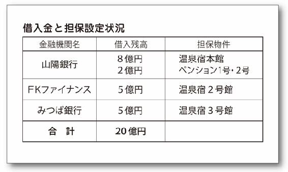
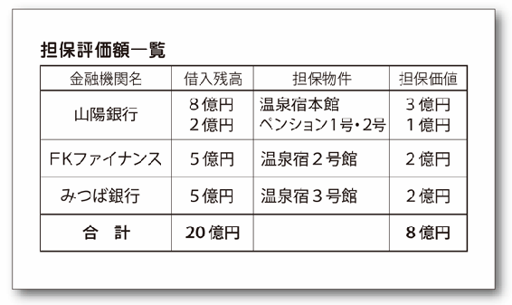
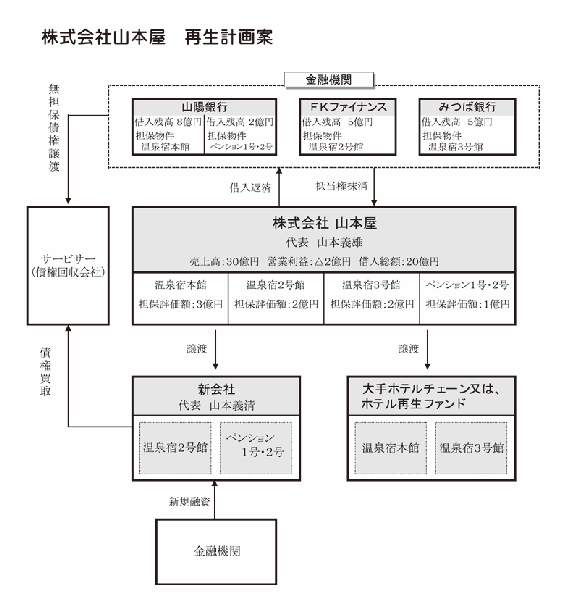
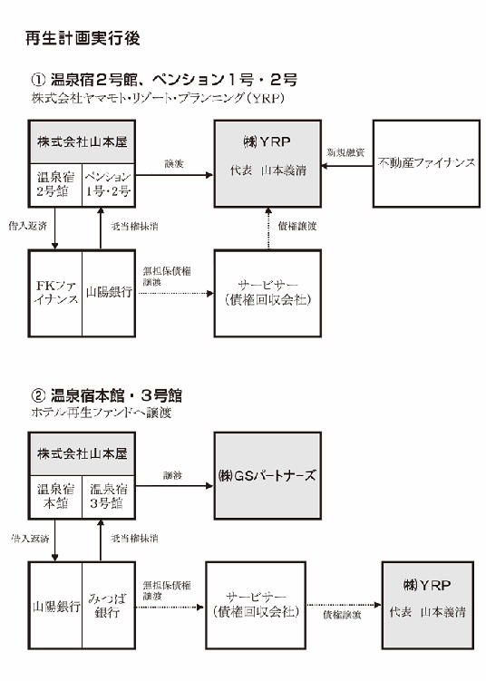
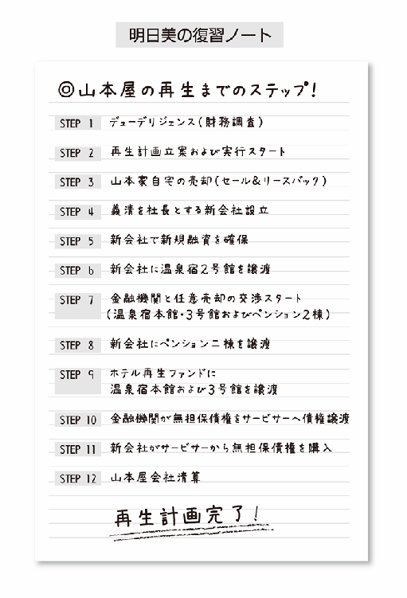

| 会社再生ガール | |
| 田中伸治 | |
会社再生ガール
Ｔ＆Ｔフィナンシャルグループ株式会社
代表取締役社長
田中伸治著
目次
この章のポイント
★再生プランナー・相馬明日美となじみの温泉旅館「山本屋」
この章のポイント
★再生か自己破産か？ 山本屋の決断
★総合包装資材メーカー「プレパッケージ型民事再生法」
この章のポイント
★山本屋を襲う敵対的買収シナリオ
★中堅エステサロン「美しき復活劇」
この章のポイント
★温泉旅館再生プロジェクト始動
★デューデリジェンス ★再生計画スタート
この章のポイント
★再生プランナーＶＳ整理屋
★債権者との攻防戦 ★新会社への事業承継
この章のポイント
★ホテル再生ファンドへの旅館売却
★債権譲渡 ★会社清算 ★山本屋のＤＮＡ
この章のポイント
★山本屋と山本家の幸せな結末
★再生したものとされたもの

プロローグ
温泉旅館とデコボココンビ
総合包装資材メーカー・株式会社トミオカ包装の会社再生案件の打合せで小田原に訪れた相馬明日美は、同期のパートナー・米田篤とともに、なじみの温泉旅館「山本屋」を訪れる。
「山本屋」は明日美の大学時代の後輩、山本義清の父が経営する老舗旅館。「せっかく小田原に来たからには」ということで、明日美の独断によって篤も半ば無理矢理に滞在することになったのだった――。
１
「ふわーっ、なんだか生き返るなぁ」
相馬明日美は大あくびをしながら、立ちのぼる湯気を見ながらつぶやいた。
心地よい疲れがじわりじわりととれていく。
細胞が活性化して、心も体も再生されていく気がする。
「あのぅ、明日美さん」
お湯の心地よさに浸っていた明日美が振り返った。
単純温泉（アルカリ単純温泉）と書かれた浴内札が目に飛び込んでくる。
「いつまでそこにいるつもりなの？ 早くおいでよ、篤くん」
「だってさ、そんな、僕たち同僚なんだよ。それが、こんな、ふたりとも裸で......」
「いいんだって、あたしは平気なんだから」
明日美が入浴している湯船から数歩程度歩いた先。
脱衣所の窓に米田篤のシルエットが映り込んでいる。
その細身の身体は、どうも草むらのすすきが風に揺れているようにしか見えない。
「へーっくしょん」
篤が前のめりに大きなくしゃみをした。
これが子どもだったら「かわいい」の一言で評されるのだろうが、秋のすすきをみて、わびしげな気持ちを覚える人はいれど、かわいいと思う者はいないだろう。
「だから言わんこっちゃない。早くおいでってば」
「だって、その、一線を超えちゃうというか......」
「バカねえ、一線も温泉もないじゃない。さっさと入らないと風邪引いちゃうよ？ あたし篤くんのお守りするつもりないからね」
「そんなあ」
篤は半べそをかいた顔をして、下半身をタオルで隠しながら歩いてくる。
そこそこの容姿端麗、大学時代に米田という苗字をもじって「ヨンちゃん」「ヨン様」と呼ばれていた人気者も、明日美の前では人が違うように茶化されることが多い。
「うわっち。熱いよ、こんなに熱かったらやけどしちゃわない？ そもそも人間にとって適温って言うのは......」
「いいからさっさと浸かるの！」
明日美は篤が下半身を隠していたタオルを強引にもぎとった。
「いやーん」
篤は見事に湯船に落下し、大きな水しぶき、いや、湯しぶきをあげた。
「ちょっとやそっと見せたぐらいで減るもんじゃないでしょ」
明日美はざばりと音を立てて湯船から立ち上がった。
「ちょ、ちょっと！」
篤が両手で目を覆う。
「何を期待してるの？」
明日美は篤ににんまりとした笑いを向けた。明日美の体にはしっかりタオルが巻かれている。
篤が両手の指の隙間から明日美に視線を向けた。
「あーっ、いけないんだ！ 温泉にタオルをつけるのなんて、マナー違反なんだからね！」
「だって、見られるのいやなんだもん」
「減るもんじゃないんでしょ？」
「減るわよ。簡単にハダカを見せちゃうと、あたしのピュアな心がだんだん擦り減っていくのよ、わかる？」
明日美は湯船から出ながら、篤に投げキッスを投げた。
「ピュアな心って......明日美さんにそんなのあったっけか？」
篤がぼそりとつぶやくように言うと、明日美の動きが止まった。
「なんだって？」
「いや、なんでも......明日美さん、それ、バスタオルでしょ？ どうやって身体を拭くの？」
「そりゃきまってるじゃない」
「きまってる？」
「篤くんのバスタオルを使うのよ」
「へ？」
「じゃ、ごゆっくりー」
「ちょ、ちょっとそんな意地悪な！」
明日美は、「また悪い癖が出た」と思いながらも反省はしていない。篤に背を向けたまま、少し舌を出すばかりだった。
２
明日美は更衣室で、篤のバスタオルを奪って身体を拭き、浴衣に着替えてひと心地つけた。
扇風機から送られてくるそよ風が心地いい。
「ふう」
明日美の視線の先に、『相州御宿山本屋 天然温泉混浴露天風呂』という文字が飛び込んでくる。
「小田原の案件もがんばんなきゃね。今日はキックオフだ」
小田原の案件。
明日美は企業再生プランナーとして手掛ける案件の打ち合わせで会社訪問をし、その足で今ここに立ち寄っている。
クライアントである株式会社トミオカ包装は、ダンボール、緩衝材、食品トレーなどを主力製品とする総合包装資材メーカー。
自社で企画開発から製造、販売を手掛けるトミオカ包装の社長・富丘誠司は、明日美と篤が所属するコンサルティング会社「アダム・コンサルティング」の社長である田原真一の昔からの知り合いだという。
トミオカ包装は生分解性プラスチックなどエコに対応した包装資材の研究開発に積極投資している先進的なメーカーだ。
既に緩衝材や食品トレーの大半はエコ製品となっている。
その製品力と価格面の競争力ゆえに、得意先は中堅から大手包装資材卸業者、はては運送会社、半導体メーカーと幅広く、安定した顧客を多数保有している。
だが、三年前から自社製造工場を建設、原価低減を目指して徹底したコスト管理を行ってはきたものの、昨今の原材料コストの高騰から原価率は上昇傾向にあった。
業界の慣習から手形の入金・支払いがそれぞれ七割を占めるため、常に経営リスクが高い状態での営業を余儀なくされている。
そこへきて新製品の開発投資や大口得意先の倒産が重なってしまい、資金繰りが逼迫し、自力再建は絶望的になる。
仕入先への債務支払いも滞りがちになり、日々の資金繰りをノンバンクやサラ金に頼るなど、既に疲れ果てているのは間違いない。
そして何より疲れているのは、社長の富丘自身だった。
「社長、なにはともあれアダムに任せてください。今はお疲れだと思いますけど、すぐお疲れはとれますから」
「そうそう、明日美さんはね、アダムのウコンって呼ばれているんですから」
「ちょっと、篤くん、社長さんの前で何言っているのよ？ それになんであたしがウコンなの？」
「明日美さんがいれば、二日酔いだって平気ですよ。なーんちゃって」
米田は学習の能力が高いのか低いのかわからず、同期としてパートナーを組んでいる明日美が頭を抱える発言も一度や二度ではない。
ただ、米田渾身のネタふりも今の富丘には届かなかったのは事実だった。
富丘は苦笑するでもなく、ただ一点のみを見つめていたのだから。
それだけ切羽詰まっているのだろう。しかし、この状態は珍しいことではない。
経営の先行きが見通せず、家族のように愛してやまない従業員にも累が及ぶとなれば、まっとうな経営者ならば誰だってこの状態に陥るものだ。
大事なのは、そこでエンジェルと出会えるかどうか。
エンジェルは、俗な意味でのエンジェルではなく、気持ちを楽にしてくれ、そして光の差す方角へ迷える子羊を導き、再生をうながしていける文字通りのエンジェルだ。
田原はこの難案件を、「アダムの凸凹コンビ」と揶揄されていた明日美と篤に任せたのだった。
「小田原ですか。美味いかまぼこが食べられるな。ねえ、明日美さん！」
社長室で田原から説明を受けた篤の第一声を聞いた田原の顔には明らかに「指名失敗か？」との不安の色が浮かんでいた。
明日美もそう思う。
エンジェルはいきなりかまぼこ目当てに小田原にはいかない。
だが、明日美と田原の信頼関係ゆえに、「何か意図があってこのコンビにしているのだろう」ということは、明日美もなんとなく察しはついていた。
「さて、先に部屋に戻るかな」
明日美は、やはり米田をおいてけぼりにしたまま、更衣室を後にした。
３
「立ち寄ってくれてありがとうございます」
「うん、こっちこそ。相変わらずいい旅館だね」
明日美の客室。
まだ首筋から湯気が漂っている明日美とは対照的に、かっちりとスーツを着こなした青年・山本義清が座っていた。
篤も割と顔立ちは整ったほうだが、それでも月とすっぽんの「格の違い」を感じさせる顔つきだ。
きっとサラブレッドというのはこういう人のことを言うんだろう。
明日美は、別にその気がないのについ見入ってしまう端正な顔立ちを見つめながら感心した。
田舎の一温泉旅館の跡取りというだけで、気品に相応しい財力があるというわけではない。
それでも義清というかつての後輩は、十一代続く御宿山本屋の後継者として凛とした魅力を放っていた。
「それにしても......うふふ、やっとこの部屋が取れたよ。ありがとう、義清くん」
年季の入った梁が宿の歴史を感じさせる和畳の部屋。
温泉旅館といえば、どんな和室であっても電化製品の類が現実的に見えてしまうものだ。
だが、この御宿山本屋のこだわりは徹底されていた。
まずテレビは一切置かれていない。
テレビが見たければ、別室にある視聴覚ルームに移動して見なくてはならない。
さらにはポットや冷蔵庫といった家電製品はすべて木箱に収納され、意図的に利用するとき以外は隠されている。
蛍光灯も和紙張りの覆いがつけられ、間接照明風になっているだけでなく、コンセントの類も客室を見渡す限り見当たらない。
当然、あるのは間違いないのだが、視覚から遮断されているというわけだ。
古き良き、昔の家をコンセプトにしているだけに、現代から隔離された空間だった。
この旅館に来たのはもう何度目だろうか。
明日美は何か安らぎを感じたいと本能が告げるときには、決まってこの旅館に足を運んでいた。
実家に帰るとすでに他人の家のような気がするから、ここに実家の安らぎをもとめているのか。
「なんせ、この部屋はあれよね？ 清水の次郎長親分がお使いあそばされた部屋なんだよね？」
「相馬先輩、好きでしたよね、次郎長親分のこと」
「好きも好きよ、次郎長親分のような人こそ男の中の男よ」
「菅原文太さんが好き、高倉健さんが好き、清水次郎長親分が好き、眠狂四郎が好き......ほんと、わかりやすいというか、見境がないというか」
「渋い男が好きなの。もう、ほっといてよ」
義清がちらりと隣室に目をやると、篤が布団に横たえられて唸っている。
情けないことに風呂からあがれず湯あたりをしてしまったらしい。
明日美が手酌で冷酒を酌みながら、
「篤くんも清水次郎長親分みたいにたくましくなれればいいんだけど」
「先輩の彼氏さんかと思ってました。なんだか予想外のタイプの方とご一緒になられたんだなって」
「言うわね。残念ながら、あたしの婚活はもうちょっと先。今は仕事第一よ」
「おつぎします」
義清は膝立ちになり、明日美の徳利を持ち上げると酌をした。
大学時代、古武道サークルで先輩後輩という関係だった義清は、とかく機転がきくことでサークル内でも一定以上の評価を得ていた。
実際に、数名いた男子部員の中でも一味違った存在感を醸し出しており、明日美の代が引退する際、満場一致で義清が部長に選ばれた。
義清は、最初は自分には荷が重いと断った。たかだか部員十数名のサークルなので、大袈裟に考えることもないのだが、一度丁重に断ってから、「どうしても」という周囲の意見に後押しされながら、「では」と謙虚に引き受けたのだ。
その姿勢も二十歳になったばかりの若者とは思えない落ち着きぶりがあったものだった。
「最近はペンションなんかも経営してるんだってね？」
「ええ、俺が言いだしたことなんですけど。やりたいならやってみろって」
「すごいね、もうすっかり実業家じゃない」
「まあ、そんなこともないんですけど」
「謙遜しちゃって」
明日美は本心から言った。
「温泉もいいんですけど、どうしても客層が固まりやすくなってしまうでしょう？ 若いお客様に目を向けることだけが重要ではないとわかってはいるんですけど、温泉と料理という商品だけに需要が集まるほど現代は落ち着いた時代ではありませんからね」
「そんなものなの？」
「そんなもんなんです。温泉旅館って、実は難しいんですよ。今はクーポンサイトなんかもすごく多いですし、価格もたたき売りみたいなところがある。それでも客足が遠のくわけですから、旅館一本に集中してしまうと危険だと思いましてね」
「旅館を残すために？」
「ええ。集中と選択がビジネスの基本ではあるのでしょうけどね。あくまで集中できるのりしろがあればの話でしょう？ 田舎の温泉旅館で、温泉にだけ集中してしまうと、リスクが高すぎると思っていまして」
「おじさまは賛成なの？」
明日美は幾度も旅館を訪れていることや、義清の大学時代の先輩ということもあり、父親の山本義雄とも親しくしていた。
義清の父親で、現在、相州御宿山本屋の十一代目当主となる山本義雄は、働き盛りをやや過ぎた六十五歳という高齢でありながら、なおかつ現役で働いている。
「馬車馬のように働く」という言葉があるが、義清によれば、かつては馬車馬どころかブルドーザーのようなものだったらしい。
一にも二にもお客様のため。
多少の利益よりもお客様の満足感。
根っからの温泉宿根性が備わっていたと言えるだろうか。
若かりし頃に、丁稚奉公としてホテルマンの修行を積んだこともある義雄は、ことあるごとに義清にサービスのなんたるかを教えてきたという。
そして今、義清が十二代目を継がんとしているこの時期、できるだけのことをしてから引退をしたいようだった。
明日美自身も、何度となく義雄と語らったことがある。
それは義清の先輩としてではなく、どこか人間的に学びたいことがあるから――義雄はそういう人だった。
義清はたたずまいを崩さずにテーブルの上を軽く整理する。
「ええ、親父は僕の代になっても、やりたいようにと言ってくれています」
「いいお父様よ、大事にしなきゃ」
「僕が子どもの頃から仕事の虫なのは変わりません。それでちょっと道を外したこともありましたけどね」
「そっか」
「高校の頃まではずいぶん親父やおふくろに心配かけましたからね。俺みたいなのが大学なんかに行かせてもらって、しかもこうやって経営を任せられようとしている。だから、俺はがんばらないといけないんですよ」
「そうだね」
義清自身がかつて語ったことがある。
どこまで遠慮が含まれているかはわからないが、義清は大学に入る前までは、温泉街の界隈では有名な札付きの不良だったという。
どのように更生し、驚くべき落ち着きを備えるにいたったかはわからない。
ただ、「親父とおふくろが......」という言葉の端々に、感謝と愛情があると伝わってくる。
父・義雄と母・みずえの愛情を注がれ続けた義清は、江戸時代より十一代続く老舗旅館の跡取りとしての重圧に苦しんだ。
ただ、それを理解し、他人と比較せず、旅館の売上げのことよりも常に客の満足だけを優先して考えるような真っ直ぐな両親に感じ入り、一度は道をはずしかけた義清も、次第に自分の役割や使命というものを考えるようになったという。
蛙の子は蛙というが、あの親にしてこの子ありだと明日美は感じていた。もちろんいい意味でだが。
「今夜はお父様は？」
「すみません、今夜は温泉組合の寄り合いで出払っていますが、明日になればごあいさつさせますから」
「仕事の虫か。あたしには縁のない言葉だな」
「かもしれませんね」
義清が明日美に屈託なく笑いかける。
明日美は一息で冷酒を喉に流し込んだ。
「知ってる？ 親の意見と冷酒は、あとからじっくり効いてくるって」
「出ましたね、名言が」
「親あっての子だからね。自分がやりたいようにやらせてくれるってのは、それは大きな愛情だと思うけど、愛情のなんたるかを理解して動かないといけないよね」
「おおよそ二十五歳の未婚女性のセリフとは思えませんね」
「こらっ、余計な言葉がいろいろ出てきてるぞ」
「僕も、親父やおふくろには恩返しがしたいですね。親父なんか、まだ六十五歳ですけど、逆にもう六十五歳といえなくはないから」
篤がもそりと立ち上がる。
「あっ、米田様、もう御気分はよろしいのですか？」
「ええ、はい。すみません、すっかり......」
「あれくらいで湯あたりするなんて、日ごろの鍛え方が足りないわよ」
「僕は......明日美さんとは違うからさ......」
「どこ行くの」
「ト・イ・レ！」
すねたように部屋を出ていく篤を見て、「まったく」と明日美がアヒルのように口を尖らせた。
４
「まったく、たまの休みだってのに、もっと行くなら行くでほかのところだってあるだろうに......どうしてこんな古めかしい温泉旅館なんかに......」
静寂で鎮まりかえった館内。
篤が足を踏み出すたびに床板がきしんだ。
トイレのついでに、脱水しかけた身体を潤そうとスポーツドリンクの自動販売機を探していた篤は、ふとした視線を感じて歩を止めた。
「こんばんは」
「ヒャッ！」
幽霊？
......ではない。
ひとりの女が廊下の角の縁台に座って涼んでいた。
「こ、こんばんは」
湯あがりの髪がなんとなく艶を感じさせる色白美人。
歳のころは三十代に届くか届かないかだろうか。
濡れた黒髪ゆえか、透きとおるような白い肌ゆえか、そのどちらもが際立って色気を感じさせる。
篤は見るともなく横目で女の姿をとらえながら、足早に目の前を通り過ぎた。
女は篤から視線をはずし、窓の外を眺めている。
目を見張るような美しい女に月の光という演出効果も加わって、どこかさみしげに見えた。
さわらぬ神にたたりなしってやつだな。
「あの」
不意に篤の背後から女が声をかけた。
篤は、期待交じりの顔で振り返った。
もしかしたら一緒に飲みましょうとか。恋のロマンスとか。それでいて、あんなことやこんなことが......。
もしここで自分がこんな美女を落としたとなると、明日美はどれだけ驚くだろうか。
女は篤ににっこりと笑いかけ、篤の足元を指差す。
「落とされましたよ？」
「へっ？」
「お財布」
女は篤が足元を見たか見ないかのうちに立ちあがり、篤の足元に転がっていた財布を拾い上げた。
「あ、すみません」
「いいえ、どういたしまして」
「あの、ご旅......」
「では、おやすみなさい」
ご旅行ですか。
その言葉は見事に遮られた。
女は篤に向けて会釈をすると、かすかな芳香を残して、音もなく廊下の角を曲がり去って行った。
「お、おやすみなさい......」
篤は女の残り香を肺いっぱいに吸い込もうとして、息を吸い過ぎ、むせかえった。
めちゃくちゃキレイな人だったな......。
篤は小躍りしながら、廊下に歩を進めた。
床板の音が、きしみながらも伴奏を奏でているようだった。
第１章
山本屋の経営危機と忍び寄る影
義清の父である山本義雄の様子から「山本屋」の経営難を察した明日美は、再生プランナーとして力を貸そうとする。
明日美の勝手な行動を止めようする篤だが、明日美は型破りな方法で自らの所属するコンサルティング会社の社長・田原から「進めてＯＫ」の言質をとってしまう。一方、「山本屋」の顧問弁護士である柚木は、山本義雄に執拗に自己破産をすすめるが、その背後には黒い思惑がひそんでいた――。
１
翌朝は見上げた一面がすべて鮮やかなブルーに染まった晴天となった。
明日美が御宿山本屋に滞在するのも残りは今日だけ。トータルで五日間の滞在となった。
土日、そして有給を利用して、本音を言えばもう少し長めに滞在していたかったが、会社の同僚たちの目を意識するとそういうわけにもいかない。
何より......社長の田原が小田原案件の報告を待ちくたびれているころだ。
それに、さすがに彼氏でもない篤をそこまで拘束するわけにもいかない。
「明日美さん、歩くのがはやいよ。僕、二日酔いなんだからさ」
「そう？ それは二日酔いだけのせいじゃなくて、足の長さの差かもしれないわよ」
「それって僕が、脚が短いってこと？ 言ってくれるじゃないか」
ふてくされる篤をしり目に、明日美は御宿山本屋の裏手から続くハイキングコースをぐんぐんと進んでいく。
小鳥のさえずりが心地よく耳に届く。
「そういえば、篤くん。昨日、なんだか嬉しそうな顔してたよね？ あれ、何？」
「えっ、それは......」
篤はギクリとした表情で立ち止まり、もごもごとしている。
東大出身のエリートのくせに、ちょっとした尋問にすら弱い。嘘をつけない性格だと言えば、それも長所になるのかもしれないが。
「そんな、明日美さんには関係ないことでしょ」
「そんなこと言っちゃって。かわいい女の人とおしゃべりでもしたんでしょ？」
「まま、まさか！ 僕が女の人と話す程度で顔に出して喜ぶ男に見える？」
「見える」
「こ、こ、こう見えても、米田家の跡取りとして、堂々たる態度で世間というものに......」
もはや見苦しい。
明日美はため息をついて振り返ろうとした。
何かと肩がぶつかる。
「あいたっ......あっ、ごめんなさい！」
明日美が振り返った先で、女性が転んでいた。
「いえ......こちらこそ不注意で」
「オー、ダイジョブデスカー？」
女性を抱きかかえるようにして屈強な欧米人らしき男性が支えている。
「ほんとうにすみません、お怪我はありませんか？」
「はい、大丈夫です。そちらは？」
女が長い髪をかきあげたそのとき。
「あっ、あなた！」
「あら......ごきげんよう」
明日美が目をぱちくりさせて篤を見ると、篤の頬が真っ赤に上気している。
「オシリアイデスカー？」
ブラッド・ピットのように端正な顔つきの外国人男性が眉をひそめて尋ねた。
「そうなのよ、マイク。昨晩、ちょっとね」
女は、篤に視線を投げたまま、整いすぎるほど整った顔に笑みを浮かべた。
「ははーん」
「明日美さん、ははーんってなんですか」
「やっぱり篤くん、昨日......」
「そんなんじゃないですってば！」
女は笑みを携えたまま。
「おふたりは、恋人同士？」
「とんでもない。ただの、まぎれもない、正真正銘の、いわゆる同僚です」
明日美は首を一八〇度横に振りながら答える。
「そこまで否定しなくても」
篤の声は無視した。
「あの、私、相馬明日美と申します。あれは米田篤。ただの、まぎれもない、正真正銘の、いわゆる同僚が昨晩何か御迷惑をおかけしましたでしょうか？」
明日美の後ろで篤が絶句したのが気配でわかった。
「不破雨月と申します。いいえ、とんでもない。たまたま旅館の中で通りすがって、少しお話させていただいただけですのよ」
「不破さんも山本屋に？」
「ええ、昨日から。一応、明日まで滞在することになってますけど」
「そちらのマイクさん、ですか？ と不破さんは、あの、その......」
篤がすごすごと前に出てきて尋ねた。
「何が言いたいの？」
「明日美さんは黙ってて」
さっきまで完熟のリンゴのように赤みを帯びていた篤の表情が、今では早熟な青リンゴのように様変わりしている。
何が言いたいのか顔に書いてあるとは、まさにこのことだろう。
雨月もそれを感じ取ったようだ。
「恋人ではありませんよ」
「フウフデース」
「えっ！」
篤の顔色が、今度は土気色に染まる。この男の顔面だけで、もはやリンゴ農園ができるかもしれない。
「マイク、違うでしょ。私たちも同僚なんです。こちらは、マイク・アンダーソン。私と一緒に仕事をしている、いわばビジネスパートナーです」
「オー、ウヅキサーン、ソレハナイヨー」
どうやらマイクも篤と同じ穴のむじならしい。
男というのは、えてしてそういうものなのだろうか？
田原も銀座で懇意にしている麗子ママのところへ飲みに行ったら、こうなってしまうのだろうか？
だが、麗子の魅力と一般女性の魅力を天秤にかけることはできない。
明日美は麗子と田原を頭の中から消した。
「どんなお仕事を......」と、明日美は声に出しかけて思いとどまった。
今はバカンス中だ。相手の事情はどうあれ、小鳥のさえずりが心地よく響く森のハイキングコースで、仕事の話などをしても仕方がない。それこそ、野暮というものだ。
「そうでしたか。私たちは今日までですので、ごゆっくりなさってください。あの旅館の跡取りは私の大学時代の後輩なんです。義清といって、すごくいい人なんですよ！ 義清も、きっと雨月さんみたいな人が泊ってくれてうれしいんじゃないかな」
「まあ、ありがとう」
一瞬、雨月の目が曇ったように見えたが、木々の間からすっと差し込まれる光が、その影らしき宿りを霧消させた。
「明日美さんも、米田さんも、せっかくお知り合いになれたのにおさみしいことですわね」
「おさみしい」という言葉の余韻が、旅を切なくさせる。
「じゃ、篤くん、いくよ」
明日美は雨月とマイクに会釈をして、やはり二日酔いで足元がおぼつかない篤の背中を押してハイキングコースを後にした。
２
「相馬さん、いつも贔屓にしてくれてありがとうね」
ハイキングコースから戻ってきた明日美を、御宿山本屋の十一代目当主であり、義清の父親でもある山本義雄が出迎えてくれた。
御宿山本屋のロビーではすでにチェックアウトを終えようとしている客がちらほら見受けられた。
「おじさま、こちらこそいつもお世話になります」
「いやいやとんでもない、大学時代にうちのボンクラ息子を鍛えてくれた恩人だ。こちらこそですよ」
ペコリと頭を下げる明日美に、義雄のやや薄目な頭頂部が折り重なった。
「ボンクラ息子だなんて。義清くんは立派な後継ぎになってるじゃないですか。昨日もペンションを成功させるんだって張り切ってましたよ！」
「ペンションね、ああ、そうだな。あいつもようやくやる気になってくれたようで」
義雄の語り口は謙遜ではあるものの、誇らしさがにじみ出ていた。
元暴走族の息子が立ち直り、江戸時代より代々続く旅館の看板を守る決意をしてくれたこと。義雄でなくても嬉しくないはずがない。
不意に義雄の携帯電話が鳴った。
着信画面を見て、義雄の表情がくもった。
「相馬さん、ちょっとごめんね」
「ええ、おかまいなく」
義雄は、フロントや客の人目を気にするかのようにロビーの隅に走り寄り、話し始めている。
「仕事の電話なら事務所ですればいいのに」
篤の指摘もあながち間違ってはいない。フロントから事務所につながっているので、業務の電話連絡ならばそちらでかければいい。だが、義雄はフロントのスタッフにすら気を遣っているように見えた。
「そりゃ、社員にも聞かせられないような話だってあるじゃない」
社員にも聞かせられない話。
明日美が知っているのは、おおよそがいい話ではない。
それを裏付けるかのように、ロビー片隅で義雄の声がだんだんと大きくなっていく。
「ですから、そこをなんとかお願いできませんか。こないだまではちゃんと話を聞いてくれていたでしょう？ えっ、自己資本比率が低いって......そりゃ旅館の売上げが落ち込んでいるのは事実ですが、息子がやっているペンションは......」
そこまで義雄が言った時、入口から雨月とマイクが戻ってきた。
雨月は明日美たちに気づき、笑顔を向けてきた。
マイクが義雄の姿に気づいた時、義雄がハッとした表情を見せた。マイクはすぐに視線をそらし、雨月とともにラウンジへとはいっていく。
「おじさま......どうしたんだろう？」
「気になりますね。自己資本比率なんて言葉、銀行関係者ですかね、電話の相手は」
「詮索しすぎよ」
「そりゃそうですけど」
電話を切った義雄が戻ってくる。心なしか、義雄の額がうっすらと汗ばんでいるようだった。
「どうかなさいましたか？」
「いや、別になんでもないんだ......」
「おじさま、私、経営コンサルティングをやっているんです。少しならお力になれるかもしれませんから、もし何かあったら話してくださいませんか？」
明日美は名刺を取り出そうとしたが、ハイキングに出かけるようなラフな格好で名刺を持ち合わせているはずがない。
「あ」
「もう、これだから明日美さんは。ビジネスパーソンたるもの、いついかなるときも名刺は欠かさずに」
篤が名刺を取り出して義雄に渡す。
「アダム・コンサルティングの米田と申します」
「米田、さん？」
明日美は素早く篤の名刺を奪い取った。
「なにするの？」
フロントのペンを借りて篤の名前の上に二重線を引いて消し、自分の名前を書き込む。
「申し遅れました、アダム・コンサルティングの相馬です。いつもお世話になっておりますので、御宿山本屋様には特別サービスとしてご相談をお伺いいたします」
「はあ？」
篤が不満そうに明日美の顔を覗き込む。
「相馬さん......」
戸惑う義雄に、明日美はにっこりと笑いかけた。
３
明日美と篤の客室は、布団も上げられ、すっかりと片付いた様子だった。
ふたりともハイキングから帰ってきたら、一服してすぐにチェックアウトするつもりだったので、荷物もまとめられてある。
客室内で動くものと言えば、御宿山本屋の女将である山本みずえが出してくれたお茶の湯気と、重そうに言葉を絞り出すように話す義雄の唇だけだった。
「そこまで経営が悪化していただなんて......」
昨晩から続く酔いどれ気分が、すっかり抜け落ちた顔で篤がつぶやいた。
「ええ、さきほどの電話がまさに地獄への片道切符でしたわ。お恥ずかしい」
「では、現状としてはメインの山陽銀行に追加融資を相談したものの、旅館の業績悪化を理由に拒絶されてしまったわけですね」
「そうです。自己資本比率の低下と、なんやったかな、手元現金の希薄化とかなんとか難しいこと言われましても、さっぱりですけども......」
銀行の追加融資を断られれば、それだけで事業主にとっては蜘蛛の糸を切られたようなものだ。あとはカンダタさながらに、地獄の底へ落ちていくような気分にさえなると聞く。
「失礼ですが、借入金はトータルでどの程度あるんですか？」
「総額で二十億円です。山陽銀行が十億円、ＦＫファイナンスとみつば銀行がそれぞれ五億円、......」
「けっこうなもんですね」
篤がメモをとりながら答える。
「ええ、こんなことになったのもすべて私の不徳の致すところで......」
「おじさま、まだ落ち込むのは早いですよ。担保はいまのところ、どのような状況なんですか？」
「ええ、書き出したものがありますので、こちらを見ていただくほうが早いですね」

「なるほど。社長さんのお話をざっとまとめると、従業員は一五〇名で、前期決算の売上高が三十億円、営業利益がマイナス二億円。ただし、ペンション二棟は二千万円の営業利益を出している、と」
「そうね。金融機関からの借入金は総額二十億円、連帯保証人はおじさまと義清くんのお母様、これはすべての金融機関においてということですね？」
「ええ」
義雄がうつむいたまま答える。義雄の膝の上で握られた拳に力が込められているのが感じ取れた。
当然だろう。息子の大学時代の先輩に対して自らの恥部をさらけ出しているのだから。
だが明日美は義雄の人間性、そしてその素直さに改めて敬意を感じていた。
自分を頼ってくれている。なんとか力になりたい。シンプルな考え方だったが、明日美と義雄、そして義清の関係としてこれほど喜ばしいものはなかった。
「所有不動産は、旅館、ペンションの土地と建物すべてか。あとは社長の個人名義の資産として、小田原に一戸建てを所有していて、それの担保価値が二千万円となっている。担保の設定状況は......江南信金の抵当権が設定されているのか」
「それも洗い直してみる必要があるけどね」
「まあ、そうですけど......明日美さん、話を聞くだけじゃなかったんですか？」
「聞くだけって？」
「だって、ここの再建を受けるかどうかだなんて、僕たちだけじゃ決められないでしょ？」
「あら、受けるわよ。ねえ、おじさま？」
「は......え？ 受ける？」
目を白黒とさせている義雄が、何が何だか分からないという顔つきで答えた。
白黒具合でいえば篤も負けてはいない。
「だから、私たちが御宿山本屋を再建させるって言ってるの」
「無報酬で？」
「そういうわけにはいかないけど、超格安で」
「そんな......」
謙遜と遠慮がまざった義雄のつぶやきを遮るように篤がたたみかける。
「そんな！ 田原社長にも報告せずに？ そんなことできるわけないじゃないか」
「できるわよ。あたしがやるといったらそれでＯＫなの」
「明日美さんに何の権限があって......」
「つべこべうるさいわね！ いい？ ここはあの清水の次郎長親分もお泊りになった宿なのよ。江戸時代から十一代、いや義清を入れたら十二代以上も続く宿よ。いわば日本の宝よ。その宝を、篤くんは見殺しにするっていうの？ おかしいんじゃない？」
「でも、でもね」
明日美の怒涛の攻め込みにたじろぐ篤だったが、田原の大目玉がこわいのか、珍しく負けじと応戦してきた。
「僕たちはアダム・コンサルティングの社員なんだよ。そんな勝手な決定が許されるわけがない。組織人として、僕は......」
「じゃ、社長のＯＫが取れればいいのね？」
明日美は携帯電話を取り出して、ボタンを押した。
オンフックで音声が流れだしてくる。
『相馬か。どうした？』
「あ、社長。すみません、忙しいときに」
「し、しゃちょう？」
もはや義雄はふたりのやりとり......いや、明日美の行動にまったくついてこれていない。
『ああ、構わないよ。そろそろ帰ってくるころだと思っていたが、何かあったのか？』
「はい。あの、社長、何も言わずにＯＫと言ってください」
『は？』
「じゃないと、あたし、イヴの専属になりますから」
『え？ イヴって麗子ママのところのイヴか？ 何を言っているんだ、お前？ ＯＫって、何がＯＫなんだ？』
「社長。言っちゃいますよ」
『言っちゃいますって何を......待て！ お前、そういえば米田と一緒にいるはずだな！ そこに米田はいるのか？』
「います」
『言っちゃうって、もしかして、あのこと？』
「あのこと」
『そこで言っちゃうわけ？』
「ここで言っちゃうわけ」
『......』
「あー、口が滑っちゃいそう、あたし、もうガマンできなーい」
『わ、わかった。何があったかは知らんが、とりあえずＯＫだ。というか、とりあえずだからな。あまり変なこと考えるなよ』
「ありがとうございます。田原社長、あたし社長が大好きです」
『あのな、お前何を......』
田原が何か言いかけようとしたが、明日美は構わず通話を切った。
篤がなぜかうつむいている。
「どうしたの、篤くん。社長はＯＫだって」
「社長を脅すなんて」
「脅しじゃないわよ。駆け引きよ駆け引き」
「あのことって何？」
「教えない。だって篤くんは、あたしの考えに反対なんでしょ？ でももうどう反対したって共犯だけどね」
篤はため息をついてごろりと横になった。
「篤くん、クライアントの前で失礼よ。ということで、おじさま、よろしくお願いします」
半分石化状態になっていた義雄は、額の汗をぬぐいながら答えた。
「よろしくって、あの、申し訳ないが、私、何が何やら......」
「ですから、私が御宿山本屋を救ってみせますから。温泉一年フリーパスと宿泊料50％オフを条件に」
明日美は、ぺろりと舌を出して小悪魔のような笑みを浮かべた。
４
アダム・コンサルティング本社――。
東京は銀座に社屋を構えるコンサルティング会社は、社員総勢一〇〇名という所帯で、各社員ともに日々中小・中堅企業とその経営者の再生のために駆け回っている。
業界内では「再生の伝道師」と呼ばれる田原真一が若くして独立、一代で築き上げた、まさに企業にとってのノアの方舟。
明日美と篤は、めまぐるしい空気の流れの隙間を縫うように社長室に向かっていた。
篤は、もはや心ここにあらずという体で、電話の音ですらビクビクと反応している。
無理もない。いくら明日美が親しくしている相手だからといって、社長に無理やりＯＫを出させ、しかもその現場にいたのだから。
篤からすると、明日美の行動は、会社に盾つくようなものだろう。
貫き通してもいい正義と、悪い正義があるとするならば、明日美のそれは人情的には理解できなくもないが、組織論としては決して踏み込んではいけないタブーの方法論だ。
きっと篤はそのようなことを考えながら、どうやって田原に弁明をするかだけしか頭にないだろう。
通路の随所に置かれた緑で、柔和なイメージを出している社長室の前に立った。
ノックをする。
「入りなさい」
田原の声はいつもと変わらないクールな声だ。
「失礼します」
悪びれたふうもなく明日美がドアを開け、社長室に入ると、明日美の背中に隠れるようにして篤が音もなく進む。
田原は四十二歳とは思えないほど若々しいともっぱらの評判だった。
端正な顔つき、さらりと揺れる柔らかな髪。そして童顔な顔立ち......。
にっこりと笑った表情を見た女性たちは、どうにも母性本能をやられてしまい、子どもをあやすように田原に接する。
しかし、その表からは想像もつかないほど冷静で、ＩＱ１７０を超える明晰な頭脳でクレバーに問題点を指摘し、無駄を一切排除してゴールに突き進む姿のギャップに戸惑うクライアントも多いと聞く。そして再生への情熱を燃えたぎらせていることも。
田原は本革張りのデスクチェアに身をもたげ、目をつむって何かを考えていたようだった。
明日美が入ってくるのを認めると、ゆっくりと目を開けた。
「寝てたんですか？」
「そんなわけないだろう。すまないが、あまり時間がない。報告だけ済ませてくれないか？」
「あの、報告というのは小田原のほうの......ですよね？」
篤が明日美の背中からおどおどと顔をのぞかせた。
「あの、あの、社長、怒ってます......ですか？」
「怒ってない」
「どうして社長が怒るわけ？」
明日美が篤をじっと見つめる。
篤は前門の虎、後門の狼といったふうにすくみあがってしまった。
「まずは小田原案件から聞こうか。米田、レポートはまとめてあるか？」
「あっ、はい、こちらです」
田原は篤からレポートを受け取ると、無言で目を通し始めた。
◇会社概要
会社名......株式会社トミオカ包装
代表者......富丘誠司
設 立......一九九六年
事業内容......産業用包装資材の開発・製造・販売メーカー
本社・製造工場......神奈川県小田原市（賃貸）
前期決算......売上高十五億円、営業利益△一億円
従業員数......五十名
借入金......総額十億円（共和銀行六億円、あおば信金三・五億円、
オーシーファイナンス〇・五億円
連帯保証人......富丘誠司（全金融機関）
会社所有不動産......なし
富丘社長所有資産......小田原市に自宅所有（共和銀行の抵当権設定）
◇事業モデル
トミオカ包装はダンボール、緩衝材、食品トレー等を主力製品とする総合包装資材メーカー。自社で企画開発・製造・販売部門を保有。
五年前から生分解性プラスチックを取り入れた新製品の開発に積極投資しており、既に緩衝材や食品トレーなど、取扱製品の大半はエコ製品となっている。
その製品力と価格面を競争力とし、得意先には中堅・大手包装資材卸業者から運送会社、半導体メーカーなど幅広い販売ネットワークを築いている。
三年前から神奈川県小田原市に製造工場を設け、徹底した原価低減を図ってきたが、昨今の原材料コストの高騰から原価率は上昇傾向にある。
◇現状と課題分析
多数の優良顧客を有していることから、毎月の受注数に大きなブレはなく、販売単価の下降はあるものの、安定した受注を維持している。
しかし、原材料価格の高騰による製造原価率の上昇で、思うように販売価格に転嫁できず、利益率の低下を招いている。売上総利益の減少をカバーするため、経費節減に努めているが、原価率の上昇幅が大きく、直近の業績は売上高十五億円、営業利益△一億円と業績悪化に歯止めが掛からない。
一方、環境問題に関心の高い富丘社長の方針で、エコに配慮した新製品の開発を積極に実施。機械設備の導入や人員増加など、三年間で五億円を投入。そのほとんどは銀行からの借入金で賄っている。
◇資金繰り状況
業界の慣習で入出金ともに手形決済が全体の七割を占めている。売掛金は手形を回収後に共和銀行で割引することで現金化。
借入金については、三ヶ月前にオーシーファイナンスから手形借入で五千万円を調達。返済のため毎月四百万円の手形決済が必要となる。
一方、共和銀行とあおば信金は返済条件を変更（リスケジュール）しており、当面半年間の元本返済は猶予されている。ただし、リスケジュールによって、高利のノンバンクでの手形割引を余儀なくされ、資金繰りに光明は見えない。
また、大口受注先が二度目の手形不渡りを出して倒産。売掛金約六千万円が未回収となったことで資金繰りは更に困窮。一部の買掛金や税金を遅延、来月末の手形決済の資金目処は付いていない。
富丘社長は資金繰りに当てるため、個人名義で消費者ローンから五百万円の借入れをしている。
◇再生計画の検討
大手包装資材メーカーの内田産業はトミオカ包装の買収に積極的であった。ただし、いまの負債を抱えたままの支援では、運転資金を含め多額の買収資金を必要とすることから買収は断念すると通知を受ける。
一方、手形決済をはじめ資金繰りの正常化に目処が立たないことや買掛金の遅延から業界内では経営難との風評被害が広がっており、自力再建は絶望的と判断できる。
スポンサー候補先の内田産業には、再度、トミオカ包装への支援意向を確認するが、負債を引き継がないスキームであれば買収したいとの回答を得る。
富丘社長としては、業界内で資金力のある大手企業との資本提携やＭ＆Ａで再生を希望。富丘社長自身は経営破綻を招いた責任から自己破産を覚悟している。
「なるほどな。で、お前たちはどうする考えなんだ、相馬......あれっ？」
田原がレポートから目をあげて絶句した。
「ちょっと、明日美さん！ 何やってんだよ？」
篤が明日美の肩を小突く。
「あっ、はい、おはようございます」
明日美はうつらうつらと船をこいでいた顔をあげ、目をこすりながら田原に朝の挨拶をした。
田原はイケメン台無しのふうで、あんぐりと口を開けてみている。田原の明晰な頭脳も、まさか自分がレポートに目を通している間に明日美が居眠りをしているとは夢にも思わない。
「あ、明日美さん、おはようじゃないだろ？」
「だって、昨日、義清と盛り上がって朝まで飲んでたもんだからさ」
「知ってるよ、僕だって付き合わされたんだから。でもさ」
「もういい。相馬なんだから仕方がない」
「あーっ、それ差別発言ですよ！」
明日美は本気で怒っているのか、ばかばかしくなるほどかわいらしいしぐさで田原に抗議する。
「米田......ふたつ頼みがある。まず誰かに頭痛薬を頼んでくれ。もうひとつは、相馬は放っておいてお前の所見を聞かせてくれ」
明日美は自分が放っておかれたと思い、社長室のソファにどっかりと腰をすえた。
テレビのスイッチを入れる。
六十二インチの大型スクリーンが起動し、ワイドショーの映像が流れた。
「明日美さん！ ほんといい加減にしないと......」
「米田、もういいからやってくれ」
「社長、これは組織として決して許される行為では......」
「わかったわかった、時間がないから、とにかく頼むよ。相馬は勝手にテレビを見させておけばいい。子どもにおもちゃを与えておとなしくさせるようなもんだ」
ワイドショーのコメンテーターのギャグに明日美が思い切り噴き出した。
「わかりました。デューデリジェンスの結果、トミオカ包装の経営は事実上、破綻寸前と言えます。赤字運転資金の補填や買掛金の遅延など、資金繰りを正常化するためには、二億円近い真水が必要です。しかし、いまのトミオカ包装の財務内容では資金調達は期待できません。それにリストラを実行しても営業キャッシュフローの改善には時間がかかりますし、来月末の手形決済の目処が立たないことなど、総合的に判断すると自力再建の可能性は極めて低いと考えています」
篤は淀みなく言い切った。
「確かに手形は厄介だな。それに風評被害が広がっているとなるとスピードも重要だ。どうやって再建させるつもりだ？」
「はい。過去三期分の部門別損益を分析しました。その結果、経営改善で黒字転換が可能な製造・販売部門をトミオカ包装から分離することで共倒れを回避できます。将来性のある部門を切り離すことで事業の継続と従業員の雇用は守れますからね」
「なるほど。具体的なスキームを教えてくれ」
「はい。まず会社分割で、製造、販売部門の営業と権利・義務の全部を分離します。これによってトミオカ包装の子会社として製造、販売機能を引き継いだ新会社が誕生するわけです」
「つまり会社分割で事業と債務を分離するわけだな。資金繰りを悪化させた開発部門だけをトミオカ包装に残すってわけか」
「そのとおりです。トミオカが業界から淘汰されずに安定成長を遂げてきたのは、新製品の開発に経営資源を集中してきた成果であることは事実です。一方で、いまの製品力で戦えることも事実です。暫くは新製品の開発は必要ないと判断しています」
「なるほど。それはいいが、債務だけを残したトミオカ包装はどうする？」
田原は、本事案では会社分割の手法は馴染まないと考えていたがあえて誘導した。
「新会社の株式をＭ＆Ａを検討している同業他社に譲渡するんです。つまり譲渡代金を返済原資に債権者と交渉して、最終的には債権放棄を要請します。それに会社分割は債権者の同意が不要ですから、手続きもスムーズに運びます」
「それはどうかな。そんな簡単に債権者が交渉に応じてくれると思うか？ ノンバンクはリスケ交渉にも応じてくれなかったんだろ？ それに手形の処理は厄介だぞ」
田原の反論に珍しく篤は食い下がった。
「一回目の不渡りは仕方ないと思っています。それにトミオカ包装が自己破産したと仮定して清算価値を算出してみました」
「その結果は？」
「租税債権や労働債権など優先的債権を弁済したあとに、一般債権者にまわせる配当金はほぼゼロです」
篤は清算配当率を計算した資料を田原に手渡した。
「ＢＳ（バランスシート）はそこまで痛んでいたか......」
田原は一通り資料に目を通したあと続けた。
「清算配当率を上回る弁済ができればの話だが、この資料は銀行交渉の材料にはなるな」
「僕もそう思います。新会社株式の譲渡代金を債務弁済に充当することで、自己破産に比べて幾分かは配当率も上がります。金融機関は経済合理性を追求してくるので、このスキームに賛同すると思うんです」
明日美は相変わらずテレビに夢中になっている。
「計算上はそうかもしれんが、俺はそうは思わんな」
「なぜですか？」
「確かに新設分割は、分割計画書が株主総会の特別決議で可決されることで効力は発生する。しかし、いくら債権者の同意が不要といっても、債権者保護手続を無視するわけにはいかない。さすがに今回のような事案では債権者も黙ってはいないだろう。無催告・無公告で会社分割を実施した場合にどんなリスクが想定できる？」
「債権者から会社分割無効の訴えを起こされます」
「そのとおりだ。それに、お前の提案したスキームでは富丘社長を救えないだろう？ アダムの企業再生理念はなんだ？」
「会社と同時にその経営者の再生を実現することです」
「そうだ。いくら事業や従業員、取引先が救われたとしても、経営者が再起できなければ真の再生とは言えないからな」
田原は続けた。
「会社を再生する手法はたくさんある。事業モデルや会社の規模、債務の額や取引銀行の方針など、会社の状況や債権者の対応によって選択するスキームも様々だ。再生の手法に正解なんてない。だが、俺たちが再生しているのは人なんだ。クライントにとってベストな選択を提案することで、目指すゴールまで導いていくのが俺たちの使命なんだ」
篤は興奮したような口調で語った。
「それは良くわかります。しかし、富丘社長はこれまでの経営責任を痛感しています。こうなったのも全て自分の責任だと。富丘社長はすでに疲れきっています。早く精神的に楽にしてあげたいんです。消費者ローンからの取立てを回避するためにも自己破産はベストな選択だと思っています」
田原は篤をさとすように言った。
「富丘社長は本当に自己破産など望んでいるのか？ 我が子のように育てた会社を失い、私財を提供して、そのうえに仕事まで失ったらこの先どうやって生活していくんだ？」
「それは......」
篤は田原の言葉に反論できないでいた。
「ほかの選択肢を検討してみろ。それが再生プランナーとしてのお前の役目だろ」
「しかし、こんな状況で全てを救う方法なんてありませんよ......」
「本当にそうかな？」
田原の問いかけに篤は黙ったままうつむいていた。
「両者を救うために残された選択肢が何かわかるか？」
田原への報告ではいつも何かを試される。時には回答、時には状況分析、時には新たな方策......。社員ひとりひとりを信頼していないわけではなく、ひとつに田原流の教育方針があった。
「スポンサーを見つけ資金援助を得ること」
テレビに夢中だった明日美が振り向きもせず答えた。いつの間にか明日美の手にはテーブルの上に置いてあったせんべいが握られている。
「明日美さん、僕はそう思わないんだ」
「どうして？」
「トミオカ包装を立て直すためには買収資金のほかに運転資金として少なくとも二億円は必要になる。こんな条件でスポンサーを見つけることは不可能じゃないか」
「そうかしら」
田原が興味深く明日美と篤を見つめている。
「それに、富丘社長は運転資金に当てるために、個人名義で消費者ローンから借金をしてるんだ。これが富丘社長を最終的に追い詰めた原因だろう？ 富丘社長は事業の継承と従業員の雇用継続を願っている。それが守られれば自己破産も覚悟しているんだ。だったら、ここは潔く破産を受け入れるのが武士の本懐ってもんじゃ......」
「篤くん、本当にそんなこと思っているの？ ぜーんぜんわかってないのね」
明日美がソファから立ち上がり、口を開こうとする篤の口にせんべいをねじこんだ。
「スポンサーとして名乗りを上げている内田産業はね、自らが設立する新会社にトミオカ包装を事業譲渡することで、トミオカ包装の企業文化を残そうとしているの。トミオカのブランドや製品力、安定顧客に富丘社長の製品開発能力、どれも魅力的なものよ。だから買収に積極的になったんじゃない」
「......フゴフゴ......」
思いがけない明日美の逆襲に、さしもの篤も口をつぐんでしまった。いや、つぐんだというよりまだせんべいが噛みきれていないだけなのだが。
「内田産業の傘下に入ることで、トミオカ包装のブランドと従業員が守られるのよ。おまけに、内田社長の配慮で富丘社長の自宅の保全にも協力してもらえるの」
「それは分かってるよ。だけどいまの財務内容では内田産業も買収できないって言ってたじゃないか」
「だから、トミオカ包装は民事再生法を申請するのよ」
「民事再生法？」
「そうよ。対取引先としては、トミオカ包装の民事再生法申請時にスポンサーとして内田産業の実名を公表することで、不安を払拭できる。一方で、二次倒産の懸念から仕入先からは前払の現金決済を条件に取引継続を通知されるリスクもある」
「だけど、それなら再び資金ショートを起こすことになるじゃないか？ 民事再生を申請したあとに資金ショートを起こせば、それこそ自己破産に追い込まれるよ」
「ちょっとは言うじゃないの。でもそんなの民事再生下においては予測の範疇内よ。内田産業とは民事再生申請時から事業譲渡までの間に必要な運転資金を貸付ける事前承認ができたらどう？ おまけに、内田産業の貸付金の債権保全策としてトミオカ包装の売掛金に譲渡担保を設定したら？」
「売掛債権譲渡担保融資だね」
「あっ......」
明日美は田原に目を向けた。
田原は笑みを浮かべてうなずいている。
明日美にはわかっていた。
自分が田原の後継者であることが。
そして田原が自分に「自由」を認めてくれているのも、自分が陰ながら努力してきたプロセスを知っているからなのだと。
田原が口を開く。
「通常、民事再生法を申請したあとは信用不安から営業劣化が予想される。本事案においては手続申請時に内田産業のスポンサー支援が内定している旨を通知すれば、内田産業の信用力から取引を打ち切る得意先はゼロに等しいだろう」
田原は立ち上がり、理論的にすっかり明日美に言い負かされてしまった感を漂わせている篤の肩に手を置いた。
「俺は、米田のような人情家の気持ちもわかる。君の方法もひとつの例だ。だが、俺たちがやっているのは再生であり、泥を飲んでも彼らに生き残ってもらうためのオペなんだ。わかるか？」
「はい」
「切腹の介錯は時として美しい。だが、時として残酷だ。相馬はベストな方法を見つけようとした。もちろん君もだ」
ゆっくりとした歩みで窓辺に近づく田原を、篤が目で追った。
「手形決済や風評被害を考えれば自己破産の可能性もゼロではない。トミオカ包装の企業価値は業界内でも決して低くはないが、膨大な債務を抱えているのも事実だ。いまの経営形態でトミオカ包装を買収するということは、借入金のほかに二億円近い債務を引継ぐことを意味し、リスクのある投資になるかもしれん。だからこそ、相馬が言ったように支援には積極的だが債務を引継ぎたくない内田産業と、法的手続を用いてでも事業と従業員を守りたい富丘社長の希望を考慮すると......」
田原の誘導尋問。再生の伝道師が、伝えたいこと。
「プレパッケージ型民事再生法」
篤は間髪いれずに答えた。
「そのとおりだ」
「そうかっ!! 内田社長の配慮で、富丘社長の自宅をセール＆リースバック方式で保全する。さらに富丘社長は引き続き新会社で雇用を確保することができれば田原社長の言うとおり全てを救うことができる」
明日美が続ける。
「業界の慣習で手形取引を行っていることやノンバンクがリスケ交渉に応じないこと、買掛金の遅延で風評被害が広がっていること、なにより富丘社長が精神的に追い詰められていること......総合的に判断すると、今回のようなケースでは時間がかかり債権者の協力が必要な私的整理での再生スキームはなじまないってことね」
「相馬、民事再生後に予想される客離れと、運転資金の確保も重要だぞ。内田産業とはその辺の打合せを怠るなよ」
「わかってます。営業劣化と資金ショートを回避できれば、債権者集会の承認を得た後、内田産業の設立する新会社へ事業譲渡を終えられる、と」
篤が続く。
「富丘社長には引き続き新会社の経営をサポートしてもらう。よし、これでシナリオはできたな」
「篤くん、富丘社長の個人民事再生法も同時申請ね！」
「そうだね。僕の方で民事再生に強い弁護士を手配しておくよ」
田原は明日美と篤のやりとりを聞きながら、カバンに書類を詰め込んでいた。
「じゃ、引き続き頼むぞ。私はそろそろ時間だから......相馬、とりあえずお前の暴走案件については後でゆっくり話を聞くことにする」
「あれっ？」
ふと明日美がテレビを見てすっとんきょうな声をあげた。
「篤くん、ちょっと見て」
「テレビ？」
「うん、ほら、この女の人......不破雨月さんって、こないだのあの人じゃない？」
「あーっ!!」
テレビには黒のスーツで身を固めた雨月と、別人のように凛々しい姿のマイクが映っていた。
「間違いなく本人だよ、明日美さん！」
「不破雨月か......知ってるのか？」
「いえ、知ってるというほどでは......」
「相馬、お前もこれくらい知性的で美しく......」
明日美が振り返った形相を見て、篤がひっくり返りそうになる。
「と、米田が言いたそうだぞ」
「は？」
篤がすっとんきょうな声で答えた。
田原は篤の耳もとでささやく。
「相馬から『変な話』聞いてないよな？」
「き、聞いてません」
「ならいいが、あのとき相馬を止められなかったな？ 近くにいたんだろ？」
「す、すみません......でも、あの、その」
「ちょっと、男ふたりで何をコソコソやってんの？」
明日美が腕組みをして仁王立ちになっている。
「米田、言い訳はナシだ」
「し、仕返しですか？」
「私がそんな度量のせまい真似をするわけがないだろう。知らないことだっていいこともある......それを言いたいだけだ」
「篤くん、私がなんだって？」
明日美がずかずかと歩み寄ってくる。
「では相馬、あとでいつもの場所で温泉旅館の話を聞かせてくれ。わかったな？ 米田、あまり相馬とこのテレビの女性を比較するもんじゃないぞ」
「しゃ、社長！」
田原は篤に責任転換して社長室を出て行った。
「篤くん、何が言いたいのかなぁ？」
「あ、いや、僕じゃなくて社長が......」
「へーえ、上等じゃないの」
社長室から篤の絶叫が聞こえ、オフィスで飛び回っていた社員たちの動きが止まった。
５
――お願いします、どうか、見放さないで......。
――土下座なんかやめてください、山本社長。うちもそんなことをされても困ってしまうんです。
――そんな、おたくの銀行とは、先代、いや先々代のころからの付き合いじゃないですか。
――それはそうですが......。
――お願いします。私の代であの旅館を終わらせるわけにはいかないんだ。あの旅館の梁や柱の一本一本に代々の血と汗と涙がしみ込んでいるんです。私の経営が古いのであれば、すぐに息子に経営を譲ります。まだ年齢こそ若いが義清は......息子はしっかりした経営観念を持っている。お願いです。
――親の欲目というものじゃないんですか？ 申し上げにくいのですが、もともと暴走族だったとか......なんと申しますか、由緒ある旅館の経営が務まるかどうか......。
――そんなことはない！ あいつは立派に更生した。チャンスを与えてやってください。この老いぼれなんかは、どうなってもいいから、義清に......義清の芽をつぶさないでやってください！
――山本さん、私の個人的な感情でいえば、そりゃあ息子さんには頑張ってほしいとは思いますけどね。でも、銀行というのは、企業の経営状態や財務内容の健全性を見て判断しなきゃどうにもならんところがあるんです。そこはわかってくださいよ。
――わかりません。わかってしまったら、うちの旅館はなくなってしまうじゃないか！
――いくら言ってもわかっていただけないのであれば、もう仕方がないですね。
――お願いします、この通りです。
――お引き取りください。
――お願いします。
――お引き取りください。
――お願い......。
――お引き取りください。
――......。
６
「まったく、どうしていつもお前は......」
「ですから、何度もあやまっているじゃないですか。しつこい男は嫌われますよ、ねえママ？」
「はいはい、明日美さん、あなたもお店ではそのあたりにしておくべきよ。ごめんなさいね真ちゃん」
銀座の一等地に構えるクラブ「イヴ」。
鮮やかな色調の着物を着こなして、凛としてたたずんでいる芳賀麗子ママの前で、普段は決して社員に見せない赤ら顔を見せている田原がいた。
芳賀麗子。銀座の伝説的クラブ「イヴ」の四代目ママで、田原の幼なじみ。
二十二歳のころにイヴの先代に見染められて銀座へ拠点を移し、政財界の大物たちに気に入られたという伝説を持つ逸材だった。
二十三歳のころには既にチーママを任されるほどの売れっ子となり、先代が隠居したあとは、満場一致で店を継承。「銀座は芳賀麗子の時代」と呼ばれるようになる。
そんな麗子のもとで明日美が夜の顔を見せているのには理由があった。
――お前は才能はあるが、どうも無鉄砲なところがある。俺の知り合いに銀座のママがいるから、一度そこで修行をしろ。ただし、これは社員には秘密だ。もちろんそこでいろんな情報を収集してもらう役目も与えたい。いいな？
明日美はワインレッドのドレスに身をまとって田原の水割りを作っていた。
「まったく、せっかくこうして麗子ママに頼んで女修行をさせてもらっているのに、やっていることは全然おしとやかじゃないんだからな」
明日美は田原に向けて下唇を尖らせて抗議する。
「真ちゃん、ごめんなさいね。私の教育がよくないのかしら」
「そんなことないよ、麗ちゃん。うちの素材が悪いんだ、素材が」
「はい、できました。これ飲んで、ちょっとはおとなしくしてください」
田原は明日美の差し出したグラスに目を向けず、赤ら顔の中で鋭い眼を向けた。
「その前に、お前、御宿山本屋の再生プラン、どうするつもりだ？」
「そうか、すっかり忘れてた」
「忘れるなよ、お前が持ち込んだ案件だろ」
明日美はぺろりと舌を出した。
「そうだった、とりあえずまだリスケジュールの段階でコケてますね」
「リスケか」
「情報を整理するとこうなります。クライアントはまずメイン銀行に追加融資を相談しました」
「うむ、だが旅館の業績低迷と財務内容の悪化を理由に断られてたんだったかな」
明日美は姿勢を正して受けこたえる。
「はい。山本社長は顧問税理士に相談したところ、追加融資の可能性がないのなら返済を続けても仕方ないと、リスケを提案されたんです。でも、銀行からはリスケを検討する前提として、事業計画書の提示を要求された」
「それでリスケ交渉の結果は？」
たっぷりと間をとった後に、明日美が田原に顔を向ける。
田原も明日美に視線を注ぐ。
大事な言葉を発する前の「間」について、明日美はコンサルタントとして顧客心理をコントロールするために大事にしていた。
このあたりの駆け引きは銀座で覚えたものだ。
もちろん麗子の技術に比べると、まだまだ雲泥の差なのだが。
「メイン銀行からは金利の支払いを条件に当面の元本返済を一時猶予されました」
「ほう、よかったじゃないか。メインがそうなら、残る銀行は安心だな」
「ええ、でもノンバンクの一社だけが首を縦に振らなかったんです」
「そうだろうな。本当に大変なのはこれからだぞ」
「ええ、ここから旅館そのものの稼働率をどう上げてキャッシュフローを改善していくか。そこを今後話し合わなくてはいけないですね」
「なるほど、やってることはやってんだな」
「どういう意味ですか？」
「言葉通りの意味だよ。上司の言うことは聞かないし、脅すし......だけど最低限の仕事はこなしているから叱るに叱れない」
「あーら、ごめんあそばせ」
田原は濃褐色の液体が並々と注がれたグラスに手をかけた。
一口飲んだ田原は思わず噴き出した。
「おい、これは原酒じゃないか。水割りはどうした」
「水で割ってますよ。一滴ほど、ちゃんと水入れてますから」
「お前なあ......」
「明日美さん！ いくら上司でもお店に来ている限りはお客様よ。そんなことをするもんじゃないでしょ。あなた、ちょっと別のテーブルに行ってらっしゃい」
「はいはい、わかりましたよー」
明日美は覇気のなさそうな顔で席を立ち、指定されたボックス席に向かった。
社長とママか。まったく、こっちのほうがいつもヤキモキさせられるよ。
明日美は、麗子の田原への気持ちに察しがついていただけに、ほかではすべて完ぺきに見える田原が「女ごころ」の機微にうといところがどうにももどかしかった。
「おーい、明日美ちゃん、こっちこっち！」
不意に店の奥のボックス席から明日美を呼ぶ声が聞こえた。
「大和田さん！ いらっしゃいませ。大変お待たせして申し訳ありません」
明日美は自分の指名客のもとへといそいそと駆け出す。
「明日美さん、フロアを走ってはいけませんよ」
ボーイの小言もどこへやら、明日美は大和田の席についた。
「ご無沙汰してます、大和田さん。その後、いかがですか？」
「ああ、おかげで順調だよ。田原社長のおかげさ」
「あとで田原を呼びますね。実は大和田さんがいらっしゃる前に店に来ているんです。フロアの陰になってて見えないけど」
「いや、もし田原さんがよければだね。田原さんにもいろいろご都合があるだろうから。それに私はお酒が入ると男よりも女性と話がしたくなるタチでね」
「やーだ、大和田さん。ここは歌舞伎町じゃないんですよ。あまり女の子をエッチな目で見ていると品を疑われますよ」
「まいったね」
大和田は頭をかきながら、明日美の差し出した水割りを口にする。
「で、大和田さん、そろそろ教えていただけるんですか？」
「ん？」
「うちの田原が会長をどうお助けしたのか。会長がどうこたえてきたのか」
「そうだったな、前に来た時に次回話すと約束していたもんな」
明日美はにっこりとほほ笑みかけた。
「田原さんがいなければ、今の私はない。こうして、私がここでお酒を飲めていることもない」
マーテルの褐色が減るのを見ながら、明日美は大和田の話に耳を傾けた。
大和田の会社は、都内で産業機械用部品を製造している工場だった。
設立十年目で売上高三十億円、営業利益三億円をあげるなど急速な成長を遂げていたが、工場建設などに伴う多額の借入れ負担で財務内容が悪化。加えて、急速な景気低迷で、大手企業からの大口受注が先送りとなり、売上げは急激に落ち込み、資金繰りは逼迫した。
業界内からは経営難との風評被害が広がり、一部の仕入先からは現金取引を通告されるなど事業継続は困難を極めた。
大和田は資金繰りに当てるため、商工ローンやサラ金からの借り入れを繰り返したが、返済を滞ったことで強引な取り立てに合う。一時はうつ状態となり自殺を考えるまで精神的に追い込まれていたが、家族の説得もあり自己破産を決断。
ある日、知人に連れられてイヴを訪れた大和田は、麗子から田原を紹介されると、会社の状況を洗いざらい打ち明けた。
財務調査の結果、再生可能であると判断した田原は、自己破産ではなく民事再生法による法的再建を提案。一ヶ月という短期間で裁判所へ民事再生法を申請した。田原のネットワークでスポンサーを探すことにも成功し、この時期では珍しいプレパッケージ型民事再生法を実現することができたのだ。
大和田の個人民事再生法も同時申請。いまでは、スポンサーから経営権を買い戻し、後継者である長男に代表権を譲り、大和田は会長職として経営の一線から退いている。
「私はあまりそういう再生だの民事だのに強い経営者じゃなかったからね。会社の破たん、イコール、首をつって......ということしか考えられなかった。人間、どんなときでも必ず立ち直っていけるということを、具体的な方法で示してくれたのが田原社長だったのさ」
田原が奇想天外な仕掛けをしたというわけではない。プレパージ型民事再生法も決して珍しい手法ではない。しかし、それはあくまで「知っている側の論理」であって、救済される側からすると、命を救われたという事実に変わりはない。
現在でも多くの中小・零細企業が、大和田と同様に、急激な経営環境の悪化から資金繰りにあえぎ、倒産の危機にさらされている。
経営が暗礁に乗り上げたとき、社長の決断ひとつが会社の存亡を左右する。そして田原のような優秀な再生プランナーと出会うことで、真の意味で「人生の再生」を果たせるかどうかである。
「でも、大和田さんはこうしておいしいお酒を飲めているのは、ちゃんと素直に田原のアドバイスを聞いてくださったからですよ。変な意地やプライドを持って、自力で何とかしようとするよりも、専門家に任せたほうがうまくいく。風邪をひいてお医者さんに診てもらうのだって同じでしょ？ でも最後は必ず自分の免疫力と治癒力で治すしかない」
「そうだな。こんなおじいちゃんでも、こうやって明日美ちゃんの立派なおケツを眺められるだけでも、生きてたかいがあったってもんだ」
大和田は明日美のお尻をぺろりと触り、豪快に大笑いした。
「こらあー！ じいや！ そんなこと言ってるとお仕置きしちゃうぞー」
大和田と明日美のやりとりを通路脇で見ていた麗子とボーイが失笑していた。
７
水を打つような静寂の中に、時計の音が響いた。
事務所に備え付けてある時計は、先代の時代まで壊れていたものを、義清の誕生とともによみがえらせたもの。
しかし、山本家にとって幸せの象徴であるはずのその鐘の音は、今の義雄にはただの雑音にしか聞こえない。
義雄は額に汗を浮かべながら、じっと一点を見つめて考え込んでいる。
義雄の目の前――一枚板の古木をあつらったテーブルをはさんで、一人の男が座って、書類に目を通している。
「問題はここからか......」
「山本社長、リスケまではよしとして、売上げの低下をどう抑えられるおつもりですか？」
「そこを考えているんだが......柚木さん、やっぱり自己破産しか道はないんですか？」
「弁護士の立場から申し上げると......これ以上、被害を拡大させないためにも、やはりその手法を選ぶほうが賢明ではあると......」
「ただ、私、約束したんです。うちの息子の大学時代の先輩が――まだ若い女性なんですが、相馬さんが旅館の再建に一手打ってくれるって......」
「再建？」
柚木弁護士は、書類から目を離して義雄を見つめた。
「旅館の稼働率低下をなんとかするプランを、相馬さんでしたか？ その方はおもちなんですか？」
「それは、今考えてもらっているところだと思います」
「どうだか。私と社長との間ですので、はっきり申し上げますよ。売上低下が加速している事実は変わらないし、近年の温泉旅館の人気凋落ぶりといったらない。根本的な資金繰り改善をするためには小手先の治療じゃだめなんです」
義雄は深いため息を吐き、柚木がテーブルの上に置いた書類に目をやった。
ノンバンクを除いて、銀行のリスケ交渉は何とかなった。
しかし、リスケをしたところで、税金や買掛金を遅延している事実は変わらない。
言うなれば、のど元に突き付けられたナイフが、数センチ後ろに下がっただけの話。
「資金繰りが改善されたわけではありません」
「そうだが......自己破産は最悪のケースだ」
「社長、よく考えてください。どんな病気も早期の治療が一番なのは確かです。しかし、山本屋はもはや末期の癌だ。薬剤投与も、外科手術も手の打ちようがないところまで来ている。でも、ひとつだけ命だけは助かる方法があるとしたら......それが自己破産なんです。人間の体の癌と違って、会社の癌は破産すれば跡形もなく消えていきます」
時計の鐘がごうんごうんと音を立てて会話を切り裂いた。
深夜十二時。
義雄の心も、まるで深い夜の闇に取り残されたまま、また翌日の朝を迎えようとしている。
事務所の扉が開いた。
「父さん、まだ仕事をしていたのか」
「義清、お前こそ。もう今日は上がったんじゃないか？」
「いや、ペンションの売上帳簿で少し気になるところがあって」
「そうか」
義雄は額の汗をぬぐい、精一杯の笑顔を向けた。
「若旦那、あまりご無理はいけませんよ」
「ええ、大丈夫です。柚木先生こそ、こんな夜中まで付き合わせてしまって......父さん、何かあったのか？」
「ん、いや」
「銀行とはうまく話がついたんだろう？」
「ああ、お前が心配することはない。ペンションも大事かもしれないが、もう今日は休みなさい。ここのところ、お前も無理をしすぎている」
義雄は立ち上がり、義清に近づいて肩をたたいた。
「わかった。だけど、父さんも無理をするなよ」
「もう帰るところさ」
義清が柚木に一礼し部屋を出ていく。
そのドアを見つめる義雄の手が強く握られた。
８
――母さん、様子はどうだい？
――ええ、もうよくなってるわ。悪いわね、お父さんやあなたばかりに苦労をかけて。
――いいさ。父さんには苦労をかけたぶん、今の俺に出来ることを全力でやらなくちゃね。
――義清。ペンションのほうは、うまくいっているの？
――うん、いまのとこ順調だよ。ペンションがもう少し軌道に乗ったら従業員を増やさないとな。そろそろ古参の連中の肩書と給料をあげてやらないと、さすがに気の毒だ。
――まあ、気の早いことね。
――人は城、人は石垣って言うだろ。現に舘内だけじゃなくて......。
――舘内だけじゃなく？
――あ、いや、なんでもない。
――義清、お父さんを支えてあげてね。あの人は昔から苦労をしょいこみがちな人だから......。
――ああ。俺がついてるさ。母さんが心配することはないよ。
――そうね、そうよね。
――どうした？ 何を泣いているんだい、母さん？
――あなたが......こんなに立派になるなんて......母さん、本当に、嬉しくて......。
――母さん、やめてくれよ。旅館は、俺が守るから......。
９
山麓にある御宿山本屋から街へと続く道は、その立地条件ゆえに暗く闇に溶け込んでいた。
闇の中にふたつの明かりが浮かび上がった。
明かりは山道をくねっておりる蛇のような動きをして街に溶け出すと、一台のミニバンに姿を変える。
市街地を抜けながら走る車。
運転席の影が、イヤホンマイクにつながれた携帯電話で話をしている。
「まだ首を縦にはふりませんでした」
『意外と簡単に落ちると思っていたら、案外しぶといわね』
「ええ、まあ」
『どんな条件を出しているの？』
「温泉旅館二号館とペンションは息子のためになんとか保持したいとのことですね」
信号待ちをしている横に、カップルが乗ったスポーツカーが乗りつける。
カップルはまるで誰にも見られていないかのようにベタベタとくっつき合っている。
『二号館とペンションか。沈みかけた泥舟の船頭のくせに主張だけは一人前ね』
「後継ぎに山本屋を残してあげたいのでしょう。ペンションを残して、なんとか旅館の看板を継がせようと。気持ちはわからないでもないですが......」
『浪花節にも困ったものね』
スポーツカーは信号が変わるとともに走り抜けていく。
運転席の影はその姿を見送りながら予想した。
ホテル。
案の定、スポーツカーは目の前の道を右折し、市街地のはずれで下卑たネオンサインを振りまいているラブホテルへと向かっていく。
「いかがなさいますか？ このまま自己破産で続けますか？」
『柚木、ひとつセッティングをお願いするわ』
柚木は停車して、イヤホンマイクをつけたまま車外に出た。
手には百円玉と十円玉が二枚。
温かい缶コーヒーのボタンを押すと、ガラガラと無作法な音とともに人工的なぬくもりが落下してくる。
「セッティング？」
『自己破産を避けたいならば、私の知り合いを紹介すると申し出るのよ。コンサルティングで経営状態を戻すためにはその方法しかないとね』
「そこで、あなたが登場するわけですか」
『旧知の間柄の弁護士が紹介する、人情家の経営コンサルタント。老舗旅館の当主が信用するにはもってこいの紹介じゃない？』
缶コーヒーを口に運ぼうとした柚木の手が一瞬止まった。
「恐ろしい人だ......その先で、山本社長との約束は守られるんですか？」
『あなたがそれを知ってどうするの？ あなたのところの弁護士事務所に、それをどうこう言う義務があるかしら？』
「いえ、申し訳ありません。出すぎた真似を......」
『お膳立てはあなたがよくやってくれたわ。あとは私たちに任せておいて』
「かしこまりました。ただひとつだけ」
『何？』
「山本社長の話によると、すでに別の経営コンサルタントと話が進みかけているようですが」
『どこ？』
「アダム・コンサルティングの相馬明日美とか」
柚木は湯気の出る飲み口からコーヒーをあおった。
少し間があって音声が届く。
『アダム......再生の伝道師、田原のところね』
「お知り合いですか？」
『さあ、知っていようがいまいが、今回のプロジェクトには関係ないことよ』
「なぜ？」
『それは私が直接手を下す案件だからよ』
「そうでした。では、また何かありましたらご報告申し上げます、不破社長」
柚木は缶コーヒーを一気に飲み干し、缶を蹴飛ばした。
遠くのアスファルトに落下した缶が軽い音を立てて跳ねている。
車に乗り込もうと振り返った。
リーフの上に一匹の黒猫が乗っていた。
黒猫は柚木と目が合うやいなや、おびえるように駆け出して闇に消えていった。
10
「やだーもう！」
「すごいですねー！」
「本当ですかー！」
「嬉しいー！」
店と客のおりなす圧倒的なテンションで熱気に満ちているイヴの店内。
さすがに銀座だけあって、ホストクラブやキャバクラのように、欲望の落とし子のような混沌さはないが、落ち着きの中に静かに燃える青い炎のような色めきがあった。
とうに深夜を回っても、イヴの客はなかなか引いていかない。ピーク時と同様の忙しさで、麗子がボックスの間を縫うように動き、スマイルを振りまいていた。
「ちょっと、明日美ちゃん！ ママが来たよ、ほら！」
麗子が奥のボックス席に来た時、大和田がこっそりと明日美に耳打ちをしていた。
だが、明日美は反応しない。
大和田は最後の手段と言わんばかりに、明日美の肩を揺さぶっている。
「明日美ちゃん、怒られちゃうよ」
麗子は目が点になった。
なんと明日美が、こともあろうに客の席で居眠りをしている。
「大和田さん、大丈夫、怒ったりはしませんよ」
「そ、そうだよね、ママは優しいからね」
麗子は大和田ににっこりと微笑み返し、
「ちょっとだけお借りしますね。すぐに別の子をお呼びしますから」
「あ、ああ......彼女も疲れているんだよ、あまりしぼらないでね、ママ」
「ええ、大和田さんにはご迷惑はおかけしませんわ」
麗子は、いまだこっくりこっくりと舟をこいでいる明日美の耳をつかみ、そのまま垂直に持ち上げる。
「ほら、明日美さん。お・き・な・さ・い！」
フガフガと声にならない声を出して起きだす明日美は、麗子の顔を見て蒼白になった。
「大和田さん、ママが来たら起こしてって言ったじゃないの！」
「いや、私はちゃんと......」
麗子は明日美の耳から手を離して告げる。
「明日美さん！ お客様を何だと思っているの。そしてここをどこだと思っているの」
決して大声ではないが麗子の言葉にはえも言えぬ強さが宿っている。
「うっ......」
さすがの明日美もたじろいだ。
「明日美さん、あなたちょっといらっしゃい」
明日美は麗子にひきずられるようにして大和田の席からはなされていく。
トイレから帰ってきていた田原が麗子とすれ違った。
「おや、うちの子猫ちゃん、今度は何をして怒られたのかな？」
酔いのせいか、茶化すように明日美に目を向けた田原を、麗子が視線でいなす。
「ちょっと子猫ちゃんを寝かしつけてまいりますわ。そうそう、あと少しでお店も終わりますから、その後に少し」
「ああ」
「ふんぎゃー」
再び麗子に耳をつままれた明日美が女らしくない悲鳴をあげた。
11
音のないイヴの温度はいくぶんか低くなっているように感じられた。
席に残って飲み続けている田原の隣には、すでに着替え終わった麗子が座って、ともに水割りを傾けていた。
「本当にモノになるのかな、あいつは」
「モノにしてみせるわ、真ちゃんのご用命とあらば、どんな子でもね」
「こわいね」
田原と麗子は同時に笑いあった。
「でも珍しいよね。真ちゃんがそこまで肩入れしているなんて。もしかしたら、あの子に気があるんじゃないの？」
「なんだヤキモチか？ まったくモテる男ってのは......」
「ハイハイ。ヤキモチでも鏡モチでも結構だけど」
「気がないと言えばうそになる」
水割りをかきまわす麗子の手が止まった。
「あいつは、昔の俺とよく似ているんだよな」
「正義感かな？」
「そこまで形になっちゃいない、青臭いもんさ」
麗子は田原の目をじっと見つめ、くすりと笑った。
「思い出すわね。大学を出たてのあなたが、『俺は日本を救う』だなんて意気込んでて。でも、あなたは変わることなくその夢を追い続けている。バブル以降、景気に左右されがちな中小企業を救いだし、立派に再生してあげている。似ているならば、今も似ているんじゃないの？」
「かもな。俺はあいつほどガキじゃないけどな。もっとクールで知的な大人のはずだぞ」
「そうかな？」
麗子がソファの背に体をもたげて、からかうような口ぶりになる。
「クールで知的な大人ねえ......」
「なんだよ」
「真ちゃんに見抜くことができるのは、会社の社長さんの本音だけみたいね」
「なんだそりゃ」
「もっと大事な人の気持ちには全然気づけないんだから」
田原の口からピーナッツがこぼれ落ちる。
「おっとと。ん？」
「なんでもない」
麗子は田原の手からピーナッツを取り上げ、おしぼりをマイクのようにして差し出した」
「田原社長、ずばりアダム・コンサルティングの経営方針をお聞かせください」
「な、なんだよ」
麗子はにやりと笑う。
「いいから。昔、何かのテレビ番組の特集で真ちゃんがコメンテーターとして出演することになったでしょ？ その収録の前夜に真ちゃんがここにきて、二人でリハーサルの真似ごとしたじゃない」
「よく覚えているな。そう言えば、そんなこともあったな。あの頃はまだ若かった......」
田原は、ため息をつきながらすでにはずしてしまったネクタイを締める真似をして、
「えっと、昨今の日本経済を取り巻く環境は著しい変化を続けています。特に最近では、アメリカに端を発する金融危機や世界的な不況の影響が懸念されており、業種、規模を問わず一般企業の業績及び資金繰りが悪化する傾向に歯止めをかけることができていません。そして経営不振に陥る中小企業の再生が大きな課題となっているのです。わが社は、そのような世界不況脱出の一端を担うべく、"中小企業とその経営者の再生を支援する"ことを基本理念にしております」
「具体的な事業展開は？」
麗子が立ておしぼりをグイと突き出す。
「まだやんの？ あの、会社再生、Ｍ＆Ａ、コーポレートファイナンスに関するコンサルティング事業ですね」
「田原社長、御社の強みは何ですか？」
「はい。当社の強みは、会社分割や事業譲渡など、Ｍ＆Ａや財務戦略的な手法を駆使した多様な会社再生と資金調達を提供しているんです。各分野に精通したプロフェッショナルが、豊富な経験とノウハウをもとに会社の再生と長期的な成長のための戦略を経営者とともに立案し、その実行を強力にサポートしています」
「乗ってきたわね？」
麗子がくすりと笑うと、田原は笑みを返して立ち上がった。
「でも、その通りだよ。会社を再生するためには、法律や会計税務、人事、マネジメントなど、あらゆる分野の専門家が必要だ。だが、もっとも重要なのは、彼らをひとつのチームとしてまとめていけるターンアラウンドマネージャーなんだ」
「そうね」
「俺たちは、創業のときから突っ走ってきた。難しい再生事案だっていくつもこなしてきた。そのノウハウは、誰かが継いでいかなきゃ、進歩なんてものはない」
「その後継者が、明日美さんってこと？」
田原は立ったままでうなずいた。
「うちの社員はみな優秀な人間ばかりだ。でも、人をまとめるのは頭の良さとか、経験だけじゃない。経営者の心情を心から理解でき、そのうえで経営者にとって鬼にもなれる人間が必要だ」
「まるで阿修羅ね」
麗子がおしぼりをたたみながらつぶやいた。
「阿修羅だ。何面もの顔を持ち、それでいて強く、不況という悪魔たちから恐れられる存在でなくてはいけない。単なる債務整理や事業継続に主眼を置いたコンサルティングなんて必要ない。経営者の犠牲のうえに会社が再生しても、それは真の会社再生なんて言えないだろ？ 俺が目指しているのは、『経営者の再生』つまり、現在の経営者による経営継続なんだ。真の意味での再生とはな、会社や事業の再生だけじゃなく、経営者とその家族を含む人生の再生なんだよ」
「よっ、再生の伝道師！」
「茶化すなよ」
田原はソファに胡坐をかいた。
「その理念を継いでくれるやつを育てたい。もちろんひとりふたりじゃない。だが、相馬は......あいつの哲学は俺に似ている」
「現在の経営者による経営の継続かあ。あたしも困ったら真ちゃんに相談に乗ってもらおうかな」
「おいおい、今の銀座のトップ・オブ・ザ・トップがそんな弱気でどうすんだ？」
麗子はアイスペールから一粒の氷を取り出し、掌に乗せる。
氷がじんわりと溶け出していく。
「子どものころに、真ちゃん、いじめられっ子にいじめられていたあたしを助けてくれたじゃない？ 覚えてる？」
「そんなこともあったっけか」
「いじめるやつをなんとかしようとするな。いじめられているほうが、いじめ返したところで、何も解決しない。本人が強くなければ、またどんなときに同じような目にあうかわからない。見返すな、自分のためにだけ強くなれ」
「俺、そんなこと言ったか？」
田原が照れて頭をかいた。
「あたしね、あのときすっごく怖かったの。だって、普通の子はそんなこと言わないじゃない。なんかの特撮ヒーローものの受け売りでさ、いじめはやめようって、勧善懲悪ですませてしまいがちじゃない」
「まあな」
「でも、真ちゃんは違った。それからかな、あたしが真ちゃんを信用するようになったのは」
麗子の掌の上で氷は半分ほど溶け出した。
「大人になって、自分のなかのいろんなものをこうやって凍らせなきゃいけない人々が多いけど、真ちゃんといると、この氷みたいに、あたし、溶けていけるんだ。もともとの姿に戻っていけるんだ」
田原が氷を見つめている。
「ねえ真ちゃん、あたしの初恋の人って誰か知ってる？」
「ああ、中学のときの上坂先輩だろ？」
「ブブー」
「あれ？ 俺、ずっとそう思っていたんだけど」
麗子は掌の氷を口に放り込み、そのまま飲み込んだ。
「ま、いいや。ひとつだけ言えることは、あたしは真ちゃんの味方だってこと。真ちゃんが明日美さんを後継者として大事に育てていて、その教育の一部をあたしにゆだねてくれているならば、あたしは全力であの子を蝶にしてみせるわ」
「頼もしいね。じゃ、そろそろおいとまするよ。また連絡する。あいつを頼むな」
田原は、ゆっくりと立ち上がって、少しもつれかけた足でエントランスへと向かった。
「あ、麗子」
「え？」
「見送りはいらねえよ」
「ハイハイ。気をつけてね」
「それと、今度会ったとき、初恋の相手を教えろよ」
「気が向いたらね」
エレベーターに吸い込まれていく田原の笑顔。
麗子は振っていた手を止めた。
「あたしの初恋の人はね、子どものころから熱血漢で、ちょっと風変わりで......今では再生の伝道師、なんて呼ばれているわ......」
12
どしゃぶりの雨が地面をたたいていた。
墓地に降り注ぐ雨はぬかるみを作り、水は飽和状態となってそこここにたまり、淀む。
その水たまりがまるで見えていないかのように、靴の中に泥水を吸い込みながら、重く進む足。
真夜中の墓地を見守る大きな桜の木は、空から降り落ちる水の重たさに負けてしなだれているかのように見えた。
そして、歩いていく義雄の背中も......。
山本家之墓。
古びた大きな墓石の前に、傘もささずやってきた義雄は、墓標を見るなり泣き崩れた。
「私の代で、こんな、こんな......もしあの宿がこのまま潰れてしまうようなことがあれば......」
義雄は桜の大木の枝をちらりと見た。
ベルトを緩め、腰からはずす。
雨脚が次第に強くなる中、義雄は桜の木へと近づいて行った。
第２章
整理屋・雨月との対峙
ハイキングコースで言葉を交わした不破雨月は、実は温泉旅館を獲物にしている整理屋だった。
行方知れずとなった義雄、２０００万円もの雨月との契約金に愕然とする義清。追い討ちをかけるように、不本意な再生計画を押し付ける雨月。
山本屋は雨月の術中にはまりつつあった。そして、ついに明日美が雨月に宣戦布告する――。
１
「ふわーあ」
昼休みを終えたアダム・コンサルティングのオフィスで、明日美は大あくびをした。
天気が良ければ、残りの昼休みをお散歩がてらブラブラ歩いて時間をつぶすのだが、今日のように大雨に見舞われてはそうもいかない。
明日美は配達弁当をぺろりとたいらげ、残った昼休みを持て余していた。
「なんだ、相馬？ 昼飯食いすぎたのか？」
「ヒマそうだな、おい」
先輩らのからかいを受け流して、明日美は昼からの段取りをなぞっていた。
今日は、とりたてて外出の予定もないし、割とゆっくりとできそうな予感。
小田原の案件は篤がひとりで整理に出かけてくれているし――というより、ひとりで行かせたのだが――御宿山本屋のほうも、義雄とのアポイントは明後日だ。
「久しぶりに定時で帰って、映画でも見ようかな」
ふと思い立ったが、一緒に映画を見る相手も特にいないので、またしても思考が止まり、大きなあくびを連発するハメになる。
「やっぱりエステに行ったあとに蕎麦屋酒かな」
雑誌をめくりながら、明日美はひとりごちた。
そろそろ気になっていたころだった。
明日美は一年前から、「エンジェルエステ」というエステサロンに通い詰めている。
麗子に「銀座にいたいなら、女としての美しさを磨き続けるように」と厳命されていたこともあったが、別の理由もあった。
かつてエンジェルエステは、多店舗展開に失敗し、多額の債務を抱え経営難に陥っていた。
だが、一年前、イヴを訪れたエンジェルエステ社の役員に相談を持ちかけられた明日美が田原とともにコンサルティングを手掛け、法的手続を経ることなく見事に自力再建を果たしたのだった。
明日美は自分が関与し、再生したエンジェルエステの売上げに貢献したいとの思いから、時間を見つけてはサロンに通っていたのである。
だが、篤をはじめ、「わかっていない男たち」は、明日美のエステサロンを婚活だのなんだのひやかしてきたが、明日美が片っ端から締めあげていったところ、今ではからかいなどもなくなった。
雑誌の表題には「美しき復活劇！ 堕ちたエステサロンが再び輝きを取り戻すまで」という仰々しい言葉が並んでいた。
エンジェルエステの復活劇を特集した記事だった。
エンジェルエステは新宿、渋谷、赤坂など都心を中心にエステサロン二十店舗を経営していた。
人気女性雑誌への広告戦略が功を奏し、会員数は年々増加傾向にあり、それにともなって出店計画も順調に推移してきた。
また、人材教育に積極的であることから技術力のあるスタッフが多くモチベーションも高い。当然顧客の離脱率は低く、順調に売上げを伸ばしていたのだった。
だが、特定商品に関する法律及び割賦販売法の改正によって天使は羽をもぎ取られる。
クレジット会社の役務サービスに対するクレジットの取扱いが規制されたことで、新規顧客の獲得件数や売上単価が減少し、収益の悪化は深刻な問題となった。
出店にともなう設備投資や運転資金の借入金返済で資金繰りは逼迫している状態。
財務調査の結果、黒字店舗が七店、経営改善で黒字化可能店舗が八店、黒字転換は不可能な赤字店舗が五店と判明したが、このままでは近い将来資金ショートを起こし、黒字店舗を含め共倒れの可能性があった。
一方、借入金は、五つの銀行から総額十億円の融資を受けており、すでにメインを含む全ての銀行から元本返済を猶予されていた。
明日美の提案した再生計画は以下のとおり。
黒字店舗をこのままエンジェルエステで経営継続、黒字化実現のためには時間と資金が必要なことから黒字化可能店舗は資金力のある同業他社へ売却、赤字店舗を早急に閉鎖することだった。
まずはエンジェルエステの１００％子会社を設立し、経営改善で黒字化可能店舗の八店を会社分割（新設分割）で新会社へ移転。これによって八店舗のみの新会社が出来上がり、他社に事業譲渡しやすい環境を整えた。売却先は田原のネットワークで大手エステサロンチェーンを確保した。赤字店舗は順次閉鎖し、エンジェルエステには黒字七店舗のみが残った。
その後、田原の提案でＤＰＯ（ディスカウント・ペイ・オフ）による大幅な債務圧縮を実施。
ＤＰＯとは、銀行の貸出債権が延滞等の状態となり、全額回収が困難と判断している場合に、銀行は債権残高より安い金額で債権を第三者に売却。最終的に債務者（経営者）本人が金融機関等から融資を受けて第三者から債権を買い戻す。第三者は買った金額よりも高く売れればいいので、債務者は本来の債務の金額を大幅にカットできる。
まず、銀行交渉のため田原のネットワークでサービサー（債権回収会社）を用意。サービサーから各銀行にエンジェルエステの債権買取交渉を行った。債権が銀行からサービサーに譲渡されると、エンジェルエステはサービサーから債権を買い戻す。買い戻しのための資金は田原が金融機関から調達した。
すべての再生計画を終了した結果、エンジェルエステは黒字七店舗の運営を継続し、資金繰りを圧迫していた総額十億円の借入金はＤＰＯで一億円まで圧縮することに成功。資金繰りも安定したという流れだった。
あれからもう一年か。
雑誌記事の中で満面の笑みを浮かべている社長を見ていると、明日美はつくづくこの仕事を選んだことに誉れを感じた。
机の上に置いてあった携帯電話が震えた。
着信を見ると篤となっている。
「はいはい、どうしたの？」
「あ、明日美さん！ 大変です」
「篤くん、またおかしなことしたんじゃないでしょうね」
「明日美さんじゃないんだから、僕はそんなことしないよ。それより、今日ヒマ？」
今日、ヒマ。
もしかして、デートの誘い！？
「い、いや、今日はお仕事あがって、いろいろと......エステいったり、お蕎麦を食べたりとか......それにあたしは篤くんのことをただの同僚としか見ていないから、そんな......デートだなんて」
「は？ 何言ってるの？ とにかく大変なんだ、今からすぐに来てくれないか！」
デートじゃないのか。
思いがけない誘いにドギマギしてしまって、バカバカしいことこの上ない。
それに、デートの誘いだったとしても、なぜ篤からの誘いに胸高鳴らせなければいけないのか。
異業種交流会などに行っても、高根の花としていつも注目を浴びている明日美なのに、なんで篤ごときに......。
「聞いてる？」
「聞いてるよ。小田原のほうで何かあったの？ とにかく来てってだけじゃ動けないじゃない？ あたしにもいろいろとスケジュールがあるんだから」
スケジュールなど別にない。
仮にこれから入るとしても、せいぜいレンタルＤＶＤを借りに行くぐらいだろう。
「忙しいのはわかるけど、電話では話しにくいんだ」
「どこへ？」
「とにかくすぐに来て！」
明日美の返事を待たずに、まくしたてるように告げると篤は電話を切った。
「なんなのよ、人をなんだと思っているのよ」
明日美はブツクサつぶやきながら考える。
小田原で何かあったのか？ 周到に準備しているはず。クライアント側で何か起こるとは考えにくい。それに腐っても経営コンサルタントのはしくれである篤が、電話では話せないというくらいだから、それなりの大事かもしれない。
明日美はしばらく思案したが、デスクから立ち上がりホワイトボードに「小田原...直帰」と書き込むと、上着とカバンを持ってオフィスを後にした。
２
古い建物は雨によく映える。
御宿山本屋もご多分にもれず、しとど降る雨露に濡れて情緒をかもしだしていた。
だが、風情を味わうといっても客にとっては迷惑な雨だ。
今日のような日は、温泉客も部屋に封じられ、ヒマを持て余すことになるだろう。
雨月は、黒塗りの高級車の窓から御宿山本屋を見ながらひとり考えていた。
「参りますか」
柚木弁護士が雨月を促す。
「社長、お足もとにお気をつけください」
従順な犬。金という鎖で縛られた飼い犬。
御宿山本屋と長年ともにしてきた柚木も、弁護士事務所の上層部の命令には逆らえない。
キングを籠絡できれば、クイーン以下、あとは芋づる式に従ってくる。
雨月の持論だった。
チェックメイトまであと一手。
柚木はさしずめビショップの駒だろうか。
キリスト教の聖職者である「僧正」という意味で、僧正のかぶる司教冠の形をしている。
長年連れ添った旅館に対して表向きは堅実なそぶりを見せながら、裏では一気にキングの首を狙っている。
まさに今の柚木、そして雨月に最適な関係だ。
「雨月、今日一気に決めてしまおう」
隣に座っているマイクが流ちょうな日本語で話してくる。
時にはカタコトの日本語しか話せない外国人旅行者、時には雨月の片腕とも呼べるクイーン役。
マイクは役者であり、道化師であった。
雨月が車内から周囲を見渡すと、ほかの車に分乗した不破経営研究所のスタッフたちが待機している。
「そうね。チェックメイトかしら」
雨月が声をかけると、スタッフのひとりがドアを開けた。
ぬかるんだ泥に雨粒が跳ねている。
透明な傘が差し出され、雨月はその中に護られた。
クイーン、ルーク、ビショップ、ナイト、ボーン。
すべての駒がそろっている。
アダム・コンサルティングが彼らの駒として――いや、頭脳として動く前に相手のキングである山本義雄を籠絡する。
雨月が歩き出すと、男たちは無言で従い、続いていく。
雨にぬれた旅館は、まるで敵の奇襲におびえて泣きそぼる子どものように見えた。
３
「ええ、そうなんです。一昨日から帰ってこなくて。申し訳ございません、お見かけしたら一度連絡をするようにお声がけいただけますか、はい、はい、失礼します」
山本家のリビングで、みずえが首を横に振りながらコードレス受話器のボタンを押した。
「やっぱり、いないみたいだね」
義清が冷めたコーヒーを見つめながらつぶやいた。
一昨日の晩、事務所で別れて以来、戻ってくるはずの義雄が戻ってきていない。
義清はえもいえぬ不安感にさいなまれた。
普段は旅館と自宅を行ったりきたりの毎日で、飲みに出歩くわけでもなく、女がいるというわけでもない。
むしろ自宅で家族と過ごす時間をできるだけ大事にしようというのが義雄という父親の考えであるだけに、まるまる四十時間以上、自宅にも職場にも姿を見せないのは理解できなかった。
資金繰りが苦しいから、徹夜であちこちを回っているのだろうかと考えることもできたが、そうであれば専務である自分に連絡の一本もよこさないのはおかしい。
それこそ旅館自体がまわらなくなるからだ。
「やっぱり警察に届けるべきかしら」
みずえはすっかり気が抜けてしまったように、受話器を持ったままへたりこんでしまった。
みずえをソファに座らせた。
「大丈夫だよ。すぐに帰ってくるさ」
「でも、もう五十軒以上心当たりをあたっているのに、どこにもいないだなんて......」
義清も不安がないわけではない。
父親の逼迫した状態を、専務として目の前で見ていたわけだから、むしろ不安の度合いは大きかった。
「ちょっと骨休めをしているんじゃないの？ あ、女がいるとかそういうことじゃなくて、最近大変だったから、ひとりで気持ちを落ち着けているんじゃないの？」
「そうかしら」
「そうだよ。確かに今、旅館は苦しい状態にある。でも父さんはそういうことを家族に向かって吐き出すような人じゃない。だからこそ、自分でクールダウンしようと思っているんじゃないかな」
ただの慰め。
みずえを安心させることもさることながら、自分自身も安心したかった。
本音は違う。
クールダウンではなく、人生を終わらせようとしていないだろうか。
義雄の真面目すぎる性格が災いして、最悪の方向にだけはいってほしくないが......。
「さ、コーヒーが冷めちゃったよ。もう一度温かいのを入れよう。母さん、ミルクをたっぷり入れておくから、それを飲んで気持ちを落ち着けてよ。あとは僕に任せて」
「義清......」
義清は、冷めたコーヒーカップとソーサーをトレイに乗せて台所へと運んだ。
自宅の電話がなる。
「はい、山本でございますが」
すがるように電話に飛び出たみずえが、受け答えののち、受話器を義清へ差し出した。
「旅館から、専務にって」
電話を変わる義清。
「私です。ええ、え？ 不破経営研究所の不破雨月さん？ いや......そんなアポは聞いていないですが......わかりました。すぐに行きますので、お待ちいただいてください」
不破雨月？
義清は初めて聞く名前に戸惑いを隠せなかった。
父は人との約束を反故にするような性格ではない。
それなのにアポイントが入っていながらも、帰ってこない。
やはり何かあったのだろうか。
義清の胸がチクチクと痛んだ。
「母さん、ごめん。すぐに旅館へ戻らなくちゃならないみたいだ。ちゃんと温かくしていられるよね？ 変に心配しすぎたりしないよね？」
「うん......」
昔は気丈だった母も、年齢を重ねるごとにか細くなっていく。
「すぐ帰ってくるから」
キッチンにトレイを置いて水で下流しをした義清は手を拭きながら告げた。
「大丈夫、僕がいるじゃないか」
義清は心の中とは裏腹の、精一杯の笑顔を作ってみずえに向けた。
４
義清が旅館に到着したのは、自宅を出て十五分後だった。
車を降り立った義清は、傘もささずまっすぐに事務所へと入っていく。
従業員たちが一斉に、何かを訴えかけるような目で義清を見つめた。
義清は、視線で「案ずるな」と返し、笑顔を添えて戻す。
応接室のドアをノックする。
ドアを開けると、そこにはひとりの美女を中心に、外国人男性、柚木弁護士、そして複数の日本人男性が待ち構えていた。
得体の知れない緊張感。
旅館には似合わないダークスーツで身を固めた一行。
「遅くなりまして申し訳ございません。社長とお約束いただいていたようですが、あいにく火急の用件で外しておりまして、私、専務の山本義清と申します」
アポイントをとっていただいていた相手への申し訳なさと驚きがないまぜになって義清を攻め立てる。
「不破経営研究所の不破と申します」
雨月の差し出した名刺を受取るやいなや、義清は尋ねた。
「あの、大変失礼ではございますが、以前当館にご宿泊なさっておいででは......」
「ええ、先日。こちらのマイクとともに宿泊させていただきました」
マイクが笑顔とともに、首だけで軽く反応する。
宿泊客がそろいもそろって何の用だろうか。
少なくとも宿泊時のクレームをつけにきたような雰囲気ではない。
「社長は、お忙しいのですね」
「申し訳ありません」
「私たちも社長の携帯に何度もお電話さしあげているのですが、どうにもつながらなくて。困ったわ」
義清の胸が焼けるように痛む。
「お約束を頂戴していたとのことで、誠に申し訳ありません」
「逃げちゃったんじゃないですか？ あまりに経営が苦しすぎて」
マイクの一言に、義清は鈍器で頭を殴られたような衝撃を受けた。
なぜ、うちの経営状態をこの人たちが知っている？
「大変失礼ですが、父とは......社長とはどういうご関係でしょうか？」
「パートナーですわ。専務はご存じなかったかもしれませんが、社長は私ども不破経営研究所に旅館の再建を委託なさるお考えだったのです」
「御社に？」
驚きを隠しとおすことはできなかった。
専門家に依頼するという話は、確かに義雄主導で進められてはいた。
だが、そのコンサルタントは相馬明日美であり、アダム・コンサルティングになるものだとばかり思っていた。
事実、明日美からは明日、仕事で旅館を訪問するとメールももらっていた。
なのに、どうして不破経営研究所などという得体の知れないコンサルティング会社がここに座っているのだろうか？
「社長がご不在なのはいつからですか？ 私たちは誰よりも社長のお身体の心配をしているものでして」
雨月がすべてを見透かしたような視線で義清を射抜いた。
「心配？」
「ええ。経営に行き詰った会社は......特に失礼ながら申し上げますと、山本屋様のようにかなり悪化した状態であれば、考えられなくはないのです」
「何を、考えられなくはないんですか？」
「自殺です」
義清は思わず立ち上がった。
「ばかな！ 父さんが自殺するだなんて」
「落ち着いてください、若旦那。決まったわけではないでしょう？」
柚木が義清を鎮める。
確かに、決まったわけではない。
だが、もっとも立ち入りたくない部分だっただけに、義清の心拍数は一気に跳ね上がっていた。
「父から、どこまでお話を聞いているのですか......？」
「すべてです」
間髪いれずに雨月が返す。
「先日、若旦那と事務所でお会いしたあと、その相談をさせていただいたんです」
柚木が立て続けに言葉をつないだ。
「こちらの不破さんは、私の弁護士事務所とお付き合いがありましてね。即効的な手段で経営再建なさるのであれば、ぜひとお勧め申し上げたいんですよ、若旦那」
柚木の説明に、雨月がうなずいた。
「......そうですか。大変お恥ずかしい話なのですが、ご心配いただいてますように、父は一昨日から姿が見えないのです。従業員はまだこのことを知りませんが、家族は心配していたところでして......」
「心中お察し申し上げますわ」
「それにしても、父が不破さんのところに旅館の経営のことで相談を持ちかけていたことは初めて知りました」
雨月が潤んだ瞳で義清をそっと覗きこむ。
「大変な状況だとは思いますが、専務、いえ、義清さんおひとりでご家族の精神的ケアと旅館の面倒をみるのは大変なことでしょう？ ここは私たちにお任せいただきたいと」
「しかし......」
「失礼ながら、社長がいらっしゃらない今、後継者であり、ナンバー２の義清さんとお話しするしかありません。正直、時間が経てばたつほど、状態は悪化します。ここは気丈に、私たちとともに問題を解決してまいりませんか？」
義清は額にびっしょりと浮かべた汗を拭くことも忘れて考え込んでいた。
「お気持ちはわかりますが、もしかしたら父の手違いかもしれません。申し上げにくいことなのですが、ダブルブッキングのような形かもしれません。別のコンサルタントにもお話をさせていただいているようでして」
「アダム・コンサルティングさんですね」
義清は目を丸くして雨月を見た。
知っているのか？
「アダムさんと提携しているとか......？」
「そういうケースではないのですが、柚木さん」
柚木が一枚の書面をカバンから取り出して義清の前に差し出した。
顧問契約書。
間違いなく父の署名捺印が入っている。
「最終的にはアダムさんではなく、私どもにお任せいただくことになりまして」
義清は契約書に目を落としながら尋ねた。
「しかし、私は聞いておりませんで......」
「ですので、今こうしてお話しているのです」
マイクが身を乗り出すようにして言った。
「非情かと思われるかもしれませんが、お父様がいらっしゃらない今、私たちはできるだけのことを後継者である義清さんとお話したいと思っています。もし、この契約を破棄なさるおつもりでしたら、それはそれで結構ですが、それなりの契約解除料を請求させていただくことになりますが」
「契約解除料？」
義清は柚木に目を向ける。
柚木は義清と目を合わせないように、足元へと視線を走らせた。
「ええ、ご事情はさておき、契約自体はこうして成立しているものですから」
義清は言葉に詰まった。
明日美には申し訳ないのだが、こうして契約書を眼前にしている以上、どうしようもない。
「若旦那、はっきり申し上げましょう。長年連れ添ってきた弁護士の私の目から見ても、実は経営再建は困難なことなんです。もっと言ってしまえば、旅館をすべて残したまま立て直す手段は、今のところありません」
柚木の思いがけない追い打ちに義清の視界が揺れた。
「でもね、若旦那。お父様はあなたのために、せめて二号館とペンションは残したいとおっしゃっていたんですよ。息子が立派に育って、やる気になっていたのに、それが夢のまた夢のような形で終わるなんてとんでもない、とね」
「親父が......」
義清の目に涙がたまっていく。
「そのためには、どんなコンサルティング会社よりも、不破社長の会社が最適だと私が判断したんです」
「柚木さん......」
雨月は義清の手をそっと握った。
「専務、私とともに旅館にとって最もベストな選択をいたしましょう。それは社長の希望である二号館とペンションをあなたへ事業承継するスキームにほかなりません。先祖代々、十一代続いた旅館を、簡単に終わらせてはいけません」
雨月の言葉には、母親が子どもをさとすような甘い響きがあった。
「わかりました。では、アダムさんとの話は白紙に戻し、御社との契約を続行します。社長はおりませんが、緊急時ですので私が判断いたします」
雨月は、その言葉を聞くと、義清からそっと手を離した。
「わかっていただけてうれしいですわ。では早速ですが、契約書にございますとおり、着手金として二千万円をお振り込みください」
「に、二千万!?」
義清は契約書を食い入るように見つめた。
確かに、二千万円の着手金を前払いで渡すとある。
しかしどうやって？
今の状態で二千万円などかき集められるわけがない。いや、東京のほうにいる親族やツテをたどれば、会社の借金はともかくとして、二千万あたりならまだ何とかなるかもしれない......。
激しい計算の最中ではあったが、義清は契約書に目を向けたまま雨月に答えた。
「わかりました。至急、手配するように致します......」
雨月の口角が、わずかに上がり、目に闇の色が浮かんだことに義清は気づいていなかった。
５
車窓に流れる景色が駅のホームのそれに代わり、ゆっくりと停止しはじめる。
電車のドアが開くと、明日美は小田原駅と書かれた案内板を目にして舌打ちした。
「なんで私が......」
明日美がホームに降り立つと、篤が大げさに手を振りながら駆け寄ってくる。
「明日美さん！ 明日美さぁーん！」
「ちょっと！ やめてよ、こんなところで名前呼ばれたら恥ずかしいじゃない」
「いや、だって......ごめんなさい」
「しかも、駆けださなくてもいいでしょ？ 私はパトラッシュじゃないんだから、抱きついたりはしないわよ」
明日美の怒涛の攻めにしょんぼりと下を向く篤。
「で、どうしたの？ 何があったの？」
「実は、言い出しにくいんだけど、トミオカ包装の富丘社長のところに向かう途中に......」
「富丘社長に何かあったの？」
「いや、僕に何かあったんだ。実は財布を落としちゃって、それでにっちもさっちもいかなくなって、明日美さんに助けを求めたわけ」
明日美は目の前が暗くなった。
と同時に気がつけば、ギャラリーの視線に取り巻かれていることがわかった。
あまりの怒りのせいか、無意識のうちに篤にヘッドロックを決めてしまっていたのだ。
「痛い、痛いってば、相馬明日美さん、ごめんなさい、許して！」
明日美はあわててヘッドロックをほどき、
「あら、いやだ。もう、篤くんったら、お茶目なんだから」
ギャラリーに向けて必要以上の愛想を振りまきながら、明日美はホームの端に篤を置いやる。
「あのね、まず財布！ あたしは篤くんのお母さんじゃないのよ。いい大人なんだから、それくらい自分でなんとかしなさいよ。それと、あんな大勢の前で恥ずかしいことさせて、しかも名前をフルネームで言うなんてどういうこと？」
「恥ずかしいことさせてって......明日美さんがいきなり......」
「女のせいにするつもり？ 最低！」
明日美は篤の横頬を思い切りひっぱたいた。
「むほげっ」
都会のもやし男は、非力な明日美の張り手に、アントニオ猪木にぶたれたファンのようにもんどりうった。
反対車線の駅にアナウンスが流れた。
倒れこみながら、篤が反対側のホームを指さす。
「ほげっ、ほげほげほげっ、ほげがぼっ？」
まともに言葉が出ないほど効いているわけがないだろうと心の中で毒づきながら、指先の方向に視線をやると、スーツ姿の義清がたっていた。
「義清？」
反対車線は東京方面行き。
いや、それよりも、何か思いつめたような顔つきになっている。
あんな義清は見たことがない。
「おーい、よしき......」
明日美が声をかけようとした矢先、電車が滑りこんできて、義清を飲み込んで走り去って行った。
６
義清は確かに思い詰めていた。
単純な男だからこそわかりやすい。
明日美は、昼間に見た義清の表情を思い出していた。
――温泉旅館って、実は難しいんですよ。今はクーポンサイトなんかもすごく多いですし、価格もたたき売りみたいなところがある。それでも客足が遠のくわけですから、旅館一本に集中してしまうと危険だと思いましてね。
――集中と選択がビジネスの基本ではあるのでしょうけどね。あくまで集中できるのりしろがあればの話でしょう？ 田舎の温泉旅館で、温泉にだけ集中してしまうと、リスクが高すぎると思っていまして。
――親父は僕の代になっても、やりたいようにと言ってくれています。
アダム・コンサルティングが旅館の再建に協力すると言って、義清と義雄は安心していたはず。
だが、あの切羽詰まった表情。
それに義清が乗っていた電車は東京方面行きのものだった。
明日美は得体の知れない不安感に襲われた。
山本屋に何かあったのだろうか？
「明日美さん」
振り返ると、麗子が立っていた。
「大和田さん、申し訳ありませんが、少しこの子をお預かりしてよろしいですか？」
「ん？ ああ、かまわんよ。明日美ちゃん、今日はちょっと疲れているみたいだね」
明日美の思考が現実に戻った瞬間、イヴの店内のいつものにぎやかな嬌声があちこちから耳に飛び込んできた。
大和田の席についていた明日美だったが、義清のことが頭から離れず、まるでサービスとは程遠い状態にあったようだ。
麗子に促されるまま席を立つ。
「でさ、都子ちゃんみたいな色白美人でも油断はならないよ。ちょっと噂で聞いたんだけどさ、すっごい美人の整理屋が、今、関東中の温泉旅館を狙ってるんだって。あの清水の次郎長が泊った宿......ええっと、なんていったっけ、そこもね、もうその女郎蜘蛛の術中にはまりつつあるらしいんだよね。くわばらくわばら」
明日美は振り返って大和田に詰め寄った。
「大和田さん、それ、どういうこと!?」
「ちょ、明日美ちゃん、どうしたの？」
襟元をつかまれ、目を白黒させながら答えていた。
「いや、ちょっと、こっちの人に聞いて」
大和田の隣にいるのは銀行員らしき男だった。
さっきまで接客をしていたはずなのに名前を思い出せない。
「いえね、われわれ銀行マンの間でもちょっとした話題になっているんですよ。不破経営研究所というところの、不破雨月という女社長がいましてね」
「不破雨月......」
「その人が、なんでも小田原のほうの、江戸時代より続いていた旅館を乗っ取っているって。不破経営研究所はこれまでも外資系ファンドと組んでクライアントを破綻させた上で、旅館やホテルを安値で買取り、投資ファンドや大手ホテルチェーンに転売する手法で荒稼ぎしているようですからね、私たちも情報に敏感になっているんですよ」
「不破雨月か......」
「そうそう、不破雨月とかいってたな。明日美ちゃん、知ってるの？」
大和田の声が遠くにこだましているような気がした。
御宿山本屋で出逢った雨月、社長室のテレビ見た雨月、そして今、大和田たちの口から飛び出した雨月......。
どれもがつながらなかった。
簡単に人を信頼したり信用するほど幼くはない。
しかし、あの雨月がまさか御宿山本屋と接点があったとは思いもよらなかった。
整理屋ということは、先手を打たれたことになる。
そして、明らかに自分の敵であること......信じがたい事実が、混乱を加速させる。
「ママ、すみません。失礼します」
明日美はドレスのまま店を飛び出した。
７
「もしもし、留守電を聞いたらすぐに電話して！ 一分でも早く、お願いね、義清！」
明日美は携帯電話の通話ボタンを荒々しく押し、カバーを閉じた。
義清への電話はつながらない。
悪い予感がした。
予感だけであってほしい。
「お客さん、どちらに行けばいいんですか？」
タクシーの運転席から運転手が身を乗り出すように聞いてくる。
「ちょっと待って。とにかく走ってて！」
「走ってて、と言われましてもねえ......」
「いいから！」
いてもたってもいられなかった。
義清がどこにいるかもわからない。
一度自宅に戻って着替えてから義清を探す方法だってあるだろう。
だが、そんな精神的な余裕は明日美にはなかった。
とにかく義清を探さなければ。
もちろん彼が東京にいることが前提だが、明日美の勘では間違いなくいる。
義清は都内にいる。いなければいけない。
携帯が着電した。
明日美は表示を見るのももどかしく、耳に当てる。
「明日美さん？ いまどこ？」
篤の声。
「今、移動中なの。どうしたの？ 電話がかかってくるから、長くははなせないわよ」
こうしている間に義清から電話が折り返されていたら......。
ケチってキャッチホンサービスをつけなかったことを後悔した。
「手短に済ませるよ。大変なことが分かった。山本屋に別のコンサルが入ってるらしい」
「知ってるわ」
「え？ どうして？ なんで僕に教えてくれなかったの？」
「詳しく話している時間はないの！ それで!?」
篤の受け答えのひとつひとつが、不条理な焦燥感をあおる。
「とにかく、早く山本社長をつかまえないと。社長も義清さんも行方不明になっちゃったんだって」
「いや、義清は都内にいるわ。山本社長が行方不明というのが気がかりね。篤くん、あたしが義清を探すから、あんたは社長を探して」
「田原社長？」
「バカ！ 山本社長よ！ いい？ 場所がわかったらすぐに連絡して！」
電話を切った明日美に運転手が語りかける。
「あのう......どこに行けば......」
「走ってって言ってるでしょ！」
運転手が、驚いた亀のように首をすくめた。
再び着信。
「義清！」
明日美は着信表示を見て叫んだ。
運転手が驚いて急ブレーキを踏む。
四方八方から矢のように飛んでくるクラクションの音。
運転手が額に汗をかきながら、ガラスごしにペコペコと平身低頭で謝っている。
「もしもし、あたし、今どこ？ え、赤坂？ お願い、すぐに会える？ お父さんが行方不明になっているのよ！」
明日美はまくしたてるように電話に声をぶつけた。
「えっ!? わかった。すぐに、すぐに行くから待ってて！」
明日美は茫然とした表情で電話を切った。
「あのう」
「......」
「お客さん」
「......」
「どこに行けば......？」
「だから！ 赤坂だって言ってるじゃない！ 何度言えばわかるの!?」
「い、いや、だって......も、申し訳ありません......」
気の毒な運転手は、甲羅にすっぽりと頭をおさめてしまった亀のように丸くなってしまった。
８
ダウンライトの照明がしっとりとした落ち着きを演出している空間。
赤坂ダイアナホテルの最上階、スカイバーからは東京の夜を彩るネオンが奥ゆかしく見えていた。
古木の一枚板がそのまま張ってあるバーカウンター。
生演奏のジャズサウンドが、グラスとグラスが触れ合う音すらも、音楽の中に溶け込ませてくれている。
「安心した......と言っていいのかどうかはわからないけど」
「そうね」
明日美はイヴで働いていたままのドレス姿だったが、違和感のない店内の雰囲気に安堵していた。
義雄が見つかった。
その一言を義清から聞かされた時、いや、それ以前に義清と会えた時、明日美は崩れ落ちそうになった。
義清によると、雨月が旅館の再建に乗り出し、アダムより先に顧問契約を取り交わしたことは事実だった。
義雄は着手金の二千万円をかき集めるために、関東中の親せき筋を頼って、不眠不休で移動を続けていたのだという。
「なんとか二千万円はかき集めたみたい。だけど、たった数日であんなに老け込むなんて......。自分の親だからか、ショックで言葉も出なかったですよ」
それはそうだろう。苦労している姿を子どもに見せたくないというのが親心ならば、義清はその親心の裏側を覗き見てしまったことになるのだから。
「今は？」
「さすがに疲れが出たんだと思います。このホテルの部屋で休んでます。別に病気とかいうのではないから、明日には旅館に戻れるでしょう」
「みんな心配してるもんね」
「ええ。相馬先輩にも本当にご迷惑をおかけして」
悲しい笑い。
薄暗いバーだからか、義清の表情は暗くかげって見えた。
無理もない。頼りにしていた明日美にはもう頼れないという笑い。
「大丈夫よ、私たちならなんとかできるから」
「そういう問題じゃないんです」
義清がバーボングラスを一気にあおってカウンターに置いた。
古木が固いグラスをしっかりと受け止め、コトンと静かに鳴った。
「相馬さんは大学時代の先輩です。みんなのあこがれの存在でした。その先輩に、僕が迷惑をかけるわけにはいかないでしょ」
「えっ」
「あこがれの先輩にこれ以上かっこ悪いところを見せられないって、そう言ってるんです」
義清は暗い光をたたえた瞳を明日美に向けた。
明日美の唇に塗ってあったグラスがキャンドルのゆらめきに照らされ、ほのかな桃色が浮かぶ。
「あたしには......もう何もできない......の？」
「すみません。できないんじゃないんですが......僕の気持というか......その」
義清の顔が一瞬近づいたかのように見えた。
明日美の背後、室内緑の陰からこっそりとのぞく影。
篤がハンカチをくわえながら、明日美と義清を見つめていた。
「ちょ、あれ、何、うわー......」
篤は完全にふたりのムードに目を奪われながら、必死でポケットをまさぐっていた。
ジャズバンドの演奏がやむ。
目の前にいたはずのバーテンダーがどこかに姿を消している。
カウンターにはふたりきり。
義清は明日美を抱き寄せた。
「相馬さん」
「義清......」
義清の顔が数センチのところまで迫ってくる。
心臓が飛び出して暴れ回りたいとせがんでくる。
「僕たち......」
唇と唇が触れ合おうとした瞬間、ふと義清が笑った。
「やっぱり、僕たちのことは忘れてください」
明日美はきょとんとした顔で義清を見つめた。
胸の動悸は今だに高まり続けている。
「どうしても先輩に迷惑かけるわけにはいかないんです。旅館は、必ず僕たちが立ち直らせます。だから」
義清の目には涙が伝っていた。
「義清......」
明日美が涙を手でぬぐう。
「明日美さん！」
はっと我に返った明日美と義清が振り返った先に、篤が立っていた。
「いやー、探しました、義清さん！ よかったよかった、見つかってよかった！ ん？ お酒飲んでいるんですか？ なんだ、それならそうと言ってくださいよ！ 僕もご相伴にあずかろうかな。いいでしょ、ね、ね、ね、ね、ね、ね、ね、ね！」
篤は心ここにあらずの風で、懸命に言葉を継ぎ足している。
「見てたの？」
「へっ？ 見てたって、何を？ ああ、この夜景だね！ いやー、東京ってゴミだめみたいなところもあるけど、こうしてきれいな明かりをともすもんだね。おっ、そういえば、明日美さんもなんだかドレスアップしちゃって！ あれ、もしかして、デ、デ、デ、デ、デ、デ、デートだったりなんかしちゃったりしてさっ！ そんなわけないよねー、だってお客さんだもんね、ね、ね、ねっ、あなたもそう思うでしょ」
取り繕いトークがもはや暴走していた篤は、いつの間にか戻ってきていたバーテンダーに向けられた。
バーテンダーはどう反応していいかわからない、複雑な関係をあえて探ろうとはせず、軽い笑顔を向けただけだった。
「見てたのね、アンタ......？」
「んなわきゃーない」
篤がタモリ風の否定をしたところで、明日美は明らかに篤がのぞき見していたことを悟った。
「いやらしい人ね！ 最低！ 行こう、義清。篤くん、あなたのぞいてたんだからここの支払い、ちゃんとやっておいてよね」
明日美は義清の手をとってバーを後にする。
「も、も、もしかしてこれからお泊り!?」
篤の絶叫に近い質問が飛んだ。
「バカ！ そんなわけないでしょ！」
店から出ていく明日美の後ろ姿を目で追う篤の前に、バーテンダーが立ちはだかった。
「お客様、お会計でよろしいでしょうか？」
「え？」
差し出された伝票を見て篤がすっとんきょうな声をあげる。
「あの、僕が......ですか？」
「お連れ様はお帰りになりましたので」
「あの、僕、その、財布を落としてしまってて......」
篤はしどろもどろになりながら、ポケットから千円札と小銭を直接取り出した。
「これだけしか手持ちがなくて......」
バーテンダーは笑みを浮かべたまま、別のスタッフを呼んだ。
「警察を」
「ひいー、それだけはやめてー！」
店内に篤の悲鳴がいつまでもリフレインしていた。
９
「ありがとうございます。確かに着手金二千万円のご入金を確認いたしました」
豪華なしつらえの応接室に雨月の軽やかな声が舞う。
「では、これで問題なく私どもが経営再建を任されたということですね」
雨月は、革張りのソファに身を寄せ合うように座っている義雄と義清に目を向けた。
「そんなにかしこまらないでください。私たちはパートナーなんですよ。他人行儀なのはやめましょう。だからこそ、一度は会社を見ていただきたくてお呼びしたのですから」
不破経営研究所。
池袋のサンシャイン通りを少し入ったビルの十階にテナントを借りている会社だ。
人があふれるほどに込み合った池袋の雰囲気とは打って変わって、広く静かな空気が満ちるようにデザインされたこじゃれた会社だった。
「あなた、この書類を整理して」
雨月に促されたイケメンの男性秘書がスマートなしぐさで契約書類を整理していく。
「あの......実は私たちにはもう一社、再建を手伝ってくれるとお申し出のところがありまして、そことも協力していただくことはできないでしょうか......？」
義雄が恐る恐る口を開いた。
「アダム・コンサルティングさんですね？」
「ええ、そうです」
「残念ですが、それはできません。理由は、もし再建方法が違った場合、余計な時間と労力がかかることになってしまうからです。もちろんアダムさんは優秀な再生プランナーを擁されているとは伺っていますが、基本的に山本屋様の再建は私たちに決定権がございますので」
「決定権？」
義清が上ずった声で尋ねた。
「ええ、この契約にもあるように、今、この瞬間から不破経営研究所は山本屋の再建を託されて、わたくし不破は再建担当の取締役に就任しております。もちろん代表取締役としての権限は山本社長におありですが、再建については私にご一任いただくようになっていますので」
義雄はうなだれたようにうなずいた。
「義清......不破さんにお任せしよう。契約も交わしたことだし、こうして身内になっていただいているんだから」
「それはそうだけど......」
「では、早速ですが再建計画についてお話ししましょうか」
雨月が義清の言葉を遮るように話題を変えた。
「あなた、マイクを呼んできて」
「かしこまりました」
イケメンの男性スタッフが退室すると入れ替わりにマイクが入ってくる。
「お待たせしました。社長、再建計画の話に入るのですね？」
旅館に旅行者としてきたときとは打って変わって流ちょうな日本語でマイクが雨月に問いかける。
「そうよ。あなたから説明してちょうだい」
「わかりました」
マイクは、机の上に書類を広げながら、
「そんなに心配しないでください。あまり心配するとハゲタカがやってきて髪の毛を食べられて、こう言うハメになりますよ。『あっ、ハゲたか』」
自分の言葉に下品な笑い声で噴き出すマイク。
義雄がやや薄い頭頂部を気にするようにハンカチをあてた。
「マイク、何をくだらないことを言っているの？」
「最近おぼえたジャパニーズジョークですよ。なんだかおふたりとも顔色がさえないものですからね、ちょっとアイスブレイクしておこうと思ったんですが、つまらなかったですか？」
「最悪ね」
雨月が突き飛ばすように言うと、マイクは両手を広げてジェスチャーをし、義雄と義清に微笑みかけた。
「ま、いいでしょう。じゃ、早速本題に入りますね。まず、再建計画のステップの第一段階、わが経営研究所の不破が先日開催された株式会社山本屋の臨時株主総会で社外取締役に就任しました。これはもうご理解いただいていますよね」
ゆっくりとうなずく義雄。
「ですが、問題はここからです。今回、お宅さんの旅館については、深刻な業績悪化と過剰債務を抱えていることで自力再建は絶望的と言えます。我々が調査したところ、山本屋の旅館経営は事実上破綻しています。資料を見ると直近二年間はそれぞれ前期が二億円、前々期が一億円の赤字。銀行からの借入金は二十億円まで膨れており、これに対する担保評価は実勢価格で約八億円とあります。このほか、税金や仕入代金を遅延していることなど資金繰りは逼迫した状態。メインバンクに追加融資を依頼するが業績悪化を理由に拒絶される。既に手元資金は乏しく、いつ倒産してもおかしくない状況と言えます」
「なるほど。ご苦労されているようですね。それでどんな方法で再建を進めるのかお話してあげて」
雨月の言葉にマイクが続けた。
「わかりました。このような状況で山本屋を再建させる方法はたった一つです。資金力のあるスポンサーを見つけて、スポンサー主導で再建を進めることです」
「マイク、素人さんなんだからもう少しわかりやすく説明してあげたら」
「これは失礼しました。江戸時代から十一代続く老舗旅館『御宿山本屋』のブランドは魅力的なものです。しかし、二十億円の借入金や滞納した債務などこれら全てを引継ぐとなれば話は別です。つまり、法的手続きを利用して債務を大幅にカット、旅館だけを売却するんです」
「それで、そのためにはどうすればいいのかしら？」
雨月が冷たい口調でマイクを誘導した。
「裁判所に民事再生法を申請します」
「民事再生法？」
それまで黙っていた義雄は驚いた様子で問いかけた。民事再生法を倒産手続きの一種と思っていたからだ。
義雄の心配をよそにマイクは淡々と説明を続けた。
「ええ、簡単に言ってしまえば、山本屋が再建するためにはスポンサーを見つけて資金援助を受ける必要があります。再生資金ですね。ただ、膨大な債務を抱えた状態でスポンサーを見つけることは困難です。そこで債務は山本屋に残した状態で旅館の土地建物と営業権を他社に売却するんですよ。山本屋は旅館の売却代金で債務の一部を返済して、返済しきれない債務は債権放棄してもらうんです。民事再生法であればこれが可能なんですよ。私たちはこの再建方法が歴史ある御宿山本屋のブランドを守るベストな選択だと思っています」
「民事再生法にもいろいろあるんですか？」
義雄は唇を震わせながら尋ねた。
「そうですね。今回のように民事再生法を申請する前にスポンサー候補や事業譲渡先が決まっているケースを『プレパッケージ型』と言います」
雨月が補足を入れる。
「一般的に民事再生法を申請したあとは資金ショートの懸念から信用不安が起こります。仕入れがストップしたりお客様が旅館を利用しなくなったら困りますでしょ？ だから皆さんに安心してもらうために、うちにはスポンサーがついているから安心して取引して下さい、と仕入先やお客様に信用をアピールするんですよ」
義雄がうなずく。
「つまり、大手資本の傘下に入って再建を進めたいと思っても、過剰債務を抱えた現状ではスポンサーを募ることは難しいわけです。銀行などの債務を引き継いだうえに、新規設備投資に運転資金の確保など、スポンサーにとってはリスクのある投資になりますからね。ですから法的手続きを申請して過去の債務を引き継がないことを条件にスポンサーを見つけた方がいいわけです。ここまではおわかりですか？」
「ちょっと待ってください」
義清がマイクをじっと見つめながら言葉を探るように言った。
「私は素人ですので、もし間違っていたらご指摘ください。確か、民事再生法では債権者から経営責任を問われれば、経営者は、つまり私どもの現社長である義雄と副社長のみずえは取締役を解任され、連帯保証人として山本屋にかわって借金を返済しなければならないのですよね？ そうなると私たちは自己破産しなくてはならないのでは？」
「自己破産するかどうかは別として、連帯保証契約があれば主債務である山本屋にかわって返済義務が発生するのは事実です。それに担保を提供していれば没収されることになるでしょうね」
マイクがあっさりと答える。
「それに、彼らの息子である私も専務に収まっています。その私も旅館に残れる保証があるわけではない？」
「もちろんです」
マイクの言葉には微塵の迷いもなかった。
「いいですか、専務？ スポンサーが旅館の新たな株主となることで、経営陣からの退任を要求するケースも十分にありえます。これは仕方がないことなのです」
「ちょっと待ってくれ！ 話が違うじゃないか。そうなった場合には、自己破産で一文無しになったうえに旅館からも追い出されて......私たち家族はこの先どうやって生活していけばいいんだ!?」
義雄の反論にマイクが呆れたと言わんばかりに顔をしかめた。
「あのですね、それでも旅館は残せるでしょう？ あなた方の一番の優先は旅館を残すことではなかったのですか？ その先、あなた方は新たなオーナーに雇ってもらえればそれでいいではありませんか？」
「しかし、それでは息子が......息子に経営を譲りたいと思っている私と妻の気持ちはどうなる？ それに社員だって不安になるだろうし」
温厚な義雄が珍しくくってかかるように、雨月に詰め寄った。
「勘違いなさらないでください。耳が痛いでしょうが、ハッキリと言わせていただきますね。再建というものには必ず犠牲がつきものです。すべてのことを満足に残せるような再建方法など、この世にはありません。それに、そもそもこうなったのはご自身の責任ではないのですか？ 失敗しました、でも、自分たちは無傷でやり直したいだなんて、どこの世界でそんな考えが通用しますか？」
「無傷でなどとは......」
義雄がソファに座りながら言いよどんだ。
「たとえ全身が傷だらけになっても、守るべき宝だけは守る。その宝こそが旅館ではないですか？ 経営権などというのは欲です。エゴなんですよ」
もはや義雄と義清に返す言葉はなかった。
「では、私たちはこの後、お客様がいらっしゃいますので、このへんで」
雨月が立ちあがると、マイクが続く。
「あ、よければコーヒー、飲んで帰ってくださいね。コーヒーは公費だけに飲まないと損、なんちゃって」
笑いながらドアを閉めるマイクの陽気さとは裏腹に、沈痛な空気が部屋の中に流れた。
10
「しゃきっとしなさいよ、しゃきっと」
「わかってるって。明日美さんこそひとりで突っ走らないでよね」
「篤くんじゃないんだから、変な心配しないでくれる？」
「心配だってするさ。こないだ僕がどんなにひどい目にあったのか、本当に、あなたって人は......」
不破経営研究所の別室に通された明日美と篤は、緊張をほぐすためにささいなケンカをしていた。
お互いにわかってはいる。
これから自分たちがどれだけ強い敵と対峙するのかということを。
不破雨月。
調べれば調べるほど、旅館で知り合った時のまぶしいばかりの魅力は消え、ダークサイドのヒロイン像が作られていった。
「潰し屋」「楊貴妃」との異名。
恐ろしいほどの美しさの下に秘められた刃。
金の亡者であり、金のためなら平気で裏切りをもいとわない女......。
できればこういう形で対峙したくはなかった。
それは篤だって同じだろう。
ドアのノックが聞こえた。
立ち上がる明日美と篤。
「遅くなりました。ちょっと先客があったものですから」
冷たい笑みをうかべながら雨月が入ってきた。
その美貌は、御宿山本屋であったときと何一つ変わらない。
美しく抜けるような肌。さらりと舞う黒髪。細くスレンダーで、しなやかで猫のような柔軟性を感じさせる肢体。
篤が本来の目的を忘れて目を奪われているのに気付いた明日美は、こっそりと篤のお尻をつねった。
「お忙しいところ、お時間をいただきましてありがとうございます。アダム・コンサルティングの......」
「相馬明日美さん。それと、米田篤さん。山本屋以来ですね」
「私たちのことをご存じだったのですね」
「クライアントからうかがっておりますので」
「クライアント？」
篤が尋ねる。
「バカね、山本社長と義清に決まってるじゃない」
雨月は篤を見てクスリと笑うと、篤は顔を赤らめてまごまごしている。
こんな時にまで男ってやつは......。
「どうぞ、おかけください」
雨月は明日美と篤に椅子をすすめながら、先に自分が座ってしまった。
先手必勝の心理的負荷。
「本日はどのようなご用件でしょうか。せっかくの再会ではあるのですが、あいにく、多忙なものですので」
有無を言わせぬ冷たさが宿る言葉。
「そうですね。私たちもあまりお時間を頂戴してはいけませんので、単刀直入に申し上げます」
「どうぞ」
「山本屋をどうするおつもりですか？」
雨月は質問の意図がわからなかったかのような目で明日美を見つめた。
「どうする、というと？」
「明日美さん！ いくらなんでも刑事ドラマじゃないんだから、単刀直入すぎるよ」
篤の制止を聞かず、明日美が続ける。
「私は専務の山本義清さんと大学時代の同窓でした。あの旅館についても常連です。不破さんのことですから、今回私たちにも相談があったのはご存知ですよね？」
「ええ、知っています」
「ですので、はっきり申し上げたいのは、古きよき旅館を無碍に扱わないでほしいということだけです」
雨月は、おもむろに煙草に火をつけ、吐き出した。
「で？」
「どのような方法で山本屋を再建なさるおつもりですか？」
「それを部外者のあなたたちに教える必要はないと思いますが？」
「ですので、さっき言った通り......」
「あなたって、この世界のことまだよく知らないのね。やけどをする前に消えたほうがいいわよ」
「なっ......」
豹変する氷の女王。
明日美は絶句した。
「まあいいでしょう。あなた方ともまったくご縁がなかったわけではないですからね。山本屋は民事再生法を申請したあと全ての旅館をしかるべきオーナーの手に譲ります」
明日美は不敵に笑った。
「やっぱりそんなことだろうと思ったわ」
篤が明日美にこっそりと耳打ちした。
「投資ファンドと組んで旅館を転売するという噂は本当のようだね」
「ええ、それがなにか？」
篤の耳打ちを見透かしたかのように先手を打った。
「私たちと提携しているホテルファンドがスポンサーとなったうえで民事再生法を申請、赤字経営を理由に山本屋の全ての施設を安値で買い取るのよ。そのあと高値で大手資本のホテルチェーンに転売するのは言わないでもわかるわよね？」
「ええ、それであなたがたが多額の利益を得ることもね」
明日美が食ってかかるように言う。
「その再建プランのどこかに問題があるかしら？ 違法性があるの？」
「私が言っているのは、山本屋の存続の問題です。本当にそのホテルチェーンが山本屋の形で旅館を存続させるんですか？」
「それは私に聞いても仕方がないことでは？ 最終的に旅館を買収したオーナーの判断なんだから」
「それが問題なのよ！」
明日美はテーブルをたたきつけるように大声を出した。
「山本屋の望みは、あくまでも山本家が代々伝わる旅館の主であることと、旅館の存続よ。クライアントの望みがそこであるかぎり、単なるマネーゲームとは違うのよ。それをあなたはただのビジネスとして割り切れるの？」
「割り切れるわ」
「血も涙もない人ね」
「血や涙が人を助けてくれるかしら。血が流れれば人は死ぬ。涙が流れればやがて乾く。それだけのことでしょう？」
「違うわ」
明日美の表情に苦悶の色が浮き上がる。
「それに......あなたが言っていることは、ハッキリ言って内政干渉よ」
「どうして？」
「お宅の田原社長は若手にそんなことも教えていないの？ なぜなら私はすでに山本屋の社外取締役なのよ。山本屋は私たちと契約した。つまり私たちの案を受け入れたということ。どこかの熱血コンサルタントさんではなくね」
「なっ......」
篤は完全に状況についてこれていないようで、ただ明日美の後ろで女同士の戦いにオロオロしているだけだった。
「用件はそれだけかしら？ だったら私は質問に答えたので、用件はこれで終わりね」
雨月は、当初の笑顔がすっかり消えうせた冷たい表情で明日美と篤を一瞥した。
「もう一度だけ言っておくわ。やけどをする前に消えなさい。あなたのために言っていることよ」
つかつかとドアを開けて出ていく雨月。
足元を見つめたまま動かない明日美。
ドアに目を向けたまま、うなだれるように座る篤。
窓の外では、義雄が義清の肩を抱いて歩いていく姿があったが、明日美と篤はそれに気づいてはいなかった。
11
「私の代でこの旅館もおしまいか......」
御宿山本屋の客室に通された明日美と篤の前で、義雄が悲観に暮れていた。
「それにしても、あんまりだ。あんな企てがわかっていたら、僕は二千万円の約束などしなかったのに......」
義清が正座した膝の上で握りこぶしに力を入れた。
明日美は、義雄と義清の沈痛な面持ちを見て、昨日、雨月を論破できなかったことを悔いた。
「相馬さん、間違いなくホテルチェーンに転売すると、不破は言っていたんだね？」
義雄が明日美に尋ねる。
「はい。法的手続きをとったあとに全ての旅館とペンションを安値で買取り、そのまま転売するシナリオができているようです」
「そこらの株取引とまるっきりかわりゃしない。伝統も、旅館のお客さんも、ただの金儲けの道具にされてしまうのか......」
義清が唇を噛みながら嘆いた。
明日美は、いつ"策"を切りだそうか迷っていた。
明日美が初めて雨月と直接対決し、完敗を喫したその日。
社長室に呼び出された明日美と篤は、田原に事の一部始終を告げていた。
田原は黙って聞いていたが、突然パソコンに向かい始めると一通の企画書を作りだした。
「社長、これは？」
篤が恐る恐る尋ねると、田原は企画書を封筒に納めて、念入りに糊づけした。
「中身はまだ見るな。お前たちが彼らのモチベーションを取り戻せたと判断したときにだけ開けろ」
そう一言だけ告げて、明日美たちを山本屋に派遣した。
明日美はカバンの中にある"策"を気にしていた。
篤を見ると篤も同様の考えらしい。
「山本社長、ホテルチェーンに転売されてしまうと、旅館の形態がそのまま存続できるとは限りません。何としてでも、この契約を反故にしないといけないんです」
「しかし、そんなことをしたら......」
「きっと、十一代続いた旅館の歴史の中でも、今回の件ほどの危機はなかったのではないでしょうか？」
じっと明日美の熱弁に耳を傾ける義雄と義清。
「もし、ここで今の状況に打ち勝つことができなければ、この先、似たようなことがあったとしても乗り越えることはできません。山本屋のＤＮＡの中に、今回の復活劇を刻みこむ必要があるんです。今回の再建の最大の目標はそこなんです」
「そうだな、言われてみればその通りかもしれない」
義清が明日美に追従した。
「父さん、いや、社長。先代たちはそれこそ必死でこの旅館を守ってきたに違いない。江戸から明治になって西洋文化が入ってきても、先の大戦を経て日本が瀕死の重傷を負っても、それでも必死に守り通してきた。僕たちが簡単にあきらめてしまってはいけない」
「義清、気持ちはわかる。だが、どうやればいいんだ？」
明日美は、"策"の入った封書を取り出した。
「これは、当社の社長である田原が、今回のために描き出した復活劇のシナリオです。中身はまだ私たちも見ていません。田原からは、おふたりが首を縦に振るならば開けろ、そして首を横に振るならば、そのままシュレッダーにかけろと言われています」
一同の注目が封書に集まった。
山本屋を救う起死回生の策。
だが、明日美には田原がどんな策を講じているのか、うすうすは感づいていた。
この"策"ならばうまくいく。
「魔法のランプと同じようなものですよ。依頼をされれば、煙とともに魔人が現れ、願いをかなえてくれるはずです」
義雄と義清は緊張した面持ちで封書を触った。
何の変哲もない封書。
しかし、この中に秘められたアダム・コンサルティング最高の頭脳による知恵は、彼らにまばゆい光を照らしつけていた。
「魔人を呼び出すには一言があればいいんです。社長、義清、私に再建計画の練り直しを依頼してください。私は山本屋を救いたいんです！」
明日美は、にっこりとほほ笑んだ。
12
男のたくましい筋肉と、女のシルキーな肌にはあからさまな汗が浮き上がり、激しい快楽を追い求めて身体と唇を重ね合わせる。
薄い明かりしかないホテルの部屋の中で、女は何度も悦びの声をあげた。
男は何度も女の体にまとわりついた。
一段と激しい男女の声が交わった直後、訪れる静寂――。
蛍がともったかのように、煙草に火をつけるマイクの顔が浮かび上がった。マイクの手に握られた煙草の先がゆらゆらとヘッドスタンド近くをさまよったかと思うと、室内がほんの少しだけ明るくなる。
汗だくになって、恍惚の表情のままマイクの胸元に顔を預ける雨月がいた。
マイクはゆったりと煙草の煙を飲み込んで吐き出す。
「うまくいきそうだな」
「もちろんよ、あなたと私が組んでいるんだもの。小さなハエが飛びまわっているけど、さしたることはないわ」
「きみの成功と私たちの行動は比例する。もっとも成功にはふたつあるがね」
激しいディープキスの雨。
背中をのけぞって快楽の汗を流す雨月の、ランダムな声音の中に、聞きとれるか聞き取れないかの音で言葉がこぼれた。
「金がすべてよ......」
汗ばんだ雨月の背中には赤い羽根を広げて飛び立とうとする巨大な不死鳥の刺青が見えた。
第３章
山本屋 夏の陣！
ついに明日美による温泉旅館再生プロジェクト「山本屋 夏の陣」が始動する。
デューデリジェンス（財務調査）から再生計画の策定にいたるまで、篤のおとぼけに多少混乱しながらも、詳細な戦略会議によって山本屋に光が見えてくる。
そんな会議のさなか、明日美を訪れる二人の人物がいた――。
１
山本屋夏の陣。
豊臣秀吉と徳川家康の戦いである大阪夏の陣・冬の陣に掛けて、明日美が名付けた呼び方。
とはいえ、歴史上の戦とは大きく違い、御宿山本屋の客室一室を借りきって、簡易オフィスを作っただけの話だ。
「よし、とりあえずこんなもんでしょ」
「しかし、バレないかな？」
篤が心配するとおり、社外取締役である雨月をかわしながら義雄・義清と密に独自の再建計画を進めるためには、山本屋その中に本拠地を構える必要がある。
しかし、いつ訪れるかわからない雨月を警戒して、事務所をそのまま使うわけにもいかない。
客室ならば、普段着や浴衣姿で行動すれば、常連客だと雨月は知っているだけに、多少の警戒はあるだろうが中まで荒らされることはない。
「灯台デモクラシーってやつよ」
「もと暗し、でしょ。さて、明日美さん、まずは何から手をつけるの？」
明日美はボストンバッグをごそごそとひっかきまわし、なにやら取り出してくる。
「明日美さん、それ、何？」
篤が驚くのも無理はない。
何せ明日美が手にしているのは、すずりと筆なのだから。
「なんでそんなものを持ってきているの？」
「細かいことはどうでもいいじゃない。こういうのは出鼻が肝心なのよ」
明日美はすずりにたっぷりの墨汁を注ぐと、半紙を広げ、筆に墨をつける。
達筆なのか、ただの下手なのかわからない文字で、
「ジャーン」
篤は明らかに引いていた。
「は、果たし状......」
明日美は、別に大した書き物をしていないにも関わらず、どういうわけか墨で汚れた顔をほころばせた。
「あたし、コソコソするのは性に合わないんだ。見てなさいよ、あの女......目に物を見せてくれるわ」
明日美はひとしきり高笑いをすると、「果たし状」を篤に押し付けた。
「え、これを僕に渡してどうするの？」
「持っていって」
「はあ？」
「東京の、不破さんのところへ」
「な、な、な、何それ？」
「だから、不破さんのところへ直接篤くんが持っていって。何度も言わせないでよね」
篤は「果たし状」を片手にぶら下げて茫然と突っ立っている。
「なんで僕が？」
「なんとなく」
「......郵便で送ればいいじゃない？」
「果たし状ってのは昔から代理人が手渡すもんでしょうが」
「そもそも果たし状なんていらないんじゃ......」
「いいからつべこべ言わないで、篤くんは持っていけばいいの！ いい、これは上司命令よ！」
篤がうんざりしながら眉根を寄せた。
「上司って......同期じゃないか」
「このプロジェクトにおいては、私が上司のはずよ。だって、田原社長が言っていたじゃない？ 相馬、お前に任せるって。だから篤くんはアシスタント。アシスタントは上司の命令を聞く。上司の命令は「果たし状」を持っていくこと。はい、行った行った！」
「ちょっと待って。それだけのために東京へ帰るの？」
「そうよ」
あっけらかんと言い放つ明日美。
「じゃあ、明日美さんは僕が戻ってくるまで何をやっているの？」
「そりゃあリサーチに決まっているじゃない。もうすぐ夕方だし、帰ってくるのは明日でいいから」
「リサーチねえ......」
いぶかしんだ目で明日美を見つめる篤を追いやって、明日美は窓の外の景色を見た。
すっかり日の暮れるのが遅くなった、夏の山稜に夕陽が照っている。
のどかな田舎の風景。
明日美は明日から始まるハードな戦いを思って身震いをした。
「絶対に、負けない」
窓の下で篤がとぼとぼと歩いている。
「さてと、じゃ、あたしは早速リサーチしようかな。お・ん・せ・んのリサーチ！ そのあとはおいしいご飯食べるリサーチでしょ、あとは、あとは......」
夕暮れ時の寂しさに囲われていた篤が振り返った。
明日美は満面の笑顔で手を振った。
２
「ふう、相変わらずいいお湯ね」
たっぷりと温泉につかること三回。
篤を見送った直後、食事前、そして食事を終えて館内に静けさがやってきた夜中近く。
御宿山本屋のお湯は深夜を除いて基本的には二十四時間のサービスなので、寝る直前に入浴する客も珍しくはない。
だが、明日美ほどマメに入浴する客も多くはない。
明日美は自動販売機で缶ビールを購入して、廊下を歩いていると、庭の縁側に人影が見えた。
縁側は月の光で明るく照らされており、下手な照明を入れるより、よほど風流で幻想的な光景になっていた。
「あら」
明日美が通りがかるのに気付いたのはみずえだった。
さすがに明日美のように浴衣姿ではなく、普段着ではあったが、普段から着物を愛用しているみずえは旅館の雰囲気に見事溶け込んでおり、絵画を見ているかのような美しさがあった。
「相馬さん、ごぶさたしていますわね」
「義清くんのお母さん」
みずえは縁側から立ち上がって挨拶をしようとしたが、明日美がそれを制した。
「あ、お気づかいなく。お身体の具合、よさそうですね」
「おかげさまで。よろしければ、相馬さんもこちらへいかが？」
明日美はみずえにうながされるまま縁側に腰を下ろした。
「ビールもどうぞ、言っていただければ、こちらでご用意いたしましたのに」
「あ、いえ、そこまでお世話になっては申し訳ないので......」
得体の知れない恥ずかしさがよみがえる。
同時に、赤坂ダイアナホテルのバーで義清とキス直前までいこうとしたことを思い出し、その相手の母親を前にして変に照れくさくもあった。
「義清くん、がんばってますね」
「ええ、本当に相馬さんや米田さんにはなんてお礼を申し上げたらいいか」
「いえ、私はまだこれからですから」
沈黙が訪れる。
絵画のような景色と言えど、実際に時間が流れている分、言葉か何かでその隙間を埋めなくてはもたない。
明日美は何を話したらいいか逡巡したが、先に口を開いたのはみずえだった。
「義清はね、大学時代、あなたのことばかりを話していましたのよ」
羞恥が足元から頭の先にまで電流のように走った。
「私のこと？」
「ええ、実家に帰ってくるたびに、サークルの先輩に相馬さんという人がいて、とても素敵な先輩だって」
「そんな」
「おかしいのよ、あの子ったら。私がね、「その相馬さんというのは、あなたの恋人なの？」と聞くと、俺にはもったいないって、その一点張りでね」
明日美はいたたまれない気持ちをごまかすために、ビールをのどに流し込んだ。
さわやかな炭酸と苦みがのどを駆け抜ける。
「たぶん、あの子、相馬さんのことを好きだったと思うわ。母親って、そういうものがわかるんですよ。初めて相馬さんがこの旅館に来てくれた時、あの子は先輩後輩という関係のなかで話をしていたけど、女の勘というやつね」
義清が......。
明日美は、嬉しいのか恥ずかしいのか、まったく自分の気持ちが読めなかった。
確かに、女の勘という部分ではなんとなく好意を持ってくれていたのはわかる。
そして今でも。
似たような感情を篤からも受けているせいか、とくに赤坂での義清の行動には敏感になってしまっていた。
この意識が仕事の邪魔をしなければいいが。
「だから、義清も、こういう状況ではありますが、きっと嬉しいと思いますよ。相馬さんが近くで自分を助けてくれていることが」
「ありがとうございます。そう言っていただけると、私もがんばりがいがあるというものです、お母さん」
お母さん、という言葉一つとってもなんだかこっぱずかしい。
みずえは明日美にゆっくりと向き合った。
月光がみずえの横顔を白く美しく染め抜いている。
「でも、どうしてここまでしていただけるのです？ ほとんどお金を頂かないと聞きましたが」
個人的な感情。
そう言い切ってしまうことはできなくもない。
もちろん、御宿山本屋がなくなってしまうのは、いちファンである明日美にとっては寂しい限りだ。
しかし、それ以上の何かが、義清との再会が......明日美の内なる部分をくすぐって薪をくべ、火を燃やしているのは明らかだった。
「お金はもちろんいただきますよ。ただし、それは今すぐではありませんけどね。しかもリーズナブルに。それがウチの会社のモットーなんです」
明日美が笑顔を向けると、みずえもつられた。
「やっぱり私たちも仕事ですから、お金をいただかないと仕事はできませんけど、それ以上に大事なことってあるじゃないですか？」
「大事なこと？」
「なくしてはいけないものをなくさせない。私たちはそのためにいるんです」
明日美は月を見上げる。
きっと、なくしてはいけないものをなくしつづけているからこそ、人の心はすさんでいくのだ。
「私にとってもそうですけど、お客さんにとって、御宿山本屋はなくしちゃいけないものなんです。もちろん義清くんやお父さん、そしてお母さんにとっても」
みずえも月を見上げた。
月の光がみずえの目に浮かんだ涙に吸い込まれていく。
「義清はあなたのようなお友達を持って幸せ者ですわ」
月の表面では、うさぎが一生懸命に餅をついていた。
３
――義清も、きっと嬉しいと思いますよ。相馬さんが近くで自分を助けてくれていることが。
明日美はさびれた温泉街をぶらぶらと歩きながら、みずえの言葉を思い出していた。
温泉街はすでに寝静まっており、土産物屋はどこもシャッターが閉まっている。
深夜十一時。
みずえと語らい、部屋に戻ったまではいいが、みずえの一言が......いや、義清の存在が急激に明日美の胸の内に広がっていき、まったく寝つける気配がなかった。
己の記憶で頬を染めて、動悸が激しくなる。
立ち止まって思いきり首を左右に振った。シャンプーの残り香が鼻先をかすめた。
「私は、山本屋、そして山本家を再生しなきゃいけないんだ」
義清のためだけではない。義雄やみずえのため。山本屋を愛するお客さんたちのため。何より......雨月が私利私欲のために山本屋をマネーゲームにしていることが許せなかった。
明日美は旅館で買って持ち歩いていたビールのプルタブを開けた。
温泉街には風が吹き抜けていた。
浴衣が風になびく。
ふと旅館の駐車場に目をやると、野良猫なのだろうか――数匹の猫たちが寄り集まって井戸端会議をしているようだ。
明日美は猫たちにチチチと舌うちを鳴らした。
こっちへおいで。猫缶はないけど、かわいがってあげるよ。
だが、猫たちは明日美をしばらく監視したのち、てんでバラバラのほうに散り始めた。どうやら会議は終了、彼らも家路に就くらしい。
完全に無視された形になった明日美は、ビールを一気に飲み干す。
猫たちでさえ、山本屋を必要としている。
山本屋には平和がある。
この経済社会の中で、確かに有効打を打てないのは山本屋の落ち度かもしれない。買収されて大手の傘下で別の経営形態になることも、間違った選択ではないだろう。
だが、この旅館を愛する人たちを裏切るような真似をしてはいけない。経営者の責任とは、そういうことではない。
月が煌々と照っている。
「よーし！」
明日美は月に向かって吠えた。
私は負けない。
私は負けない。
私は必ず山本屋を救ってみせる。
遠くから猫たちが一斉に声をあげた。
抗議されていることに気付いた明日美は、ぺろりと舌を出して山本屋のエントランスへと向かっていった。
４
「さあ、やるわよ！」
明日美の気合いが山本屋夏の陣に響く。
「わかってるって、そんなに気合い入れて先走らないでよ」
篤が、疲れた顔をさらにげんなりとさせて言った。
「どうしたの、篤くん？ なんだか疲れてない？ まだ若いんだからしっかりしなきゃ！」
「よく言うよ......誰だよ、意味不明な果たし状を持って東京に戻したのは」
篤が反論する。
「まあまあ、もう済んだことじゃない。ふたりとも落ち着いて」
義雄が明日美と篤の間に割って入るようにふたりをいさめた。
その横で義清が笑っている。
「何よ、義清。何かおかしいことでもあるの」
明日美はふくれっつらで義清をにらんだ。
「......いいえ」
みずえの話を聞いて以来、どうも義清を意識してしまっている自分がいる。
こんなことが篤にバレたら面倒くさいことになる。
明日美は心の中でひとりごちた。
「まあ、細かいことは言いっこなし。さて、何から始めるんですか、先輩？」
義清の問いかけを受け、明日美と篤はテーブルの上に無造作に広がっている資料類に目を向けた。
「デューデリジェンスの分析からやろうか」
篤が資料を探し出す。
「デューデリジェンス？」
義雄が口をぽかんとあけて篤を見つめた。
「財務調査のことですよ」
「財務調査？」
「はい。会社の現状を経営面と財務面から分析して現状把握するんです。経営が苦しいのは、資産デフレや債務の返済が原因なのか、それとも事業の不振が原因なのかを見極めるんです」
義雄はまだ理解できていない。
「さらに複数の事業を行っている場合には、事業ごとにマクロ環境や財務分析を行うことで、どの事業を切り捨てて、どの事業を残すのか。不動産を所有する場合では、どの不動産を残して、どれを売却すべきかも重要な判断になります」
篤の理屈っぽい説明に明日美がフォローを入れた。
「会社を再生するには優先順位が大切なんです。それを間違えると再生のチャンスを逃してしまいますからね。再生を目指す会社にとって、デューデリジェンスはとても重要なプロセスなんですよ」
「なるほど。確かに会社の経営状態が分からなければ再生できるかどうかも分からないですよね」
「そのとおりです。その結果をもとに、どう再生計画を立てていくかを考えるんです」
篤の説明を明日美が追う。
「まず各施設の過去三期分の稼働率と損益状況を精査して、営業キャッシュフローの分析を行います。ここがプラスかマイナスかで再生方法が変わってきますからね。次に借入金の状況を把握したうえで、営業キャッシュフローから返済可能額のシミュレーションをします。あとはそれにともなう各施設の現地調査とかね。いわゆる身辺調査みたいなものですよ」
「で、その結果はどうなんですか？」
義清が心配そうな目つきを明日美に向けた。
隣を見ると、義雄も少し顔が青ざめつつある。
「まあ、ちょっと待って。とりあえず旅館に足を運びながら、このあたりのことまでは私たちのほうで済ませたんだけど、各施設の担保評価額も把握しなきゃいけないの。旅館とペンションの不動産担保評価を不動産鑑定士に依頼してるんだけど......篤くん、それは届いてる？」
「うん、簡易鑑定だから正確な数字ではないけどもらってるよ。昨日会社にきてたんだ」
篤は「担保評価額一覧」と書かれたシートを三人に配った。

「ふーん、私たちの鑑定額と違いはないわね」
明日美はしげしげとシートを見つめて言った。
「ああ、田原社長に提出したときのあれでしょ？」
「じゃ、問題ないわね」
「何が？」
明日美は篤の問いかけには応えず、プリントアウトされた数枚の計画書を差し出した。
「こないだの報告書をもう一度整理したの。篤くんは見たことあるでしょ？」
「ああ、これか」
篤が真剣な目で計画書にある一覧表を追った。

「何、なんですか？」
義雄が気の毒なぐらいにおろおろしている。
それももっともな話で、目の前で繰り広げている会社の死活問題を全く理解できないのだから仕方がない。
「社長、いいですか」
明日美が切り出した。
「デューデリジェンスの結果を踏まえて、私たちは山本屋の再生方法について考えました」
義雄と義清がごくりと唾を飲み込む。
「確かに、不破さんの言うとおり、民事再生法を活用すれば、大幅に債務をカットできるのは事実です。それに、プレパッケージ型であれば、スポンサーが付くことで山本屋の信用低下は回避できて、資金繰りが安定することだって間違ってはいません」
「けど、それじゃあの人と一緒じゃ......」
言いかけた義清を篤が制した。
「そう、ここまでは不破さんが言っていることと違いはないわ。だけど、彼女の再建計画では旅館とペンションをばらばらに処分することで、山本屋の看板はなくなってしまうわ」
義雄や義清の不安をよそに明日美は淡々と説明を続けた。
「その一方で山本家は債権者から経営責任を追及される可能性があるの。主債務者の山本屋が法的手続きを申請することで大幅にカットされた債務は連帯保証人である山本社長とお母さんに請求が及ぶことになるの」
「そうなれば親父とおふくろは自己破産ですよね？ 自宅や貯金とか持ってる資産は全て借金返済のために取られてしまうんですよね？」
義清の質問に明日美が答えた。
「そうね。それにスポンサーの意向によっては、社長も義清も旅館の経営から外される可能性は否定できないのよ」
義雄がうなだれる。
「社長、まだ話は終わっていませんよ」
明日美は義雄にウインクをして見せた。
「私たちはこう考えています。全てを守ることができればそれに越したことはないけれど、いまの山本屋の経営状況ではそれは難しいわ。だから守る資産と捨てる資産を選別したうえで、不良債権の処理を急ぐ債権者と協力し合って債務を圧縮しようと」
「というと？」
「つまり、資産を分類するんです。ここだけは譲っちゃいけないという資産を残すために、あえて犠牲になってもらう資産を選ぶ」
「なるほど」
義清が膝を叩いた。
「なんだ、義清、お前はわかるのか？ 私には何がなんやらさっぱり......」
義雄が平和的経営者らしい無知に戸惑っている。
「いいですか、社長」
篤が、テーブルにせり出すように義雄に向き合う。
「Ａ、Ｂ、ＣというそれぞれのＸ点があり、そのＸ点の累計をＹとしますよね。ただ、累計Ｙは母体となるＺよりも絶対数が高いわけで、Ｚの絶対数をＹと均等に収めるためにはＸの数値を......」
義雄の額にみるみる脂汗が浮かんでいく。
「えっくす？ わい？ ぜっと......？」
「ちょっと篤くん、何わけわかんない説明してんのよ」
「わけわかんないって、数式で説明したほうがわかりやすいでしょ？」
篤がむっとした顔で明日美に食ってかかる。
「すみません、私はどうにもこうにも学がないもんで、数学っちゅうのはさっぱり......義清、お前はわかるか？」
「そうだなあ、今の米田さんの説明を聞く限りではこういうことじゃないかな？」
義清はテーブルの中央にあつらえてあった菓子盆から大福、つぶ餡まんじゅう、羊羹を取り出して並べた。
「ここに大福と、つぶ餡まんじゅうと、羊羹があるよね」
「ああ、山本屋餡子セットだな」
「うちとしては、どれも山本屋の名物だからお客様に食べていただきたい。セット販売をしているのはそのためさ。だけど、餡を作る小豆が品薄になってしまって、三種類じゃなくて二種類しか作れない状況になった。ただ、だからといって山本屋は餡製品を販売しないという手はないよな？」
「ああ、バラ売りできるもんならしたいところだな」
「そう、だからこの中で残すものを決めて、あえて残さないものも決める。大福とまんじゅうを残すなら、それらが生き残るために羊羹は作らないという寸法......ですよね、相馬先輩？」
「ご明答！」
明日美は義清に向けて笑顔とＶサインを作った。
「義清、お前いつのまにこんな高等な数学を......」
「何言ってるんだい、数学なんてもんじゃないさ。ただ、昔から算数は得意だったろ？」
気取らない山本親子の会話を聞いていた篤がブツブツとつぶやく。
「そりゃ、暴走族出身だから数学じゃなくて算数だよな......」
明日美が篤のおしりをひねると、篤がのたうち回った。
「いいんですよ、先輩。僕だって米田さんの説明がなけりゃわかんなかったんだから」
篤が、ほらみろと言わんばかりに明日美を見た。
「まあ、そういうことですよ。ですので、山本屋さんの場合は、現状の施設をすべて残すことは困難ですので、残す施設と売却する施設を分離させたいんです」
「なるほどね」
今度は義雄が柏手を打った。
「デューデリジェンスの結果、旅館三棟とペンション二棟の全てを守ることは困難です。施設を再建するには時間と資金が必要ということもありますからね。特に、本館と三号館の赤字幅は年々増加していて、稼働率を上げるためには改装工事や集客のための広告投資、それに再建までの当面の運転資金など多額の再生資金が必要です。一方、義清が手がけているペンション二棟は売上げが安定している。確か今期の見込みは営業利益で二千万円は堅いのよね？」
「はい！ この地域では珍しく若者をターゲットにしたお洒落な建物ですし、本格イタリア料理も提供していますからね。最近ではウェブからの集客効果も上がっていて、ペンションは安定した売上げを維持できると思います」
義清はペンションの経営がうまくいっていることを誇らしげに語った。
「それに借入金を圧縮できればキャッシュフローは安定して、ペンションの経営に資金調達は不要というわけね」
明日美が補足を入れた。
「二号館は収支トントンだから、とりあえず改装工事は不要ですね。こちらもリストラと借入金の圧縮でキャッシュフローは大幅に改善されるはずです」
篤が続けた。
「リストラか......できればしたくはないが」
義雄が誰に向けるわけでもなくつぶやいた。
義清が沈痛な面持ちで義雄を見つめた。
「そこは、和菓子の考え方さ。でも山本屋と彼らのつながりが未来永劫絶たれるわけじゃない。また軌道に乗ったころに戻ってきてもらうようにお願いするしかないよ」
「そうだな......」
明日美と篤が目を合わせた。
「続けてください」
義清が明日美と篤に向けて頭を下げる。
「わかりました。ちなみに、ここまでで質問は？」
義雄と義清は無言で首を横に振った。
「資産の分離もさることながら、大事なのは山本屋からどうやって守る資産を分離するかよね......」
「それは決まっているじゃないか。『第二会社方式』を利用するんだよ」
篤の言葉に義雄が反応した。
「第二会社方式......」
「ええ。第二会社方式とは、過剰債務を抱えて経営難に陥った会社が、例えば収益性のある事業を会社分割や事業譲渡で切り離し、ほかの会社（第二会社）に承継させて、不採算事業は旧会社に残したまま清算することで事業の再建を図る手法を言います」
篤は調子よく説明を続けた。
「第二会社方式を活用するメリットは、銀行の協力で債務免除を受けたり、税務上の問題もクリアできるんです。しかも、新会社なので偶発債務のように想定外の債務を引継ぐ心配もなく、スポンサー支援が得られやすいんですよね」
「はいはい。そんな難しい説明じゃ誰もわからないわよ」
「ええ。確かにちんぷんかんぷんで何を言ってるのかさっぱり......」
義雄は話の内容を全く理解できず明日美に助けを求めた。
「第二会社方式というのは、山本家のように後継者がいる場合に、その効果を発揮する再生手法の一つなんです。金融機関に債務免除などをお願いする場合に、いまの経営者がそのまま会社に居座るのでは経営者責任が曖昧になって原則許されないんですね。その場合に第二会社方式で優良事業や資産などを新会社に移転するんです」
「はあ......」
明日美は続けた。
「つまり、後継者を代表者とする新会社を設立して、その新会社で銀行や投資家から資金を調達するんです。その調達した資金でいまの会社（旧会社）から必要な事業や資産などを購入して、旧会社は債務処理を進めて清算してしまうんです。これが第二会社方式の大まかな流れです。何か質問は？」
「いえ、何となく理解できました」
義雄が明日美の説明に納得した様子で答えた。
「あら？ 篤くんどうかしたの？」
「いや、僕の説明の方が分かりやすいと思ったんだけどな......」
「まあ、とりあえず理解してもらえたんだからそれでいいじゃない」
篤は明日美のフォローでさらに傷ついた。
「それで、篤くんとしては具体的に第二会社方式のどのスキームでいくわけ？」
「うん。今回は会社分割で守る資産と残す資産を分離しようと思ってるんだ。そうすれば許認可や従業員をそのまま引継ぐことができるし、単純に不動産を売買したときと比べて、会社分割を登記原因とした所有権の移転であれば、登録免許税は一〇〇〇分の二〇から一〇〇〇分の四に軽減されて、不動産取得税一〇〇分の四はゼロになる節税メリットもあるからね」
篤の提案に明日美は反論した。
「確かに会社分割なら持ち出したいものを自由に決められるし、篤くんのいうとおり節税メリットも大きいわ。だけど会社分割では債権者保護手続の観点から公告をしなければいけないし、手続きが煩雑なうえに時間もかかるわ。それにキャッシュフローがまわっている優良施設だけを切り離したとなれば債権者が黙っているかしら」
明日美の指摘に篤は暫く沈黙した。
「それじゃあ、明日美さんは第二会社方式に反対なの？」
「私も今回のような事案では第二会社方式は有効な再建方法だと思っているわよ。ただ、債権者を欺くような再生計画には反対なの」
「どうゆうこと？」
「どっちにしても大幅に債務を圧縮するためには、債権者の協力が必要でしょう？ 抵当権を抹消できなければ施設を売却することも金融機関からの借換えで債務を圧縮することもできないからね」
「もうちろんそうだよ。だから明日美さんはどうしたいんだよ」
「新会社を設立してそこに守る資産を売却するの。新会社で銀行から融資を確保して山本屋から温泉二号館とペンション二棟を買い取るのよ。もちろん抵当権を抹消するために金融機関とは個別に交渉しながらね」
明日美は笑みを浮かべながら答えた。
「そっか。あくまでも私的整理で再建を進めるんだから、債権者を全て平等に扱う必要はないってことか。個別に債権者と交渉を進めて、そのなかで落としどころを見つけた方が、会社分割のような法的手続きを省略できて再建スピードも速いしね」
篤が納得した様子で明日美の説明を補足した。
「そのとおり、納得した？」
「うん、さすが明日美さんだね」
篤は明るい言葉とは裏腹に、やはり明日美の知識や才能には叶わないのだとひそかに感じていた。
「ありがとう！ それじゃあ詳しい手続きについては篤くんから説明してあげて」
「わかった。まずは新会社の設立ですね。現在の社長である山本社長には申し訳ないのですが、銀行の信用面などから新会社の代表権を持つのは難しいことでしょう。そこで、新会社では義清さんに代表権を持っていただきます」
篤の説明に義清が目を丸くして驚いた。
「俺が？」
「そうです。そうすることで、旅館やペンションを譲渡しやすい環境を作るんです。それが資産の選択でもあります。それから、いまはリスケによって当面の元本返済を猶予されていますが、金利の支払いも止めちゃいます」
「え？ 金利まで止めちゃうんですか？」
義清が驚いた様子で篤を見た。
「はい。返済を停止することで山本屋の貸出債権を不良債権として認識してもらい、抵当権の設定されている担保不動産、つまり旅館やペンションを競売に掛けてもらうんです。もちろん本当に競売されて第三者に落札されたら困りますけどね」
篤の冗談混じりの説明に明日美がフォローを入れた。
「篤くん、そんなこと言ったら不安に思うじゃない。中途半端な説明で二人を脅かしちゃだめよ」
「すみません、だけど心配は入りません。競売を実行する前に債務者である山本屋に通知があります。そのタイミングで任意売却の交渉を持ちかけるんです。新会社で旅館やペンションを購入するためには、現債権者に不良債権処理として担保不動産の処分を進めてもらわないと再生計画は前に進みませんからね。競売を逆に利用するんですよ」
「なるほど」
篤はさらに続けた。
「つまり、金融機関としては返済条件を緩和したとはいえ、約定通りに返済している以上、債権譲渡や競売をすることはできないんです。約定通りに返済していれば債務者である山本屋は『期限の利益』という権利を有していますからね」
「期限の利益？」
義清の質問に明日美が答えた。
「期限の利益というのはね、決められた期日までは債務を返済しなくてもよい、代金の支払を請求されないなど、期限が到来していないことで債務者が受ける利益のことを言うの」
「......」
「それで期限の利益を喪失すると、本来の期限が来ていなくても全ての債務を全額直ちに返済しなければならないのよ」
「なるほど。だけど、もし、その......期限の利益ですか？ それを失ったら銀行は本当に競売するんじゃないですか？ そうなったら旅館やペンションは他人の手に渡ってしまうんですよね？」
義清の不安を打ち消そうと篤が答えた。
「それは心配いりません。確かに返済が滞って、債権者が催告したにもかかわらず返済に応じないときは、競売が選択肢としてあげられます。競売で担保不動産を処分して債権回収を図ろうと考えますからね」
「やっぱりそうですよね」
「だけど、通常、債権者は競売を避けようとします。それは競売が市場価格を大きく下回って取引されるのが一般的だからです。なにより時間や費用、事務手続きなど債権者に多くの負担を強いるからです」
明日美が口をはさんだ。
「そうね。今回のケースでは債権者が競売を匂わせた時点で任意売却の交渉をすることね。仮に裁判所へ競売の申立てをすれば最低競売価格が設定されるわ。そこで金融機関には、最低競売価格を上回る金額を提示して新会社への任意売却に応じてもらうの。競売よりも高い価格で売却できれば金融機関も経済合理性の観点から任意売却に応じるはずよ」
「なるほど、不良債権にしたうえで競売ではなく、任意売却で俺が代表になった新会社へ二号館とペンション二棟が譲渡されるわけですね」
「本館と三号館はつぶしてしまうんですか？」
それまで黙って三人のやり取りを聞いていた義雄が不安げな顔で尋ねた。
「つぶすのではなく、大手ホテルチェーンやファンドなどへ売却します。でも御宿山本屋の一部は残っているわけですから、正確には山本屋がつぶれてしまうことには直結しませんよね？」
義雄が巧妙なマジックを見るような目で明日美と篤を見た。
「確かにそれならいける。だが、心配なのは私たちの自宅です。山本屋の経営が傾いたのはすべて私の責任だ......しかし、小田原の自宅は妻のみずえがとても気に入っていてね。病弱な妻のためにも何とか自宅だけは残してあげたいんだよ」
「もちろん。自宅については、私たちで言うところのセール＆リースバック方式で保全しようと思っているんです」
「セール＆リースバック方式？」
「はい。セール＆リースバック方式とは、例えば今回のケースでは社長の自宅を任意売却で売ることにします。売却代金を抵当権者である江南信金に返済することで債務は圧縮されますよね。だけど、全くの第三者に売却してしまうと引き続き山本家が自宅として使用することはできませんよね？」
「そうですね、他人に売ってしまっては引き続き私たちが住むことはできませんからね」
「そのとおりです。ですから、売却後も使用したり、買い戻したい場合には、親戚や知人などで協力してくれる人を見つけるんです。協力者であれば任意売却後に物件を賃貸で借りたり、数年後には買い戻すことだって可能になります。この手法がセール＆リースバック方式です」
「協力者か......親戚にはもう頼れないしなあ。かといって他人に頼むのも......」
義雄は不安な面持ちで答えた。
「もし、社長の方で当てがなければ、うちの田原に相談してみます。アダムの関連する不動産会社で対応できるかもしれません」
「そんなにうまくいくもんですか？」
義雄は心配がすぎるのか、しきりに顎をさすりながら唱えた。
「心配いりません、私たちにまかせてください」
明日美は胸を張って答えた。
「だが、不破はどうしますか？」
義清が不安そうな顔つきになった。
「確かに、相馬先輩と米田さんにご説明いただいた再建計画は素晴らしいものです。私たちもそれにあやかりたいと思っています。でも、すでに不破と顧問契約を締結しているうえに取締役にも就任しているわけですから......」
「そこなのよ......そこだけがネックなのよ。篤くん、社長、そのことについて何か言ってた？」
「いや、社長、昨日から出張でいないんだ。だからまだ何も......」
四人は黙ってしまった。
客室のドアがノックされ「失礼いたします」の声とともに仲居が入ってきた。
「あのう......相馬明日美さんと米田篤さんにお客様がお見えになっていますが......」
「私たちにお客さん？」
明日美と篤は驚きのあまり思わず声を重ねてしまった。
「どんな？」
「ええ。男性と女性なんですけど」
明日美は急激な不安に襲われた。男性と女性......それはもしや雨月とマイクではないだろうか。もう勘づかれて何か先手を打とうとしてきたのか？
「どうする、明日美さん？」
篤が不安そうに明日美を見た。
「とりあえず、通してください」
「はい、かしこまりました」
明日美は資料をかき集めながら、
「篤くん、すぐにテーブルを片づけて！ もしかしたら不破さんかもしれない」
「わ、わかった」
しっちゃかめっちゃかに錯乱する書類の山を強引にボストンバッグに詰め込んだ。
ギリギリの段階で、勢いよくふすまが空いた。
「よっ、やってるか？」
「あれっ？」
明日美と篤は、まさに文字通り目を丸くしてその先を見つめる。
「社長に......」
「麗子ママ？」
ふすまの前には、雨月とマイクではなく、満面の笑みをうかべる田原と麗子が立っていた。
５
湯けむりが夜を白く染めるかのごとく立ち上っていく。
露天風呂につかっている明日美は、けむる湯気の向こうに見える麗子の美しさに見惚れていた。
やっぱり、麗子ママってきれいだな......。
雪のように白い肌。しっとりと濡れた黒髪は黒真珠のように輝いている。
「なあに？」
明日美の視線に気づいた麗子が問う。
「いや、ママってきれいだなと思って」
「やあね、そんなこと言ってもお給料は変わらないわよ」
「えーっ、ママ、そこをなんとか！」
添水が軽く耳触りのよい音を立てる中、ふたりの笑い声が重なる。
「聞いてもいいですか？」
「ええ」
「ママ、うちの社長と付き合っているんですか？」
麗子はきょとんとした目で明日美を見た。
「どうしたの、急に？」
「急にってわけじゃないんですけど、なんとなく。それに、ふたりで旅行だなんて、恋人同士じゃなきゃ......」
麗子はくすりと笑って明日美に水をかけた。
「ママを詮索するなんて悪い子ね」
「そんなあ」
「もし恋人だったらどうする？」
「いや、別に何がどうってわけじゃないですけど」
「残念ながら不正解よ。私と真ちゃんはただの幼なじみ。今日だって、たまたまお店の休みと彼の休みが合ったから、たまには息抜きしようかってね。いつもお店を使ってくれてるお礼もあるし」
「いつになく饒舌じゃないですか、ママ」
明日美がからかいの視線を向けた。
「また！」
「だって、今日は平日ですよ。わざわざ社長が休みをとるなんて」
「わからない？」
「え？」
一瞬の沈黙。添水がこだまする。
「ほかの部下の手前、真ちゃんが直にあなたたちの手助けをするためには、オフを利用しなきゃならないってことよ」
麗子はいつになく真顔で答えた。真剣な表情を宿す麗子を見るのは珍しい。常に、どんなときでも、その心の余裕が現れるかのように口元には笑みが携えられていたから。
「それだけあなたに期待しているってこと、後継者としてね」
明日美は言葉を失った。
田原が自分に期待していたことは知っていたが、それほどまでとは。アダム・コンサルティングに入社した社員のほとんどが、再生の伝道師と呼ばれる田原にあこがれてのものだ。常に田原から教えを請いたいと願っているし、さらに願わくばその片腕として認められたいという思いが強い。
だが、努力だけでは上へはいけないし、田原も社員に対してそれほどまでには甘くはない。自分を除いては......。
田原はなぜそこまで自分を買ってくれているのだろうか。自分にいったい何があるというのだろうか。
「私はね、若いころからずっと銀座で生きてきた」
流れゆく雲の切れ間に顔をのぞかせる月を見ながら麗子がつぶやいた。
「銀座ってね、魔性の街とかなんだとかいろいろ言われるけど、最終的には本音のぶつかり合いなのよ。本音をぶつけて削って削って、角をすり減らして丸い球になっていく。自分を護るためだったら、いつまでも尖った部分は残ってしまうけど、心の奥底でつながった者同士は、丸い球となって重なるのよね」
「ママ......」
「結局はそこだけなの。計算とか欲望をもって銀座で生きている人もいるけど、その人は一瞬の花火のように散って終わるわ。銀座の美しさとは、継がれていく美しさなの。本音を継いで、あの竹のように空へ伸びていく美しさなの」
露天風呂の隣に数本植えられている青竹は、いくつもの節目をつくりながら空へと伸びている。
竹の先の笹が月に触れ、くすぐられた月が逃げるようにして雲の切れ間に隠れた。
「私欲のためだけではなく、お客さんのために働かなくてはいけない。銀座の哲学でもあり、真ちゃんの哲学でもある。きっとあなたはそれを持っているのね」
「ママ......」
６
「しっかし、ついてないですね社長、この時間は露天風呂は女性専用ですって」
「混浴だと聞いていたんだがな......」
室内温泉で露骨に落胆する田原の背中を流しながら、篤がぼやいた。
「僕も麗子ママと一緒にお湯につかりたかったですよ」
「お前なあ......」
田原は後ろを振り返って篤をにらんだ。
「冗談ですよ、冗談！ それにしても、ママって本当にきれいですね。社長、今度僕もイヴに連れて行ってくださいよ」
田原はしばらく考え込んだが、
「何を言ってんだ。お前にはまだ銀座は早いよ」
「そんなこと言って、ママをひとりじめしたいだけなんじゃないですか？」
「こいつ」
田原は湯桶にためられたお湯を篤にかける。
「じゃ、流しますよ」
篤も仕返しといわんばかりに、田原の頭から一気にお湯をかけた。
「お前は......相馬と一緒にいる時間が長いから、似てきたんじゃないのか？」
「そ、そんなこと言わないでくださいよ......」
篤は露骨に落ち込むそぶりを見せた。
田原は笑いながら残った泡を流し、湯船のほうへと歩いていく。
たっぷりと湯が張られた湯船につかったふたりのほかに利用している客はいなかった。
「案の定、客がいないんだな」
「そうですね」
田原は浴室内を見渡した。
「どうだ、この山本屋は再建できそうか？」
「社長はできないと思いますか？」
「質問に質問で返すな」
「すみません。個人的にはできると思いますが、明日美さん、ちょっと熱が入りすぎているというか、そこだけが心配ですね。不破経営研究所も乗り出していますし、強敵ですからね間違いなく......」
「そうだな」
田原は頭に乗せたタオルを広げ、顔を拭きながら言葉をつづけた。
「今回のキーマンは誰だと思う？」
「それは......明日美さんでしょ？」
「キーマンと言えなくはないが、ちょっと違うな」
「不破ですか？」
「違う」
「じゃ、誰です？」
田原は湯船から立ち上がり、熱気を冷ますために足だけ湯につけて船べりに腰をかけた。
「お前だよ」
篤は硬直してしまったかのように動かなくなった。
「おまえの冷静な判断が大事なんだぞ、わかっているか？」
篤の表情が見る見るうちに「男」の表情になっていく。
「ええ......わかっています。何かあった時、僕が止められなければ明日美さんは突き進んでしまうでしょう」
「そうだ」
篤は責任の大きさに、湯に沈みそうになるのを懸命にこらえた。
「でも、実は悩んでいます。不破の再建計画は山本社長の意思に背くものです。不破を排除しなければ、僕たちのプランは進みません。でもどうやればいいか......」
「頭でっかちになっていないか？」
「は？」
田原は再び湯に体を沈めながら語り続けた。
「契約の問題にとらわれすぎだ。だが、冷静になってよく考えてみろ。不破は取締役だ。取締役を排除するためには何が必要だ？」
「それは、株主総会の......あっ！ でも任期前に取締役を解任させるためにはそれなりの理由が必要で......」
「不破の再建提案はどんなものだ？ 本当に山本屋とステークホルダーにとって有益な再建計画と言えるのか？」
「確かに不破は取締役の立場を利用して、旅館やペンションを転売することで多額の利益を得ようとしています。その利益の一部は不破経営研究所にも......」
「そこに違法性はないといえるのか？」
「あっ、この行為は取締役会決議を経ていない利益相反取引、それに背任行為......つまり取締役解任の正当な事由に該当するってことか」
田原が篤に向けてニヤリと笑った。
「臨時株主総会を召集して、不破の取締役解任を決議。同時に、不破経営研究所との顧問契約を解除する」
「卵が先か、鶏が先かということにとらわれるなということですね」
「そうだ。あまねく答えはいたって単純でシンプルなものだ。複雑に考えようとすれば、自分の作り出した迷路にはまって抜け出せなくなる。迷路の答えなんて、実は簡単なルートだったりするものだろう？」
田原の問いに篤の心中に複雑な色が宿った。
「でも、それをなんで僕に？ どうして明日美さんに直接アドバイスしないんですか？ 今回のチーフは彼女でしょう？」
「さっき言っただろう、おまえの冷静な判断が大事だと。今回、何かを助言することで相馬が成長できなくなっては困る。俺の狙いはそこでもある。確かにあいつは優秀だ。だが、今まではうまくいきすぎた。今回は不破という強力なライバルがいる中で、磨かれていくだろう。だから実地での助言を、俺はあいつに与えない」
「お目付役というわけですか」
「お前も、それによって大きく成長できるはずだ」
田原はすべてを見透かした視線で篤を射抜いた。
篤は、湯気に隠れて流れ落ちる汗が、己の発奮した証であることに気づいていなかった。
７
「あなた、今回大きく成長できるはずよ」
露天風呂の湯をなでながら麗子が言った。
「どうしてですか？」
「相手が不破雨月だからよ」
麗子の表情が一瞬曇ったのを明日美は見逃さなかった。
「雨月さんはね、銀座にいたの」
衝撃の告白。明日美の体内に電流が走ったような衝撃が残った。
「なんだか皮肉なものね。雨月さんは、昔、イヴで働いていたことがあるの」
「......社長は知っているんですか？」
「知ってるわ。私が妹のように可愛がっていたこともね」
明日美は答えに窮した。麗子はその気持ちを知ってか知らずか、話を続けていく。
「雨月さんは、イヴの人気ホステスだった。私も、自分が引退するときは、彼女に店を任せるものだとばかり思っていたわ。それだけ才能も器量もある子だった......。だけどあるときね、不幸な出来事が彼女を襲ったのよ」
「不幸な出来事......」
二の句が継げなかった。
「真ちゃんと私は何とかあの子の助けになろうと必死で彼女をなぐさめたわ。だけど少し遅かったのね。その気持ちは届かなかった。雨月さんは突然店を辞め、再び表舞台に出てきたときには、「楊貴妃」「潰し屋」との異名をとるようになっていた......」
「でも、社長はそんなこと一度も」
「真ちゃんらしいわね。今でも彼女を護ってあげようとしているんじゃないかしら。あなたと同じようにね」
雨月と同じように？ 田原が雨月を護ろうとしている？
明日美の心の揺れが振り子のように次第に大きくなっていく。
だったら今自分たちが戦おうとしているのは、なんて皮肉なことなのだろう。
なんて不毛なことなのだろう。
そしてそれに巻き込まれている義雄や義清は......。
「複雑なようね」
明日美はかぶりを振った。
「でも、私は負けません。社長がどうであれ、自分のやるべきことをやるまで。助けるべき人を助けるまで。お客さんと真摯に向き合うのが私の姿勢です。不破さんは......それがわかっていない」
麗子は湯船から立ち上がると、「お先に」と言い残して更衣所へと歩いて行った。
明日美は、湯の中に頭からもぐりこんだ。
私は負けない。
私は......負けるわけにはいかない。絶対に山本屋を救ってみせる。
第４章
新たなキャンバスを求めて
雨月に先手を打たれた形となった明日美の巻き返しが始まる。
セール＆リースバック方式での山本家自宅の売却、義清を社長とする新会社の設立など、すべては順風満帆かに見えた。
......が、雨月が黙っているはずはなかった。アダムコンサルティングの威信をかけ、不破経営研究所との激しい攻防が始まる――。
１
取締役会の当日はよく晴れ渡った空が見えた。
山本屋の会議室で、窓を大きく開けた明日美は新鮮な空気を胸一杯に吸い込む。
緑の生命力に満ちた匂いが身体の中にしみわたるかのようだった。
振り返ると、篤が席上に書類を配っている。
すでに義雄、義清、みずえは席に就いている。
義雄はせわしなく書類をめくったり、立ちあがって煙草に火をつけてはすぐにもみ消すなど、落ち着きのないそぶりだ。
「父さん、落ち着きなよ」
「そんなこと言われても」
義清が義雄の気持ちを落ちつけようとするがうまくいかない。
それもそのはず、今日の取締役会で不破雨月の取締役解任を突き付けるというプレッシャーに義雄は負けかけているのだ。
会社法の規定で、取締役を任期途中で解任するためには、株主総会の決議が必要だ。義雄は取締役会の議長として、不破雨月の取締役解任を臨時株主総会で決議することを告げなければならなかった。
確かに、雨月を相手にそのことを告げ、どのような切り返しが待っているかは予測しにくいところがある。それだけ切れ者であるということを、すべての面々が理解していた。
だが、これは乗り越えなくてはならない壁だ。
明日美や篤が口に出すのではなく、義雄が自ら口にせねばならないことだ。
明日美は義雄のもとに行き、義雄の手を握った。
篤と義清が何事かと見つめている。
「山本社長、私を信じてくださいますか？」
「も、もちろんだとも......」
「では、掌の上に、「心臓」と書いて飲み込んでもらえますか？」
「心臓？ 人ではなく？」
明日美は義雄の目をみつめてこっくりとうなずいた。
篤と義清が何事かと目を合わせる。
義雄は言われたとおりに掌に文字を書き、飲み込むしぐさをした。
「社長、もしかして怖がってませんか？」
明日美の言葉に義雄がみずえと義清を見て首を横に振る。
「まさか、怖がってなどいるわけがないだろう」
ややムッとした顔。手ごたえあり。うまくプライドをくすぐった。
「いいえ、社長はこわがっています」
「どうして？」
「だって、社長、心臓を飲み込んだでしょう？」
みずえがプッと噴き出した。
「相馬さん、ノミの心臓......ってことね？」
義清が噴き出し、篤が目を丸くした――つまり、わかっていない。
明日美が義雄に微笑みかけると義雄も釣られて笑った。
「こりゃ、一本取られたな」
アイスブレイクは成功。緊迫した空気の中に余裕が生まれた。
ドアがノックされる音が聞こえた。
「失礼いたします」
雨月がマイクを従えるように入ってくる。
「あら？」
明日美の姿を認めた雨月は、クールなそぶりを崩さずに言った。
「あなた、まだあきらめていなかったのね」
マイクが毛虫を見るかのような目つきで明日美と篤を交互に見やる。うっとおしいという感情の表れ。
「今日は突然お呼び立てしてすみません」
義清が視線の間に割って入るかのように立ちあがって告げた。
「臨時取締役会って、何か問題でも？」
「ええ、まずは座ってください」
雨月とマイクが義清の勧めに従って席に就く。
「本日お呼び立てしたのはほかでもありません。山本屋の取締役会として、緊急に動議をかける必要がある議題が持ち上がったからです」
義清が義雄に目をやった。
義雄が軽くうなずく。
「不破さん、マイクさん。お忙しいところお越しいただいてありがとうございます。お時間もないことでしょうから、さっそく緊急の議題をお伝えしたいと思います」
雨月は変わらず冷たい視線を義雄に送っていた。
「お伝えする必要はないわ」
義雄がはじかれるように雨月を見た。
「不破雨月の取締役解任、および不破経営研究所との顧問契約の解除、そんなところね？」
「なんで知っているんです？」
義清がたまらず立ちあがって問うた。
雨月は明日美をちらりと見やり、
「素人の考えそうなことよ」
明日美はつとめて冷静さを保とうとしたが、素人呼ばわりされたことに腹の虫がついていかない。
「明日美さん」
篤が明日美の心中をはかったかのように耳打ちした。
「わかってる」
明日美は両こぶしを握り締めたまま、雨月に視線を返した。
「だったら話は早い。そのとおりです、不破さん。私たちはあなたの取締役解任と、不破経営研究所との顧問契約の解除をお伝えしたかった」
義雄が意を決したかのように発した。
「そう、山本屋さんはそれでいいのね？」
義雄が無言でうなずく。
義清に目をやる雨月。
義清は力強くうなずいた。
「わかりました。では決議をとっていただいて結構。臨時株主総会開催日をもって、私は取締役解任ということで了解いたしました」
言い終わるやいなや、雨月とマイクが席を立つ。
「では、ほかに議題がなければこれで」
雨月は一同に一瞥もくれず、会議室から出て行った。
全員が無言だった。
緊縛を説いたのは明日美だった。
「どういうこと？」
「わからない、こんなにあっさり引き下がるなんて」
義清が、雨月が出ていったドアから目を離すことができないまま答えた。
「取締役解任はともかく、顧問契約の解除についてはひと悶着あると思っていたけど......」
篤が信じられないものを見たかのように口をそろえる。
「そうよ、楊貴妃と言われた人がこんなに簡単に......」
大きな深呼吸の音が聞こえた。
義雄が、まるで胃の腑に詰まったものをこそぎ出すかのように、大きく息を吐き出していた。
「とにかく......こちらの思う通りに進んだのは間違いない、そうでしょう、相馬さん？」
「え？ ええ......」
「そうですね。下手に案ずるよりも、僕たちは僕たちでやるべきことを進めなければ。時間もありませんからね」
篤が場をとりなした。
「そうね。では、このままアダム・コンサルティングとの間での顧問契約締結に進んでもよろしいですか？」
義雄、義清、みずえが力強くうなずいた。
２
六本木の喧騒にまみれた、奥深いビル・ジャングルの間を、ひとり雨月が歩いていた。
六本木通りに鳴り響くクラクション。
夜の混沌とは一味違う、昼の混沌。六本木には二つのカオスがある。
淀んだカオスを切り裂くように歩く鋭利なオーラ――雨月の目は鋭いナイフ以上の妖しい光をたたえていた。
雨月は古ぼけたビルを見上げる。
一階にシャッターが閉まったスナックがあり、二階に雀荘の看板。その上を見上げると、窓ガラスにカッティングシールで「おはようファイナンス」と貼ってある。
青空に雲がかかったさわやかな印象の窓看板だが、雨月は知っている。曇天以上の暗さをたたえたファイナンス会社であることを。
雨月は、灰色にくすみがかかったような得体の知れない変色をした階段を抜け、三階にたどり着いた。ドアを開ける。
おはようファイナンスの室内はけたたましく鳴り響く電話の音と、きわめて換気が悪いことが一目でわかるほど煙草の煙で濁っていた。
「いらっしゃーい。融資のご相談？」
わかりやすいチンピラ然とした男。平成の世に似合わない派手な柄シャツにパンチパーマ。イミテーションだということが一目でわかる金のネックレスとブレスレット。
「時任は？」
「あん？」
「あなた、新人ね。時任恵一に、不破が来たと伝えなさい」
「なんだ、姉ちゃん、誰だよ？」
雨月はダイヤモンドダストが起きそうなほどの冷たい視線をチンピラに向けた。
男は舌打ちをし、奥へ入っていく。
「おやっさん、お客ですが」
飛び出したように出てきたのは、コメディ映画に出てきそうな、醜く脂ぎったアル・カポネもどきの男――時任恵一。
「あらあら、不破センセ、ようこそようこそ！ ままま、どうぞどうぞどうぞ、やーん、お久しぶりね」
ニッと笑った前歯にある一本の金歯。近距離でかいだら思わず吐きそうになる口臭と、それに乗って滑り出てくる慇懃無礼なオネエ言葉。言葉づかいとは裏腹に、雨月の肢体を上から下まで舐めるように見回すいやらしい雄の視線。
本人いわくアルマーニのスーツにこだわっているということだが、どこからどう見ても、ダークメルヘンに登場する海賊のパジャマにしか見えない。
雨月は時任に促されて社長室に入った。
「センセ、どうしたの？ 直々にお見えになるなんて」
「私が来たら迷惑だったかしら？」
「とんでもない、あたし、センセの大ファンだもの。なんだったらずっといてもらいたいぐらいだわ」
時任はしたり顔で雨月の背後に回り、首筋から胸もとに手を差し込もうとする。
雨月は目の前に置かれていた、金のライターを手に取り、時任の手元で火をつける。
「ぎゃっ、あぢぢぢぢ」
「手癖の悪さは何度言ってもわからないようね」
「やだもう、冗談だってば」
時任はやけどした手の甲をさすりながら、ごまかし笑いを浮かべる。
「で、例の件はできたの？」
時任の動きが一瞬止まったかと思うと、壁を這うゴキブリさながらに素早く机に移動し、書類を取り出した。
「もうアゲアゲよ」
雨月は書類に目をとおして笑みを浮かべた。
「山本屋二号館の債権は、抵当権付きで譲渡されましたとさ。めでたしめでたし」
「ごくろうさま。さすがね。とりあえずの成功報酬よ」
雨月は小切手を取り出して、金額欄にペンを走らせた。
「成功報酬だなんて。あたしとセンセの仲じゃない？ ナンだったら、もっと嬉しい支払方法でもいいのよ？」
誰がお前のような下卑た脂肪の塊に身体を許すものか。
雨月は思わず吐きだしそうになった言葉をこらえ、わずかに口元をあげた。
「で、この次は？」と時任。
雨月は小切手を机の上に投げると立ち上がり、再び冷たい視線を時任に浴びせながら答えた。
「明日、山本屋に乗り込むわよ」
時任の鼻息が大きく鳴った。
３
「まずは山本社長の自宅を保全するために、アダムの系列である不動産コンサルティング会社へ実勢価格で売却します。不動産鑑定士の鑑定評価書を取ってあるから、売買金額があとで問題になることはありません」
山本屋では、明日美の再建プランが着実に進んでいた。
明日美のプラン通り、セール＆リースバック方式で山本家自宅は売却され、義雄と賃貸契約を締結された。江南信金も山本屋の経営状態を知ってか、すんなり抵当権の抹消に応じてくれたのだ。
「これで、このまま私たちがこの家で暮らせるんですね」
「ええ、まあマンションを借りているようなものですね。実感はわかないでしょうけど」
篤が答えた。
「いえ、ローンを払っているんだと思うことにしますよ。それならば売られたという感覚でもないし」
義雄が満面の笑みで答えた。
「あとは、受け皿となる新会社の設立ですな。こちらで手配した方がいいですか？」
「いえ、すでにうちの行政書士に指示して手続きを進めています。定款の作成や登記に必要なことは義清くんに確認してあるので心配いりません。私たちに任せて下さい」
「なにからなにまですみませんね」
義雄は恐縮しながら礼を言った。
「大丈夫ですよ！ 実務的なことは私のほうで全てやるので、社長は心配しないでください」
明日美は笑顔で返した。
「私って......どうせ僕がやるはめになるんでしょ？」
「なにブツブツいってるのよ。篤くんは私のアシスタントなんだから仕方ないじゃない。文句いわないの！」
「はい、はい、わかりましたよ」
篤は呆れ顔で答えた。
「では、今日のところはこのへんにしましょうか。義清さんも今日は地元の青年会でしょ？ 新社長なしでは話がすすめにくいですからね」
義雄が考え深げに返す。
「あの子が社長か......。おかしいものですね、息子が社長の会社で、私は従業員。でも、それを心の底から喜んでいる自分もいる」
「親心、というやつですか？ 私もいつかはその気持ちがわかるようになるのかなあ」
明日美はぼんやりと考える。
いつか。誰かと。
遠くない未来。義清と。
明日美はかぶりを振った。
そんな......本気で義清のことを好きになりかけているの？
あの人はお客さん......今は。だからそんなことを考えてちゃダメ。公私混同もいいところじゃない。
明日美は自分に言い聞かせた。
ふと視線を感じる。
見ると篤が何かを訴えかけるような目で明日美を見つめていた。
きっと篤は、自分との将来を思い描いているに違いない。
「明日美さんだったら、いいお嫁さんになると思うよ。どうだい、うちの義清の嫁にくるってのは？ 大歓迎だよ」
明日美は、義雄の言葉にビクリと反応した。
見る見るうちに頬に熱が宿るのがわかる。
「はいはいはい、冗談はそれくらいにして」
篤にとっては、明日美と義清の縁談など冗談以外の何ものでもないのだろう。いや、冗談以外の話にしたくないのが本音だろうか。
「まだこれで終わっているわけじゃないんですよ。それに不破だって、どんな動きをしてくるかわからないし」
確かに篤の言うとおりだ。明日美にもその不安はあった。雨月がこのまま終わるとは思えない。あまりにもあっさりしすぎた「楊貴妃」の引き際が、どうにも引っ掛かっていた。
突然ドアが開く。
「邪魔するぜ」
ドアから入ってきたのは、どこから見ても堅気ではないことが一目でわかる男たち。
穏やかな空気がただならぬ気配に一気に侵され、明日美、篤、義雄の身体が硬直した。
男たちに続いて入ってきた雨月の姿を見て、篤が声をあげた。
「でた！」
「人を幽霊みたいに言わないで下さるかしら？」
雨月が余裕綽々の笑みをたずさえ、一同を一瞥した。
雨月に続いて、やけに太ったスーツの似合わない男が入ってくる。
「オンボロ旅館ねー。あ、そうそう、センセ、ご紹介いただけるかしら？」
すえたような口臭が辺りに立ち込める。
「あちらがこの旅館の十一代目、山本社長よ。社長、彼は私の仕事をいつも手伝ってくれている......」
「おはようファイナンスの時任恵一でございますぅー。以後、将棋、お見知りおきを！」
時任のダジャレは誰にも通じない。
「や、山本です。あ、あの、おはようファイナンスというのは......？」
雨月は義雄の問いかけを無視して紹介を進めた。
「時任さん、彼女が例の」
「ああ、アダムの相馬さんとかなんとかいうお嬢ちゃんね」
お嬢ちゃん？
明日美はあまりに失礼な態度――というより、生理的嫌悪感に身の毛がよだった。
「相馬です」
「えっと、そっちの彼は......お名前なんでしたっけ？」
篤は名前すら覚えられていない事実に愕然としている。
「そんなことより」
時任は篤など目もくれないという体で、明日美の身体を値踏みし始めた。
「あなた！ すっごくかわいいのにもったいないわね」
「何がです？」
「おっぱい」
「は？」
「豊胸手術なさったほうがいいわよ？ シリコンとか入れちゃってさ。せっかくそれだけかわいいんだから、そうしたら風俗とかで引く手あまたよ。いいところ紹介してあげようか？」
あまりにも屈辱的な言葉のオンパレードに、明日美のリミッターが振り切られた。
「ちょっ......なんなんですか、さっきから！」
「時任さん、あまりいじめないであげて。まだお若いんだから、気の毒じゃない」
雨月が侮蔑するような視線を明日美に投げる。
先日までとは打って変わってわかりやすい挑発。
篤はチンピラに囲まれて、南極で凍りついたソフトビニール人形のように動けなくなっている。
「何の御用ですか？」
義雄が口を開いた。
「お宅がお付き合いなさっているＦＫファイナンス、こちらのおはようファイナンスに抵当権付で債権譲渡することになりましたから」
「なんですって！」
明日美が悲鳴に近い声をあげた。
「おはようファイナンスが新債権者となった、そう言っているのよ。そのうちＦＫファイナンスから『債権譲渡通知』が届くと思うわよ」
「ちょっ......誰に断って」
「誰にも断る必要はないわ。だって、債権者が債権譲渡するのに債務者の承認は必要ないでしょう。これは譲渡人のＦＫファイナンスと譲受人のおはようファイナンスの交渉結果ですもの」
時任が明日美に向けていやらしい視線を送る。
「ど、どういうことですか？」
義雄がひどく狼狽しながら問うた。
「早い話が、ＦＫファイナンスが不良債権処理として、おはようファイナンスに抵当権付で債権を譲渡したってことです」
明日美が簡潔に答える。
「そういうこと。すでに山本屋は期限の利益は喪失しているから、おはようファイナンスは債権の一括返済を要求したいと思っていまーす」
「そんなこと、従えるわけないだろ......」
篤が蚊のなくような声を、勇気とともに絞り出した。
「ああん？」
チンピラ風の男が篤にすごむ。
「はひっ......」
再び篤は南極の世界へ行ってしまった。
「まあ、一括返済が無理だったら二号館は競売いきね」
「ちょっと待ってくれ！ そんなことしたらペンションしか残らなくなる！」
「そうね」
時任が、さも当たり前のことのように受けこたえる。
「不破さん、あなた、やってくれましたね？」
明日美が雨月に詰め寄った。
「勘違いしてほしくないわね。私はなにひとつ発言していないわよ。新債権者である時任さんが時任さんの考えで動いているだけ。私は、山本屋が心配だから、厚意でついてきてあげているのに心外ね」
余裕の笑み。
「そうなのよー。センセったら、いい人にもほどがあるわよね！ ってことで、社長さん、一括返済の期限は一週間ね。返せなければ二号館はバイバイ哀愁でいと、ってことで」
雨月が甘美な笑みを浮かべて立ち去ると、時任がチンピラたちを従えて、懐かしのポップスの一節を歌いながら後に続いて出て行った。
４
「やってくれたわ！」
戦略会議の場を山本家に移したところで、少しは落ち着くかと思いきや、明日美の怒りは収まらなかった。
「よりによって、二号館のＦＫファイナンスが債権譲渡だなんて」
「盲点だった。明らかに僕たちの失策だよ。そこを抑えきれていなかったのは」
篤が悔しさに顔をゆがめて追随した。
義雄とみずえは寄り添いあうようにして押し黙ったまま。
「だけど、ペンション二棟は残るんでしょう？ それを母体にはできないんですか？」
義清が気丈にふるまう。
その気丈さが痛かった。
「ペンションはね......だけど、私たちが目指さなきゃいけないのは、あくまでも山本屋の復興なの。ペンションだけじゃ母体として小さすぎる......そこからまた山本屋の旅館を買い戻したり、山本屋そのものの規模を拡大するには......」
義清の沈痛な面持ち。
「篤くん、二号館の担保価値はまだわからないの？」
明日美は自分が弱気な発言をしたことを悔いて、話を移した。
「ちょっと待って。確か、そろそろ出るはずだ」
篤は携帯を取り出し電話をかけはじめた。
「アダムの米田です。すみません急がせてしまって......で、結果は？ ええ、はい、わかりました。ありがとうございます」
電話を切った。
「出てた？」
「ああ、簡易鑑定の数字と変わらず二億円というところだろう」
「二億か......微妙な数字ね」
「恐らく、おはようファイナンスは二億円を下回る金額でＦＫファイナンスから債権を購入しているはずよ」
「交渉次第ってところかな」
「交渉にのってくれる相手ならね」
明日美は時任のおぞましい笑顔を思い出し、寒気に襲われた。
時任だけを攻略するならば手はなくはない。だが、時任の背後には雨月がいる。交渉という名目で臨んでも、針のむしろに座らされるのがオチだ。
みずえが不意に声をあげて泣き始めた。
「もう、いいんですよ、相馬さん。ありがとう、ここまでやってくれただけでも」
「母さん」
義清が支えるようにみずえの傍らに座る。
「相馬さん、うちの息子の恩人に......これ以上嫌な思いをさせるのは忍びないの。私たちはもういいですから、東京へお戻りになって......」
「みずえ......」
義雄が声を詰まらせた。
明日美は激しく動揺していた。二号館の陥落が目前だからではない。自分を頼ってくれている人たちに何もできないことが、ただただ悔しかった。
悔しい？
悔しさよりも恥ずかしさのほうが大きい。恥ずかしさに自虐の念がからみあい、明日美を激しく責め立てる。
「明日美さん」
黙り込んでいた篤が口を開いた。
「僕は怒ってるんだ」
「ええ、ここまでいいようにやられたらね」
「違う」
いつもの篤ではない。
義清が目を挙げ、篤を見つめた。
「明日美さん、君にだよ。今、君はあきらめようとしていないか？ もう打つ手がないと思っていないか？」
返す言葉がなかった。篤の一言一句が胸に突き刺さる。
「僕はあきらめたくない。確かに不破はすごい人だ。頭はいいし、美人だし、美人だし、それに美人だし」
「美人ばっかりだな」
義清が思わず突っ込んだ。
「そこですよ、義清さん。僕は、少なくとも不破さんよりは明日美さんのほうがいい女だと思ってる、いや、思ってた」
「篤くん、美人とかいい女とか、何を言っているの？」
明日美はイライラとしてきた。
篤は......この期に及んで何を言い出しているのだ？
「あ、いや、そういう変な意味じゃなくて。僕が言いたいのは、仕事に対する姿勢も何もかも、今の君は不破に負けているということが......」
「私が、不破さんに負けてる？」
明日美の迫力に負けじと、珍しく篤が切り返してくる。
「負けてるさ。不破のやり方は確かに褒められたものじゃないかもしれない。あんな変な人たちを使うなんて。でも、弱気になってあきらめかけている君よりは、再生プランナーとしての価値があると僕は思う」
「篤くん！」
明日美が篤ににじりよる。
篤がたじろいだ。
明日美が大きく手を振りかざすと、篤が反射的に目をつむった。
「ありがとう」
明日美は篤の肩を抱きながら言った。
篤が恐る恐る目を開けると、明日美の両目から真珠のような涙がこぼれていた。
「そうだよね、篤くんの言うとおりだよね」
明日美は篤から離れて、山本家の面々に向き合った。
「ごめんなさい、あたし、弱気になってました」
深々と頭を下げる明日美。
「相馬先輩......」
「相馬さん......」
義雄、義清、みずえの三人が思いを乗せた声を発した。
「篤くんの言うとおりです。私はあきらめたくない。これは、山本家の問題でもありますけど、私の問題でもあるんです。不破さんに負けたくない気持ちもある。でも、クライアントを途中で放り出すような真似だけは、絶対にしてはいけないんです」
明日美は顔を上げる。
「やらせて......くれますか？」
義雄が立ちあがり明日美の手を強く握った。
「もちろんだとも！ なっ、義清！」
「ああ、当然だ」
「相馬さん......ありがとうね、本当にありがとう」
義清とみずえが明日美に近寄り、肩を抱き、すがった。
「明日美さん」
感傷に浸っている場合ではない。
篤が続ける。
「複雑に考えようとすれば、自分の作り出した迷路にはまって抜け出せなくなる。迷路の答えなんて、実は簡単なルートだったりするものだろう？」
「うん、そうだね。行くっか......ないよね」
さあ、逆襲だ。
明日美は強く拳を握った。
５
「さーて、今日はいったいどんなご用件でしょうか？」
おはようファイナンスの応接ソファにでっぷりとした臀部を乗せてそりかえる時任が、開口一番に先手を打った。
「なんて嫌みなやつだ」
篤が憤りを口にする。
「落ち着いて。この手のノンバンクなんて世にごまんとあるのよ。私たちがうろたえてどうするの？」
明日美が篤に耳打ちした。
時任の背後では、どう考えてもその筋の人間――しかも、まだ業界に入りたてのように見える若い男たちがニヤニヤと明日美たちを見つめている。
「お姉ちゃん、所長は忙しいんだよ」
「なんだったら俺たちがじっくり話を聞いてやってもいいぜ。じーっくりとよ」
Ｂ級の任侠映画でごろつきが言いそうなセリフ。いつの時代でもベタなセリフというのは使い勝手がいいものなのだろうか。それに屈する人間がいるというのもまた事実。
明日美は、時任の取り巻きには目もくれず、まっすぐに時任を見据えた。
「時任さん、おおよそお察しがついているのではないですか？ それと、私たちは正式に交渉に伺っているんです。野次を言われるいわれはありませんが？」
「そうだそうだ」
篤が相手に聞こえるか聞こえないかの声で同意する。
「なんだと、テメエ！ 野次だって？ ああっ？」
若衆のひとりが明日美ににじり寄る。
「ひいい」
明日美ににじり寄ったはずなのに、どういうわけか過剰に畏怖する篤。
明日美は篤を見て、ため息をついた。
「とにかく、私は所長とお話をしているんです。今、あなたがやっているのは威嚇です。正式な交渉事に脅迫まがいの態度をとられたのでは、こちらとしてもビジネスが成立しません」
「わかったような口ききやがって。きっちり躾してやんねえとワカんねえのか、おぉ？」
「待ちなさい」
時任が明日美に迫る若衆を止める。
「お嬢ちゃんの言うとおりよ。ビジネスなのよ、まったく。あんたたちは上品さのかけらもないわね」
「お、おやっさ......」
「所長とお呼び！」
時任がぴしゃりと告げた。
「ごめんなさいね、相馬さん。躾がなってないのはうちのほうよ。ちょっと、あんたたち。今から生け花でもやって、ちょっとはおしとやかな態度というのを身につけてらっしゃい」
「は？ い、いや......しかし、所長......」
「さっさと行くの。それとも、花じゃなくて、あんたたちを剣山に突き刺してあげようか？」
恫喝。若衆に向けたものではなく、明らかに明日美たちに向けられた隠れた刃。
若衆たちは時任の言葉に逆らえないようで、すごすごと応接室を後にする。
時任が葉巻をくわえて火をつけた。
「さて、ごめんなさいね。ビジネスの話をしましょう。ただし」
時任の目が不気味に光る。
「あたし、ビジネスの話になると厳しいわよ」
明日美と篤の背に、氷柱をつきたてられたような緊張感が走った。
「もちろんです」
明日美が気丈に応える。
いくら気が強いとはいえ、入所したてのころの明日美だったら、こういうときに田原や先輩がいなければ震えあがっていたことだろう。
しかし、今の明日美は違う。背負っているものが昔とは違った。
義雄、みずえ、山本屋......そして義清。
彼らのために、自分は負けるわけにはいかないのだ。
「早速申し上げます。弊社の不動産鑑定士が算出した結果、御宿山本屋二号館の担保評価は二億円であると判明しております。これはほかの鑑定士ならびに鑑定機関で算出を試みても同等になる妥当なラインだと思います」
「それで？」
「こちらが指定する会社に二億円での任意売却をご検討いただけませんか？」
時任はポケットから爪やすりを取り出して、指先の手入れを始めた。
「二億円で、二号館を？」
「はい」
時任は不意に笑いだし、噴き出した。
「何がおかしいんですか？」
篤が訴えかけるように尋ねた。
「ねえ、相馬さん。不破さんとあたしはお友達よ。だけど、あたしとあなたはお友達だったかしら？」
時任は茶化すように首をかしげ、かわいらしい演出をしているのであろう仕草を明日美に向けた。
「いいえ」
「そうよね。たとえばね、あなたが今着ているその服、あたしが気に入ったとして、あ、悪いけどそんな地味な服はあたしの趣味じゃないんだけど」
「ええ」
「それを千円で売って頂戴と言われたら、あなた、あたしに売る？」
篤が明日美を見る。明日美はごくりと唾を飲み込んだ。
「売りません」
「そうよね。だってその服はあなたにとっては千円以上の価値があるんですもの。それにお友達でもないあたしに、そんなに格安で腹を痛めるような義理を果たすこともないわよね？」
「つまり、時任さんがおっしゃるのは、二億円以上の資産価値があるということですか？」
「そんな、不動産鑑定の基準に合わない」
篤が追随する。
「坊や、かわいい顔してわかってないわね。お嬢ちゃんのほうがよほどお利口さんのようよ。鑑定評価の数字なんて関係ないの。さっきも言ったでしょう、これはビジネスなのよ」
「つまり......」
「あたしはあの建物に二億円以上の価値を見出している、そういうことよ」
こうくるであろうことは予測できている。むしろ、すんなり二億円で受け入れられるなどとは微塵も思っていない。
「時任さん、先ほどからビジネスとおっしゃっていますね？」
「そうよ、これはビジネスなの」
明日美と篤は目を合わせた。
「ということは、二億円以上の価値で、御社の妥当と思われる額を提示すれば、不破経営研究所との取引にはこだわらず、私どもの話も聞いていただけるということですね？」
おはようファイナンスが二億円を下回る金額で債権を購入したと考えるのは自然な流れだ。その上にどれだけの額を乗せられるかということが第一に重要である。
「まあ、それはそうだけど......そんな額、提示できるの？」
「額面の問題ではありませんよ。誰と取引することが、今後御社にとって有望かということです」
第二には不破とのつながりを断ち切ることが肝心である。
おはようファイナンスを訪れる前に、田原が明日美に入れ知恵したこと。
時任の喉が鳴る。
おはようファイナンスのバックボーンは闇社会だ。闇社会の最も嫌うこと――それは警察権力の介入。
「私どもは業界内だけでなく、さまざまなコネクションを持っています。夜の世界にもね」
不破の黒いうわさは枚挙にいとまがない。そこに噛んでいることが公になり、それが上層の組織にまで及ぶことがあれば、時任とてただではすまない。
明日美には自信があった。銀座のコネクション――麗子ママの手を借りることにはなるかもしれないが、イヴの常連客である政財界の大物たちを動員すれば、たかだか六本木の一角にある末端のノンバンクなど恐るるにたりない。
もちろん、そのような手をちらつかせるまでもなく、明日美には秘策があった。
時任は思いがけず黒い触手を伸ばしてきた。
「どの程度の額になるの？」
明日美は、してやったりと心の中で舌を出した。
６
風が強くなってきたと明日美は感じた。
おはようファイナンスから不破経営研究所へ向かう道すがら、明日美はふと足を止めた。
「どうしたの？」
「なんだか、荒れそうな予感がするね」
空模様はかんばしくない。薄暗い雲が完全に太陽を遮り、池袋のサンシャイン通りを流れていく人の流れが濁流のように見えた。
「大丈夫だよ、僕たちには秘策があるんだから」
篤が励ますように言った。
「ありがとう」
明日美の心に落ちる、一粒の不安の種。
この不安が芽を出さなければいいのだけれど......。
７
不破経営研究所の前で、明日美と篤は義清が出てくるのを待っていた。
明日美たちとは別行動で、義清が不破と交渉を行っていたのだ。
――僕も相馬先輩の力になりたい。自分たちのことなのに「力になりたい」というのはおかしいけど、いてもたってもいられなくて......。
義清は雨月との直接交渉に挑んだ。
二号館は義雄が特に思い入れのある旅館なので、何としても保全したいと強く願っていたからだ。
今、この場に義雄はいない。明日美が義雄の参加を否定した。
――社長がいらっしゃれば、思い入れが強いあまり感情的な話になるかもしれません。感情的になると、そこに隙が生まれ、付け込まれることになります。この件は、すべて私たちの指示のもとで動いていただけますか？
義雄は心配そうではあったものの、自分の息子と明日美たちを信用してくれた。その思いに応えたい。今の明日美の胸の内にあるのはそのことだけだった。
「来た！ 義清さんだ！」
建物の入り口から義清が出てきていた。
明日美と篤が駆け寄ると、義清は無言で首を横に振った。
「やっぱり......義清さん、不破はなんて？」
「自分たちには、二号館とおはようファイナンスの件は直接関係がないって、その一点張りでね......」
予想通りの結果――義清には申し訳ないが、これだけ込み入った交渉をしていく中で、義清が役に立てるとは思っていない。だが、義清の気持ちも汲んでやりたい。
「大丈夫よ、義清！ 私たちがなんとかするからさ」
「すみません、先輩」
そのとき、明日美の携帯が震えはじめた。発信者は田原だった。
明日美は義清から離れ、声が漏れないように電話に出る。
「社長、こちらも一通り終わりました。筋書き通りです。ええ、おはようファイナンスのほうは撒き餌に反応しています。上限が出た？ わかりました。では一度社に戻ります」
８
アダム・コンサルティングの社長室で明日美と篤、義清を待っていたのは、意外な人物だった。
「大和田さん！」
「やあ、明日美ちゃん。んー、ドレス姿じゃなくてもソソるねえ」
イヴの常連客・大和田正也。かつて田原に助けられた会社の元社長だった。
「ドレス姿？」
篤が意味を受け取り損ねている。
「いいの、気にしなくて。大和田さん、わかってるわよね？」
「おっと、そうか。ついうっかり」
「ついうっかり？」
篤はひとり会話についていけない様子だったが、田原の発言とともに疑問符を打ち消された。
「大和田さんに、新会社への融資先をご紹介いただくことになった」
「ど、どういうことですか？」
篤の頭の上にふたつめの疑問符が浮く。
「いやあね、私の甥が不動産ファイナンス会社を経営していてね。田原社長から甥を紹介してほしいと頼まれたんだよ」
大和田の隣に構えていた紳士然とした男が名刺を差し出した。
「叔父がお世話になっておりまして」
明日美が名刺を受取ると、そこには不破経営研究所と同じように、時代の寵児として名高い大和田潤平の名前があった。
「大和田潤平って......あの、平成の不動産御三家のひとり......」
篤が芽をまるくしている。
「それがどうして田原社長の......いや、明日美さんを......」
どうやら篤の頭上は、昭和のマンガのように疑問符だらけになっているらしい。
「単純な話さ。私と大和田さんは旧知の中でね。今回、潤平さんをご紹介いただいたというわけだ。私もかねてよりお近づきになりたいと思っていたのだが、今回、粋なお取り計らいをいただいたというわけさ」
田原の言葉に大和田が重ねる。
「なんでも、聞けば今回の話と私の昔話は似たようなケースだっていうじゃないか。私の場合も息子に代を譲って、今では株式上場目前にまでなっている。ひとごとだとは思えなくてね。それに再生の伝道師と呼ばれる田原社長と仕事ができるというのは甥にとってもメリットだらけだ。あとは明日美ちゃんのためなら、オジさんなんでもしちゃうんだもんね」
「叔父さん」
潤平が咳払いをして大和田をいさめた。
平成の不動産御三家のひとり。大和田の事業が回復し、大和田が息子に代を譲ると経験豊かな大和田ジュニアはどんどん才覚を現した。その出資があり、潤平が経営する不動産会社も大きく育ったという。もちろんそこに先天的な経営の才能があったことは言うまでもない。
だが、世界的不況が騒がれている中で不動産業界の業績を名実ともに支えている潤平が、まさかこんなに身近にいたとは。
明日美は驚きを通り越して感動すらおぼえていた。
――心配するな。おはようファイナンスの時任が目を丸くしてひっくり返る逆転劇のシナリオはもうできている。
明日美の頭の中で、不破経営研究所前での電話のやりとり――田原の言葉がリフレインした。
「あなたが、山本義清さんだね」
大和田が義清に声をかける。
「も、申し遅れました。山本でございます。このたびはこのような......何とお礼を申し上げたらよいか......」
大和田は義清の肩に手をかけた。
「いい目をしている。お父様とお母様の教育がよかったんだろう」
まさか元暴走族とは言えないが、大和田が言っている真の意味は明日美にもわかった。
「ありがとうございます」
義清は緊張しているのか、うやうやしく頭を下げた。
「明日美ちゃんの後輩なんだって？ だったら私たちの家族のようなものだ。何でも遠慮せずに相談してくれたまえよ」
大和田の励ましに、義清の肩がふるえていた。
うれし泣きか、武者震いか。いや、その両方であろう。
明日美は頼もしい仲間を得て、弾むように発言した。
「早速ですが、作戦会議といきましょうか！」
相変わらず頭に疑問符を残したままの篤をおいてけぼりにし、笑顔で告げた。
９
「改めまして、株式会社ヤマモト・リゾート・プランニング、ＹＲＰの名刺ができましたので、お渡しいたします」
相変わらず煙草の煙がくすぶった、おはようファイナンスの店内。
目を丸くした時任が義清から名刺を受け取っていた。時任が驚くのも無理もない話だ。
何せ目の前には政界、経済界に通じている平成の不動産御三家のひとりが構えているのだから。
「あの......本当なのでしょうか？」
額から流れ落ちる脂汗が、時任のスーツの襟もとをびっしりと染めるほどに噴き出ていた。
「何がですか？」
「ですので、大和田様が......その......このような田舎旅館に......」
「いけませんか？」
「いえいえいえいえいえ......いけないなどということはなく、面相もございませんで、そりゃもう私どもとしては何も申し上げるようなことがありませんが......にわかには信じられなくて」
対する大和田潤平は、さすがの大物感たっぷりの様相で受けこたえている。
「信じていただいて結構。再度申し上げますが、山本屋の債権はこの大和田が買い取ると申し上げているのです。金額は二・一億円。もちろん、当初の二億円よりも多少上乗せされた程度の額ではありますが」
「し、しかしですね......」
すかさず明日美がたたみかけた。
「時任さん、誰と取引するか、それが重要なんですよ」
時任は蛇に睨まれた蛙のように動けなくなっている。
不破はおそらく時任の上層にいる人間とも通じているに違いない。
だが、その上層の人間にとって、潤平を敵に回すということは非常に厄介なことだ。
単純にビジネス思考で考えれば、不破と潤平では、同じ時代の寵児でも社会的影響力という面において、まるで比較にならない。
「私自らがここに出向いているのです。はっきりとご決断をいただきたい」
潤平が時任に迫った。
「わ、わかりました。ただ、私どもも確認したいことがいくつか......」
「イエスかノーか、それだけですよ。少なくとも今後私たちと仲良くやっていくにはね」
有無を言わせぬ潤平の迫力に、室内が水をうったかのように静まり返った気がした。
時任は力なく首を縦にふった。
「二・一億円で......二号館の債権をお譲りします......」
「さすが時任さん、話がわかりますな」
「それと、もうひとつお願いがあります」
潤平は明日美との打ち合わせ通りに続けた。
「無担保債権となった二・九億円は、債務免除でなくヤマモト・リゾート・プランニングに債権譲渡してもらえませんか？」
「債権譲渡ですか？......はあ、これはまたどうして？」
時任は意外にも「債権譲渡」という言葉に興味深く反応した。
「債務免除では山本屋に多額の債務免除益が発生してしまう」
不動産売却損を活用して節税するためには債務免除ではなく、債権譲渡をしてもらいたい、と明日美は前もって潤平に説明してあった。
「なるほど。さすが大和田さん、税金のことまでお詳しいんですね。お安い御用で、分かりました。債務免除ではなく、債権譲渡にしましょう」
債権譲渡することは債権者の権利であり、何の問題もない。そのことは時任も知っていた。
「そうですか、ご理解いただいてよかった。時任さんとはこれからもビジネスパートナーとしてうまくやっていけそうですな」
明日美と潤平、そして義清は目を合わせてほほ笑みあった。
「こんな感じでよかったですか？」
交渉を終えた潤平は打ち合わせどおりにうまく説明できたか問いかけた。
「もうバッチリですよ！ さすが大和田さん、私まで圧倒されちゃいましたわ」
「これは照れるな。いやね、債権譲渡だの、債務免除益だの慣れない言葉を使うもんだから、少し緊張しましたよ」
「大和田さん、本当にありがとうございました」
義清は深々と頭を下げて礼を言った。
「いえ、田原社長に頼まれたこともありますが私にとってもこれはビジネスです。旅館を軌道に乗せてちゃんと返済頼みますよ」
「もちろんです！」
義清は満面の笑顔で答えた。
10
いつにもましてイヴの店内がにぎやかなように思えた。
何かの記念日というわけではない。客層に変化があったわけではない。ただ、明日美にはいつもとは違う華やかなムードが店の中にあふれていると感じていた。
ワインレッドのドレスをまとった明日美の席には、田原をはじめ、潤平、大和田、そして麗子が座っていた。はたから見れば、とてつもなく豪華な顔ぶれに見えるだろう。
「そうか。二号館は山本屋からＹＲＰ（ヤマモト・リゾート・プランニング）にうまく譲渡できたか」
「ええ、大和田さんの会社で融資してくださったおかげで二号館は、総額二・一億円でＹＲＰへ譲渡されました」
「おまけにおはようファイナンスは無担保債権となった二・九億円をＹＲＰに債権譲渡したってわけですよ」
明日美は田原への報告も兼ねて事情を説明していた。
二号館は新会社であるＹＲＰとして、義清の指揮のもと営業を開始していた。
「とりあえず二号館は保全できたわけだな。ペンションのほうはどうなってる？ 確か山陽銀行の抵当権が設定されていたな？」
「ええ、すでに策は練ってあります」
田原の問いかけに明日美は自信たっぷりに答えた。
「ほお、話してみろ」
「鑑定評価の結果、ペンション二棟の資産価値は一億円です。恐らく山陽銀行の評価とも大きなズレはないと思います」
「問題はどうやって新会社で一億円の融資枠を確保するかだな。お前のことだ、もうシナリオはできているんだろ？」
「もちろんです。山陽銀行から義清の会社に融資を頼もうと思っています」
「なるほど。それはおもしろいな」
田原と明日美のやり取りに大和田が口を挟んだ。
「でも、ペンションの債権者は山陽銀行でしょう？ いくら新会社と言っても実態の変わらない義清くんの会社に融資なんてしてもらえるのかな......」
「それは問題ありませんよ。山本屋とは資本関係のない全くの別法人ですから。それに新会社といっても山本屋の経営基盤を引継ぐわけだし、事実上の継続会社ですからね」
田原の説明に明日美が続いた。
「銀行も不良債権処理が進むことで積極的に検討してくれると思うんです。もっとも新会社を正常先と判断すればの話ですが......」
「へえー、そんなもんですか。やっぱりこの世界のことは私には難しいな。明日美ちゃんは若いのにたいしたもんだね。オジさんはいつも関心するよ」
お世辞と思いつつ大和田の言葉に明日美は上機嫌になりビールを一気に飲み干した。
「そしたら、ペンションの購入資金は山陽銀行に融資してもらうことで交渉を進めますね」
「そうしてくれ。実勢価格で売買するわけだから、融資事案としては悪い話ではないだろう。仮に山陽銀行が難色を示したことを想定して、俺のほうでも融資先を当たってみるよ」
大和田が相槌を打った。
「山本社長にとってペンション二軒を保全することが最大目標でしたからね」
「何としてもペンションだけは義清の会社に譲渡しなくちゃ！」
明日美は大和田に水割りを差し出しながら続けた。
11
数日後、明日美と篤は山陽銀行を尋ねた。訪問の目的は、ペンション二棟をＹＲＰへ譲渡する許可を得ること、その購入資金として山陽銀行からＹＲＰへの融資を交渉するためである。
「篤くんいい？ 絶対にこっちから一億円という金額を提示したら駄目よ。向こうの出方を待つのよ」
「そんなことわかっているよ。明日美さんこそ交渉が難航しても短気を起したら駄目だよ。前にも一度あったでしょ。かっとなってテーブルをひっくり返して出て行ったことが......」
「あら、そんなことあったかしら。でも今回は大丈夫！ 昔のあたしとは違うの。それじゃあ行くわよ」
「いつもお世話になっております。山本屋の相馬です」
「同じく米田です」
二人の名刺には株式会社山本屋と書かれていた。ケースバイケースだが、顧問先の立場で対外交渉するときは、こうしてクライアントの名前の入った名刺を使うことが度々ある。このほうが都合が良いからだ。
「はじめまして。磯貝です」
名刺を見ると「山陽銀行 小田原支店 支店長代理 磯貝健一」となっていた。
「なるほど。御社のご事情は良くわかりました。要するにペンション二棟を息子さんの経営する新会社に売却したいので抵当権を抹消してほしいと。さらに、その購入資金を当行から新会社へ融資しろと、こうおっしゃっているのですね？」
磯貝が明日美たちの話を整理するように確認した。
「新会社へ融資するかどうかは別として、山本屋様としてはいくらでペンション二棟を売却されるおつもりですか？」
「はい。不動産鑑定士の鑑定評価によると、八千万円が妥当なラインと言われています」
「八千万ですか......ちょっと難しいですね」
明日美はしめしめと思い、さらに続けた。
「難しいというのは金額がだめなんですか？ それとも新会社に譲渡することが問題なのですか？」
明日美はストレートに聞いた。
「ええ、まあ......御社のお考えは良くわかりました。当行としましても直ぐにお返事できる事案ではありません。新会社への融資の件も含めて検討しますので、少しお時間を下さい。一度本部とも相談してみます」
「篤くんはどう思った？」
山陽銀行を出た明日美は篤に尋ねた。
「そうだな。金額次第ってところかな」
「どっちにしても任意売却には応じてくれそうね。問題は義清の会社へ融資してくれるかどうかね」
「そこはなんともいえないな。でもペンションはいまでも利益が出ているわけだし、大幅に借入金を圧縮できればキャッシュフローは安定して返済が滞る心配はないからね。山陽銀行もその辺の事情は理解していると思うよ」
「そうよね。念のため新会社への融資を断ってきた場合に備えて、田原社長にも融資先の確保をお願いしておくわ」
「そしたら、これからオフィスに戻って戦略会議といきますか！ 今夜も遅くなるぞー」
「......ごめん、あたしちょっと予定あるから......」
「えー！ 予定!? だって新会社の返済額をシミュレーションしたり、報告書だって......」
「そうね、篤くん一人でやっといて。 どうせデートする相手もいないし暇でしょ？」
「暇って。そりゃあデートの相手はいないけど......そういう問題じゃなくて」
「これは上司の命令よ。あとはヨ・ロ・シ・ク！ バイバーイ。さあ、エステ、エステ」
「バイバーイ、って、ちょっと待ってよー」
12
すでに会議室と化したイヴのＶＩＰルームではいつものように戦略会議がはじまっていた。
部屋には田原のほかに潤平、大田和、麗子と相変わらず豪華な顔ぶれだ。
「それで山陽銀行はどうなった？」
「ＹＲＰへのペンションの任意売却と購入資金の融資を交渉しました」
「結果は？」
田原の質問に大和田が身を乗り出して聞き入っている。すっかり探偵ドラマのような気分になっているらしい。
明日美は田原にピースサインを向けた。
「任意売却は金額次第でＯＫです。実勢価格であれば問題ないとの回答でしたね」
「そうか。シナリオどおりだな」
「ええ。ただＹＲＰに融資してくれるかどうかの回答はまだなんです。万一に備えて田原社長のほうで融資先を確保できますか？」
「もうしてあるぞ。東京キャピタルなら営業権を含めて一・二億円まで融資可能だそうだ。あそことは別の案件でも何度か取引してるからな。まず間違いないだろう」
「さっすがー田原社長仕事早いですねっ」
「お前、誰に向かって言ってんだ......」
「あっ！ すみません、つい嬉しくなって調子に乗っちゃいました」
「まあいい。とりあえず二号館に続いてペンションの譲渡もうまくいきそうだな」
「はい。絶対にまとめてみせます！」
「良かったですね！ ペンションもＹＲＰに譲渡できそうで。まさに順風満帆じゃないか。さすがだね、相馬さん」
潤平が関心した風に笑顔を向けた。
「あまり甘やかさないでくださいよ、こいつはすぐに調子に乗るんだから」
田原が潤平をいさめると、麗子が噴き出した。
「その山陽銀行なんですけど......」
明日美が怒気を孕んだ声で一同の注目を集める。
「任意売却したあとの無担保債権は、債務免除じゃなくてこちらの指定する会社へ債権譲渡してもらえそうなんです。債務免除益の問題もクリアするってことですよ！ ここまで交渉できてるんだから、ちょっとぐらい調子に乗ったっていいでしょ？」
鼻息荒く講義をする明日美に大和田がすり寄った。
「明日美ちゃん、私は明日美ちゃんの味方だよ。本当に、意地悪な大人ばっかりだねえ」
「あら、大和田さん、そこには私も含まれているのかしら？」
麗子が大和田に抗議の目を向ける。
「いやいや、ママを除く、大人二人ってことだよ」
座に爆笑が広がった。
「ところでみつば銀行はどうなっている？」
「はい。交渉を進めています」
「それで？」
「メインの山陽銀行が任意売却で担保処分を決めていることを話したら、早速みつば銀行からも連絡があって三号館の任意売却を検討して欲しいといわれました」
「それは良かったじゃないか。こっちのシナリオどおりに進んでいるな」
「もちろんです。そうなるように誘導してますからね。これも戦略です！」
「はいはい。ということは、山陽銀行とみつば銀行は、山本屋の不良債権処理をすでに決定しているわけだし、本館と三号館も実勢価格を条件に売却の了解を得ることだな。あとは具体的な売却先の選定か......」
笑いの収まりかけたタイミングで田原が言った。
「はい。大手ホテルチェーンやファンドなどを中心に売却候補リストを作成しています。そこには......ね、潤平さん」
「田原さん、そのリストの中には私が出資するホテル再生ファンドのＧＳパートナーズも入れてもらっているんですよ」
「ＧＳが？ それは心強い限りですな」
「価格面や従業員の継続雇用といった売却条件は折り合ってます。銀行が抵当権の抹消に応じてさえくれれば本館と三号館のＧＳへの売却はほぼ問題なく締結できるでしょうね」
潤平が自信を持って話した。
「相馬、銀行の了解はいけそうか？」
「もちろん。山陽銀行とみつば銀行には、価格面で折り合えば、こちらが指定する売却先への任意売却の了解は取り付けてありますから」
明日美は折り目正しく大和田に向き合った。
「本当に大和田さんには何とお礼を言ったらいいか......」
明日美は深々と頭を下げた。
「おい、いつになく殊勝じゃないか。普段の業務もこれくらいおしとやかになってくれたらいいのにな」
田原が明日美をからかい、麗子が口に手を当てて笑っている。
「もう！ 社長もママも、そんなにいじめなくてもいいじゃない」
「ごめんなさいね、明日美さん。でも私は私で嬉しいのよ。明日美さんがこうやって、偉い方々に囲まれて育っていくのを見ているだけで幸せよ」
麗子が母親然とした視線を明日美に投げた。
「なんだい、私は不満だよ。明日美ちゃんの前には私だけがいればいいんだから。いくら田原さんが恩人でも、潤平がかわいい甥っこでも、明日美ちゃんとなれば話は別だ」
鼻息荒く大和田が胸を張るのを見て、一同が大笑いした。
「悔しいわね。私ひとりがなんだかお役に立ててないみたい」
麗子がすかさずその場を盛り上げる。
ひとりのホステスが駆け寄ってきて、明日美に告げた。
「明日美ちゃん、お電話ですけど......山本義清さんという方、ご存じ？」
「義清から？」
明日美は名前を聞き間違えたのかと錯覚した。緊急の用があれば、今日は携帯電話が通じないから店へかけてくるように話してあったが......。
嫌な予感がした。
コードレスの受話器を受け取り、電話に出る。
田原、潤平、大和田、麗子がそれぞれ緊張した面持ちで明日美を見つめていた。
「なんですってえっ！」
優雅なジャズが流れる店内の雰囲気をぶち壊そうが何をしようが構わなかった。
思わず立ち上がっていた。
「義清......それ、どういうこと？」
田原が立ちあがった。
「どうした、何があった？」
明日美は通話口を手で押さえて簡潔に説明した。
「みつば銀行が本部の意向で三号館の任意売却には応じられないって」
「それで？」
「競売にかけるみたいです」
「何っ！」
今度は大和田が立ちあがった。
店の中にいるほかの客の視線が明日美のテーブルに注がれていた。
「競売って、なぜだ？」
明日美は潤平の質問を遮るように首をふる。
「義清、ちょっと調べてみる。すぐに折り返すから待ってて！」
明日美はボックス席から飛び出し、店の外の通路に出て会社の番号をプッシュした。
「あ、篤くん？」
『明日美さん！ よかった、つながって！ 携帯をずっと鳴らしていたんだけど』
「ごめん、その様子じゃ、そっちにも伝わっているようね」
『ああ。とりあえず、こっちでいろいろ調べられることは調べてみたんだ。みつば銀行の内部を探ったらとんでもないことになってる』
「とんでもないこと？」
『不破さ。裏で不破がみつば銀行の幹部を使って、僕たちの描いたシナリオを邪魔しようと、任意売却を反対するように手を回しているんだよ、相手は副頭取だ』
「不破......簡単にはいかないか......」
『どうする？』
「考えるわ。また電話する」
明日美は受話器を握りしめたまま逡巡した。
どうする？
時任を抑えるだけではやはり足りなかった。きっとトカゲの尻尾を切るかのように、雨月は時任を切り捨てたに違いない。
振り返ると、明日美を心配して出てきた田原と麗子が背後にいた。
「説明しろ」
明日美は一連の流れを田原に説明した。
不意に、近くで何かが割れる音がした。
「きゃっ」
明日美が田原にもたれかかるように「音」から飛びのいた。
見ると、無機質なコンクリート壁に当たったビール瓶が粉々に砕けている。
「探したわよ......」
明日美は振り返ったことを後悔した。
いびつなほどにゆがめられ、張れ上がった顔......。
声と、ボロボロにはなっているが、見覚えのあるアル・カポネもどきのダークスーツ。
「時任......」
さすがの田原も凍りついていた。
「おかげさまでこのザマよ。おはようファイナンスは不破の圧力でつぶされたわ。あたしはデッカイ借金を背負わされちゃった......みんな、みんなアンタのせいよ！」
麗子がドアを背に店を護るようにして立ちはだかった。
田原が明日美をかばうようにして背後に回し、時任と対峙する。
「覚えてなさい、あたしを完全に怒らせたわね。あんたも、あの旅館も、不破雨月も徹底的につぶしてやるわよ！」
怒号交じりの時任の声に、店内からホステスたちが何事かと顔を出す。
「入っていなさい！」
時任は明日美に向けて唾を吐きかけ、振り返った。
不意に硬直する時任。
そこには雨月が立っていた。
「ごきげんよう、ママ。ご無沙汰していますわ」
「雨月さん......」
ホステスの間に「あれ、雨月さんじゃない？」「そうよ、間違いないわ」などの困惑の色が広がっていく。
不敵な笑みをたたえた雨月が時任を氷の目で睨みつけると、時任の股間に小さなシミができていた。
「ひっ......ひぎいい......」
「私をつぶすですって？」
時任はもはや答えられる精神状態にないのであろう。よほどの拷問をうけたのだとすぐにわかった。
雨月は振り返って明日美を見た。
「今日はあいさつをしにきただけ。これで終わりだと思っていただきたくないから」
明日美は田原の背から前に出て、雨月をにらみつけた。
「店には迷惑をかけないで」
「ふん、銀座の名店があたしごときを怖がるの？ そこまでイヴは堕ちてしまったのかしら？ 先代までのママが見たら泣くわね」
雨月は鋭い視線を麗子に投げかけて去っていく。
明日美は、今までみたことのない雨月の鬼気迫る表情に戦慄を覚えた。
13
店内は騒然となっていた。
明日美と田原、そして麗子が店に入ると、麗子はそれぞれのテーブルを回り、心配をかけたことを詫びた。
それでもホステスたちの動揺は収まってはいなかった。
無理もない話だ。
話の全容はわからないまでも、麗子をおびやかす存在として不破雨月――かつてのチーママの名前が飛び込んできたのだから。
「やっと落ち着いたわ。真ちゃん、大和田さん、潤平さんも......ご迷惑をおかけしました」
「いや、私はいいんだが......彼女は？」
「彼女は、かつてこのイヴで働いていたチーママでした。私がかわいがっていた妹分のような存在で、いつかは店を持たせてあげようと思っていたんです。ただ......」
麗子は言い淀んだ。
「俺が原因なのさ」
田原が告白した。
「社長、雨月さんのこと、知ってたんですね」
「ああ、黙っていて悪かった。今回の件、俺がここまで首を突っ込んだのは、裏にあいつがいたからだ......」
明日美は何がどうなっているのか、わからなくなっていた。
田原が続けた。
「昔、雨月の実家は熱海や湯河原で割烹旅館を経営してたんだ。しかし、過剰投資を続けた結果、膨大な債務を抱えてな......資金繰りに行き詰ったんだ」
「それで、その旅館はどうなったんですか？」
「倒産したよ」
「倒産!?」
「ああ、それだけじゃない。旅館が倒産したあと雨月の親父さんは精神的に追い詰められて自殺したんだ」
「えっ！ 自殺......」
「俺は雨月から旅館の経営が苦しいことを相談されていた。何とか救って欲しいとな......」
「それで？ それで社長はどうされたんですか？」
「もちろん俺も雨月の力になりたいと思ったさ......だけど雨月の親父さんは俺が手助けすることを断ってきたんだ」
「どうして？」
「はっきりした理由は分からんが、娘の世話にはなりたくないと思ったんだろうなあ......しかし、理由はどうあれ結局、俺は雨月の期待に答えられなかったってわけさ」
田原は普段見せることのない神妙な面持ちで語った。そんな田原を気遣ってか、麗子はそっと言葉をかけた。
「でも、あのとき真ちゃんは一生懸命にお父様を説得したじゃない。自分に任せてもらえれば旅館は絶対に救ってみせるって」
「ああ、俺にはその自信があったからな......」
「どんな方法で再生させるつもりだったんですか？」
明日美は田原がどんな"策"で旅館を再生しようとしたのか興味があった。
「デット・エクイティ・スワップ（債務の株式化）で債務超過を解消したうえで、地域再生ファンドや地元企業から支援を受けるシナリオを描いていたんだ。旅館の債権者は地方銀行のメインバンク１行に集中していたからそれが可能と判断した」
「なるほど。メインバンクに株式を割り当てることで借入金を圧縮できる。おまけに旅館経営そのものに問題がなければ借入金を削減したことで、地域連携が図りやすく投資リスクも軽減できっるてことか......」
明日美は納得した様子でうなずいた。
「ああ、その通りだ。メインには一時的に株主になってもらうが、直ぐにスポンサーを見つけて、メインの保有する株式をスポンサーに譲渡する。メインは債権回収ができて、経営形態は変わるが旅館も存続することができるからな」
「真ちゃん聞いていい？ デット・エクイティ・スワップ（ＤＥＳ）ってどういう意味なの？」
麗子が尋ねた。
「相馬、説明してやれ」
「わかりました。ＤＥＳとは、債務を株式に交換することです。収益と比較して債務が過剰となっている会社に対して実施される再生手法の一つなんです。ＤＥＳを実施した場合の債務者（会社）のメリットは、有利子負債を削減することで金利負担がなくなり、同時に弁済義務がなくなることから財務内容の改善が図れるんです。一方で、債権者にとっては、貸倒引当金を設定してある債権であれば、株式を保有することで資金回収の可能性も残されている。単に債権放棄を行うよりも将来の点で収益期待が持てるってことなんです」
「なんだか難しいのね......。だけど、雨月さんのお父様は真ちゃんの提案を聞き入れなかったのよね。結局、弁護士に進められて自己破産を選択したの」
「俺があのとき親父さんを説得することができていればあんな悲劇は起こらなかった」
麗子が神妙な面持ちで口を開いた。
「お父様が亡くなったあと雨月さんは直ぐにイヴをやめて私たちの前から姿を消したのよ」
「そしてあいつが表舞台に出てきたときには金の亡者となって、片っぱしからホテルや旅館の乗っ取りをはじめた......」
「あいつが旅館やホテルを目の敵にして、敵対的な買収劇を繰り広げているのも、きっとどこかで親父さんの恨みを晴らしたい気持ちがあるのかもな。あいつは変わってしまった。俺のせいでな......」
「そんな......。そんなの悲しすぎる。いまの不破さんの姿を見たら亡くなったお父さんだって喜ばないわ」
明日美は目に涙を浮かべてうつむいた。
「あの子にとっても私たちは肉親代わりのようなものだった。何でも相談に乗っていたし、困っていたら手助けをしてきた。自分で言うのもなんだけど......そんなふたりに裏切られた結果になったのね......」
麗子がうつむき加減に続けた。
「私と真ちゃんは、今回、いろいろと話し合ったわ。明日美さんを助けたい気持ちもあった。だけど、それと同じくらい、なんとか雨月さんを助けてあげられないかって」
「苦しかったさ、テレビや新聞であいつの名前が出るたびにな。あいつの再生は、道義的に許されるものじゃない。誰かを助けているふうを装って、結局は金のため、自分の影響力に酔っているだけなのさ」
「そんなことが......」
明日美は隠された真実が白日の下にさらされたのを知り、愕然となった。
「昔の雨月は、お前みたいに明るくて、元気で、言うことを聞きゃしないが、どこか憎めないところがあった。だからお前だったら、あいつを変えられるんじゃないかと思ったんだが......」
最も信頼する田原の期待。最も尊敬する麗子の期待。
明日美はそのどちらをも中途半端に返してきてしまったような気分にさいなまれた。
「もちろんお前はよくやった。申し分のない活躍ぶりだ。だが、ここから先は俺たちに任せてくれないか？」
田原が申し訳なさそうに明日美を見つめた。
私は、それだけの力しかなかったのか......明日美の胸でうちふるえる激しい後悔の念。
私は、やはり最後までこの人たちを助けることはできないのか......胸から飛び出しそうな自責の念。
「いやです」
気がつくと明日美の声は震えていた。
「いや......って、お前......」
「そんなのイヤです。なんで謝るんですか？ なんで私がもう何もできないような目で見るんですか？ きっと......きっと社長も麗子ママも、昔、不破さんをそんな目で見たんじゃないんですか？」
田原と麗子は、脳天を打ち抜かれたような表情で固まった。
「私だってプロです。プロの再生プランナーです。最後までやらせてください」
「明日美さん......」
麗子が田原の肩の陰で目頭をぬぐった。
「私、山本屋も、不破さんも、どっちも救って見せますから！ だって私は再生の伝道師の下で修行しているんですから、これくらいのことはできないと！」
明日美は田原と麗子に満面の笑顔を向けた。
「ブラボー！ それでこそ明日美ちゃんだよ」
大和田が拍手しながら明日美に詰め寄った。
「でも、明日美ちゃん、みつば銀行の副頭取はやっかいなことで有名だぞ。どうするつもりなんだい？」
「え？」
「一筋縄ではいかないって、そりゃもう超難敵中の難敵だぞ」
明日美は満面の笑顔のまま動かない。
「相馬、どうするんだ？」
「明日美さん、どうするの？」
「相馬さん、どうしますか？」
田原、麗子、潤平がそれぞれ矢継ぎ早に重ねた。
明日美の満面の笑顔......いや、引きつった笑顔の額から一筋の汗が流れ落ちた。
「ど、ど、ど、どうしよう......」
「ノープランかい！」
大和田がコントさながらにずっこけた。
「こんなことだろうと思ったよ」
田原があきれ顔で首を横に振った。
「だってえー......」
「仕方ないわね」
麗子が着物の懐から携帯電話を取り出してプッシュしはじめた。
固唾をのんで見守る一同。
「夜分にごめんくださいませ、副頭取。ご無沙汰しております、麗子でございます。実は、折り入って相談がございまして。恐縮ですが、すぐにお邪魔してよろしいでしょうか？ ええ、イヴの四代目として、折り入ってのお願いでございます。先代からお世話になっております副頭取にしか頼れないことでして」
ぽかんと口をあける明日美をしり目に携帯電話をしまった麗子の顔は、気丈ないつもの顔に戻っていた。
「さ、みつば銀行は私がなんとかするから、あなたは雨月さんのところへ行ってらっしゃい」
麗子は明日美を振りかえらせてドアのほうへ向けた。
「なんか、なんか、なーんか、納得いかない展開なんだけど......」
「いいから行け。山本屋も早く安心させなきゃいけないだろう。雨月が余計なことを考える前に、一気に勝負を決めてこい！」
「は、はいっ！」
田原の後押しを受け、明日美はイヴの扉を開けた。
14
「ちょ、ちょっと！ お客様、御面会のお約束は......」
明日美は電話で篤を呼び出して合流し、力技で不破経営研究所に突撃していた。
はっきり言ってしまえば不法侵入以外の何物でもない。
しかし、今夜の出来事からすると、まともな方法で雨月と対面する方法がないと考え、強行突破を試みたのだった。
篤もそれに賛同し、もやしっ子さながらの顔の青さをおして、懸命に自分についてきている。
「ここよ」
明日美は社長室と書かれた部屋のドアを、ノックもせずに開け放った。
社長室は閑散としており、ひとりソファに座った雨月が電話をかけていた。
突然の闖入者にも顔色一つ変えず、雨月は話を続けている。
「ええ、ですが副頭取、私どものほうにご協力いただくことによって、それなりの見返りは当然ご期待いただけるものと自負しておりますが......そうですか、麗子ママが......では、どうあってもご決断はゆるぎないものだと？ そうですか、わかりました」
雨月は電話を切ると、明日美と篤には目もくれず、狂ったように笑いだした。
「......こんなに短期間でひっくり返されるなんてね。やっぱり銀座の麗子をばかにしてはいけないわ......」
「雨月さん......」
雨月は長い髪で色白の顔を隠すように、社長机にうなだれた。
「聞いてたでしょ？」
「ええ」
「あなた方の勝ちよ。あっけなく。あっけなく。あっけなくね。これが小説や映画だったら、もっとクライマックスとしては盛り上がるんだろうけど......現実なんて所詮こんなものかもね......」
「雨月さん......」
明日美の背後から人影が飛び込んできた。
「何事だ！ 雨月？ どうした、何があった？」
「マイク......私たちの負けよ。みつば銀行を抑えられたわ、そこにいる再生プランナーさんの味方にね」
「なんだって？」
かつて山本屋の裏に続くハイキングコースで出逢った陽気なマイクはどこにもいなかった。赤鬼よろしく顔を真っ赤に染め、明日美と篤を睨みつけるマイク。
「何をした、えっ？ 何をしたんだ、お前ら！」
今にもつかみかからんとするマイクの前に篤が立ちはだかった。
「ぼ、ぼ、ぼ、暴力ヘンターイ！」
「は？」
「篤くん、暴力ハンタイ、でしょ？」
「え？」
赤鬼と対峙する篤は、反対に真っ青になっており、どう考えても弱っちい青鬼にしかみえない。だが青鬼の起死回生の勇気が――いや、大ボケぶりが、赤鬼と雨月から戦意を奪ったようだった。
「もういいのよ、マイク。私たちは山本屋から手を引かなくてはいけないの」
雨月がうなだれたままマイクに事のあらましを説明した。
話を聞きながらマイクもぐったりとうなだれるようにソファに座りこんでしまった。
雨月の説明が終わると、マイクはゆっくりと立ち上がり、雨月の席に近づいた。
「本社に......俺はなんて報告をすりゃいいんだ......これを成功させたら極東の最高責任者の椅子が待っていたのに......えっ、俺はなんて報告すりゃいいんだ？ えっ？ 私は役に立ちませんでしたとボスに伝えりゃいいのか？ 小田原の一等地に豪華ホテルを建設する計画が......」
自分の言葉に酔うかの如く、マイクの語調が激しくなり、手荒り次第に書類を引き裂き始めた。
「マイク......やめて、お願い......」
机からがばりと顔を起した雨月の目からは、とめどなく大粒の涙が流れていた。
「俺に命令するな！ ちょうどいい、お前にも飽きてきたところだった！ いいか、お前は何事も遅いんだよ、仕事も、ベッドで腰を振るスピードもな！ あんなんじゃ、誰も満足させられるわけねえだろ！」
マイクは雨月の髪をわしづかみにし、床へと放り投げた。
「ひでえ......ひどすぎる......」
篤が雨月に駆け寄る。
「だ、大丈夫ですか......？」
雨月が力なげにうなずいた。
「ちょっと、あんた」
「あん？」
赤鬼が変わらず書類を破りながら明日美を睨みつけた。
「いくらなんでもひどすぎない？」
「極東の女が俺に意見をするな。黙って従ってりゃいいんだよ！ うまくできりゃ、金でもアレでも、ご褒美をぶちこんでやったのにな！ かわいそうな女だぜ」
マイクが雨月に唾を吐きかけた。
「ふざけんなよ......」
明日美の唇が怒りに震え、声にならない声が漏れた。
「あん？ 何か文句でも......」
「ふっざけんじゃねえーっ！ このクソダメ野郎があっ！」
明日美は絶叫とともにマイクの胸倉と股間を握り締めた。
マイクが苦しげな声をあげたのもつかの間、明日美は二メートル近くあるマイクの巨体を放り投げた。
地響きとともに社屋がかすかに揺れ、マイクはそのまま気を失ってしまった。
「日本の女をなめるんじゃねーぞ」
「す、すげえ......」
篤が夢でも見ているかのように目を白黒とさせている。
「ちょっと来て！」
明日美は雨月の手を取った。
「明日美さん、どこいくの！」
「わかんない！ 外！」
明日美は、なすがままの雨月を連れて外に飛びだしていった。
15
宵闇に照らされた街灯の下に、コーヒー缶が弧を描くように飛んだ。
「何の真似よ」
缶をキャッチした雨月は、飛んできた先――自動販売機の前で自分の飲み物を買っている明日美に目を向けた。
「同情でもしてくださるのかしら」
「そんなんじゃないけど。いらないなら私が飲むよ」
雨月はプルタブを開け、一気に飲み干した。
「あまのじゃくよね」
「痛っ......」
「口の中が切れてるんじゃない？ ひどい男だね、あのマイクっての」
雨月は、ガードレールに腰をかけながら、答えずうつむいた。
「あんなもんよ」
明日美は雨月の隣で同じようにガードレールにもたれかかる。
「あんなもんか」
「あんなもんよ......」
明日美たちのすぐ後ろを、自動車が通りぬけていく。
そのたびにヘッドライトに照らされた雨月の横顔が痛々しかった。
「ねえ」
「ん？」
「なんで、あたしを助けたの？」
明日美は答えに窮した。
田原や麗子から雨月のことを聞いていたから？ マイクの罵詈雑言に耐えられなかったから？
――昔の雨月は、お前みたいに明るくて、元気で、言うことを聞きゃしないが、どこか憎めないところがあった。だからお前だったら、あいつを変えられるんじゃないかと思ったんだ。
よみがえる田原の言葉。
この人も、笑ったり、ふくれっ面をしたり、そんなことができる人だったのだろう。
クールでドライな一面だけではない。テレビに映っていた時のようにかっこいいだけのキャリアウーマンではない......そんな一面があったのだろう。
ただ、堕ちてしまっただけだ、羽がもがれてしまっただけだ。それは雨月に限ってのことではない。山本屋の義雄も、みずえも、そして今まで手掛けてきたクライアントたちも皆そうなのだろう。
「だから、なんというか、助けたかったから」
「何それ、ひねりがないわね」
「放っておいてよ。それに少しくらいは感謝したっていいんじゃない？」
「感謝か......そういえば久しくそんな気持ちになったことはなかったな」
雨月は大きなため息を吐いた。
「ハイリスク、ハイリターン。それがあたしの生きてきた世界の価値観よ。投資をするんだから回収は当たり前。リスクを負うんだからリターンは当たり前だった。感謝って、ゼロからプラスになるからこそ感謝するもんでしょ？ 投資ですでにマイナスの状態で、そこから自力でゼロに戻して、さらに上積みしていくのは自分の力だったから、感謝なんて程遠かった」
「いつになく、よくしゃべるじゃない」
明日美がからかうように言った。
「どうでもよくなったからね。あたしのこと、聞いてるんでしょ？」
明日美はうなずいた。
「同情した？」
「同情っていうか......お父さんのことはお気の毒だと思うわ。旅館のことも......でもだからといってお金のためにあそこまでしなくても」
「お金？ あなたって単純ね。うらやましいわ」
自虐的に笑う雨月。
「ほんっと、素直じゃないよね」
遠くから明日美を呼ぶ声が聞こえた。篤が駆け寄ってくる。
「明日美さんさ、なんで僕を置いてけぼりにするの？ いつもいつも、後処理をする僕の身にもなってよ。みんながすごい目で睨んできたんだからね。ほら、そうそんな目で......あっ」
篤はひとしきり明日美に文句を言いきったように見えたが、明日美が睨んでいるのを見て、どうやらしゃべりすぎたことに気づいたらしい。
「ご・め・ん・な・さ・い・ねー。これでいいかしら？」
篤は頭をかきながら自動販売機のほうへ歩いていく。
その姿を見て雨月がクスリと笑った。
軽く咳をしたかのような、風が吹けば消えるようなかすかな笑い声。
だが、明日美はその笑いが嬉しかった。
「別に戻りたいとは思わなかった。だけど、妙に輝いて見えるのよね、過去って。過去の栄光にすがるってほど大したものではないけど、未来って明るそうに見えて実は闇なのよ。何も見えない、誰もその先の真実を知らない......だからこそ、明らかに結末を知っている過去から自分というものをはかるしかなかった。イヴでのことも、何もかも」
「ふーん」
「明日美さん、ふーんって、そんな緊張感のない......」
篤が会話に加わろうと必死だ。
「だけどさ、本当にふーんなんだもん。未来が闇って、未来に色はついてないでしょ？ だってまだこの世に存在していない時間なんだから。過去はすでに色が付いているから、そこに上塗りして別の色に変えればいい。それだけのことなんじゃないの？」
明日美の言葉に、雨月の表情が曇る。
「だけどね、真っ黒に塗りつぶした画用紙の上に色を乗せることはできないでしょ？
乗せられたとしても、黒と混ざってくすんだ色になってしまう」
雨月は立ち上がって空を見上げた。
「だったら、キャンバスを変えちゃえばいいじゃない。新たに白い画用紙に描けばいいじゃない」
雨月が弾けるように振り返った。
「だって、そんな......」
「キャンバスがひとりひとつしか持てないなんて誰が決めたの？ 今回の山本屋だってそうじゃない。色を塗り替えるんじゃない。義清の作った新しい会社があって、そこに新しい色をぬろうとしてる。でも、古いキャンバスを捨てるんじゃない。いつか、絵具が乾いたら、そこへも新しい色が塗れるかもしれない。再生ってそういうことじゃないの？」
捨てるのではない。一度、保管しておくだけだ。いつまでも目の前に描かれた絵があるのでは、新しい絵は描けない。
明日美は雨月を覗き込みながら言った。
「雨月さん、本当は戻りたいんじゃないの？」
「え？」
「昔のような自分に」
「あたしが......戻りたい......？」
「そう思っているんじゃないかな」
明日美の励ましを篤が黙ってみている。
「そんな、まさか......」
「新しいキャンバス、あげようか？」
明日美が雨月に頬笑みかけた。
道路脇の茂みが動き、人影が見えた。
「明日美さん！」
篤の声に振り向く明日美と雨月。獣の感覚で肌に感じる危機感。何かが来る。
「殺す......殺してやりゅふぅわぁー」
時任だった。胸の前に出刃包丁らしき刃物を構えて突進してくる。
「危ない！」
明日美は雨月の前に出て構えをとろうとしたが、雨月の足にからまり、つんのめってしまった。
「ふわりゃうぅわあぁぁぁぁぁー」
明日美の頭部を温かいものが覆った。
窒息しそうになる。激しい衝撃に突き飛ばされる。覆っていた温かいものがはがれた。
明日美が顔を上げると、雨月が左腕をおさえて倒れている。
時任が持った刃物には血が付着していた。
生気のない目で雨月を見降ろし、肩で息をしている時任。
「お前が、お前が、お前が、お前が、お前が......」
お前が悪いんだ――。
下卑た男の言いそうなこと。
明日美は雨月を飛び越えて跳躍し、時任の顎をめがけて回し蹴りを放つ。
つま先が顎をとらえ、明日美が着地したときには、時任は白目をむいてあおむけに倒れた。
「雨月さん！」
「大丈夫！ ちょっと切られただけ......」
「篤くん、救急車！」
篤が携帯電話を取り出して救急車を呼んだ。
「大丈夫って言ってるじゃない！」
「だって......」
激しい怒声に硬直した明日美と篤に向けて、雨月は弱々しく微笑んだ。
「これ以上、あなたがたに迷惑をかけられないから......」
車の通りが途絶えた道路に月が照っていた。
ぽつぽつとアスファルトが染まり始め、やがて豪雨に変わる。
雨月は雨のジャングルの中をさまようように消えていった。
第５章
再生計画実行完了！
山本屋再生までのすべてのステップを完遂した明日美は、再生プランナーとしてまたひとつ田原の求めるエンジェルへと成長した。
義清との会話に後ろ髪を引かれつつ山本屋を去る明日美。
だが、残された義清の背後に、ひとりの女性の影が近づいてきた――。
１
数日後――。
緑が茂る庭園を明日美と義清が歩いていた。
「ＧＳパートナーズとは、本館と三号館の不動産売買契約が終わりましたよ」
「赤字だったから営業権は発生しなかったんだってね」
「ええ、ほぼ不動産の価値で売却しました。銀行もその金額で抵当権を抹消してくれましたからね」
御宿山本屋の庭園。本館に面していることから、間もなく義清でさえ足を踏み入れることができなくなる庭園。
代々の当主が大事にめでてきた庭園は、多くの文士たちを魅了し、この庭園から着想を得て多くの名作が生まれたという。
義清は文士ではなく経営者だが、彼もこの庭園から何かを着想できればいいのに。いや、できるはずだ。敵対的な買収ではなく、潤平の関係するホテルファンドだけに、例え旅館の名前が変わっても、明治時代から続いている御宿山本屋の文化は残してくれているのだから。
「もう銀行のほうは問題ないですよね？」
「ええ。山陽銀行とみつば銀行は、担保物件を処分したあとの無担保債権をサービサーに債権譲渡したからね」
「そのサービサーからＹＲＰが債権を買い取ったんですが、ほぼただ同然だなんて、さすがに驚きましたけど」
「そうよね」
明日美はクスリと笑った。
「銀行は担保不動産を処分することで債権を回収した。残った無担保債権は回収見込のない不良債権だから、恐らくサービサーには一円で譲渡していると思うの。サービサーは額面金額の債権を請求できる法的権利を持っているけど、結局は元の債権者から購入した以上の金額を回収できれば、利益を出すことができるでしょ？ だから利益を確保しちゃえば残った債権の処理方法には興味がないってことなのよね！」
「へえー、そんなもんですか。でも山本屋に債務免除益が発生しないのは本当に助かりました。そんなことできちゃうんですね？」
「そうね。ちょっと複雑だけど、ＹＲＰは山陽銀行とみつば銀行の新債権者（サービサー）から買い取った山本屋の債権を、劣後債権者として債権譲渡も債務免除もしないでそのまま保有する。このスキームが山本屋が債務免除益発生を回避できたからくりよ」
「なるほど......ところで先輩、劣後債権ってどういう意味ですか？ 前にも説明していただいたんですけどいまいち理解できなくて......」
「いいわよ。劣後債権というのはね、例えば今回のケースでは、二十年後に毎月三百万円ずつ返済する約定にしたでしょ？ てことは山本屋は二十年間は返済を猶予されたってことよね？」
「ええ、確かにそうなりますね」
「ＹＲＰとしては二十年間も返済を期待できない債権なんだから譲渡価格を安くしてもらわないと債権を購入するメリットがないわよね？」
「確かにそうですね......」
義清は暫く考え込んだあと元気よく言葉を発した。
「わかりました！ 二十年間も請求できない債権だから、安い価格で問題ないってことですね！ そっか、ＹＲＰの購入価格を抑えるためにわざと劣後債権にしたんですね！」
「そうゆうこと！ おわかり？」
「さすが、相馬先輩！ 手の込んだことをしますね」
「そのぐらいじょーしき！」
「あとは、山本屋の会社清算登記だけです。山本屋は旅館とペンションを全部譲渡しちゃいましたから、実質的に休眠会社というわけですね」
キャンバスを取り換える――。
山本屋は義清という画家のもと、新たな絵を描き始める。昔の山本屋そのものではないと揶揄されもするだろう。だが、その血は続いている。山本屋の看板を引き継いだヤマモト・リゾート・プランニング代表の義清が十二代目の御宿山本屋当主となるその日まで脈々と。
すべての再生計画を終了した時点で、温泉宿二号館とペンション二棟は義清を代表とする新会社（ＹＲＰ）へ、温泉宿本館と三号館は大和田潤平が出資するホテル再生ファンドＧＳパートナーズへそれぞれ譲渡された。
山本屋が抱えていた借入金二十億円は、担保不動産の処分によって、八億円を返済、無担保債権十二億円は元の債権者（金融機関）から新債権者（サービサー）へ債権譲渡され、最終的には劣後債権としたうえでＹＲＰが債権を購入。山本屋には請求しない代わりに債務免除もしないことで、山本屋の債務免除益発生を回避した。
これによって、ＹＲＰ一社が山本屋の債権者となり、山本義雄・みずえの連帯保証問題は解決。山本屋と山本夫妻は自己破産を回避することに成功した。

「相馬先輩、本当にお世話になりました。相馬先輩がいなければいま頃どうなっていたか......」
「何言ってるのよ、水臭い。私と義清の仲じゃない！ それに山本屋を再生したのは私じゃないわ」
「え？ じゃあ誰が？」
「伝統ある旅館の看板を必死で守ろうとした、山本家の執念と情熱がみんなの心を動かしたのよ。単純だけど再生するって、そういうことが一番大事なのよね」
「でもそれを教えてくれたのは相馬先輩です。親父とおふくろも相馬先輩やアダムの皆さんには本当に感謝しています。なんとお礼をいったらいいか......」
いい感じじゃない？
明日美は義清の横顔を見ながら思った。
もしかして、義清さえよければこのまま......なんて。
明日美はひとり妄想にふけって、ニヤニヤしてしまった。
「どうしたんです？」
「ううん、なんでも」
恥じらうように義清に背を向けた明日美の視界に、柚木と篤が映った。
「柚木さんだ......」
「うん、また手伝ってもらうことにしてるんです。柚木さんは、うちのすべてを知ってくれている人だから」
ちらりとは聞いていた。柚木が、義雄に泣きながら土下座をして謝ったことを。義雄は、義清の手助けをしてくれるならばと、柚木を顧問弁護士として迎え入れたという。
篤が遠くから呼んでいる。
「明日美さーん、新幹線、もうすぐ出ちゃうよ！ 急いで！」
「あーっ、もうせっかくいい雰囲気だったのにあの人ってば！」
「いい雰囲気？」
義清がきょとんとした目を向ける。
「なんでもない、なんでもない。じゃ、また来るね。がんばって、社長！」
「お気をつけて」
義清と明日美は握手を交わした。
走り去る明日美。
義清はひとり、太陽を受けてきらめいている池の水面を眺めていた。
すると、水面に人の影が写りこんだ。
「どうしたんですか、また何か忘れ物でもしたんでしょ、相馬さ......」
振り返った義清の瞳に思いがけない人物が映った。
「不破さん......」
髪をばっさりと切り落とした雨月が、義清に微笑みかけた。
「どうしたんですか？」
「あなたに、いや、あなたとお父様、お母様にお詫びをしたくて。お時間、よろしいでしょうか？」
義清は雨月の瞳を見詰めた。
雨月の瞳にも自分が映っているのがわかった。
今までの雨月ではない。
義清は直感的に感じていた。
「ええ、もちろんです。よければ庭園をご案内しましょうか？」
義清と雨月はにっこりとほほ笑みあった。
２
「まったく、篤くんってホントに空気読めないよね」
「え、何が？」
相変わらず明日美の荷物をすべて持たされている篤がトボけた声で返した。
「空気って、何かあったの、義清さんと」
「ないわよ」
「そうだよね、クライアントだもんね。さすがにクライアントに手を出しちゃ......」
「うるさいわね、さっさと歩いてよ」
明日美は篤のお尻をつねる。
反射的にダッシュしていく篤を、明日美は笑いながら追いかけて行った。
エピローグ
明日美と雨月。新たなアダムとイヴ
１年後。イケメン新郎・義清の結婚式の２次会の会場。新郎新婦入場の合図で、扉から現れたのは――。
一年後――。
夕闇が銀座を染めはじめるころ、イヴの店前には多くの花束とともに「貸切」という札が掛けられていた。
「ちょっと篤くん、こっちビールが回ってないわよ、もうすぐ二人が来るんだから！」
「わかってるって！ あ、田原社長、笑ってないで手伝ってくださいよ」
篤は、てんてこ舞いになりながらビールを配り、ニヤニヤとやりとりを見つめていた田原に声をかけた。
「なんだよ、社長をアゴで使おうってのか？」
「この際、そんなこと言っていられませんよ！」
「米田さん、つべこべ言わずに働くの」
「そんな、ママまで......しかも僕、一度しか店に来たことがないのに」
「いいじゃねえか、大好きな人の素性がわかったんだから......」
「ぎゃーっ！ 言わないで！ いくら社長でもそれ以上言わないでってばあーっ」
顔を真っ赤にして抗議している篤に田原が大笑いしている。
明日美が近づいてきて篤のお尻をつねった。
「何をごちゃごちゃ話してんのよ！ 篤くん、あのね、わかってる？ 今日は義清の結婚式なのよ！ そんなにプリプリしてちゃ雰囲気悪くなっちゃうじゃない。ほんっと、いつまでたっても空気が読めないんだから」
明日美の発言に篤は思わずビールを落としそうになる。
「明日美さんに言われちゃおしまいだよ」
「なんですって！」
怒気をはらんだ明日美の横をするりと抜けるように篤が各テーブルにビール瓶を配りに行く。一年前の篤では考えられない処世術的逃げ方。
「変なところだけ器用になってくんだから......」
さてと。
すべてのテーブルセッティングは整った。
明日美は店内を見渡して、皆が着席するのを見届けてＭＣを始めた。
「では、みなさん、本日は私の大学時代の後輩である山本義清君が結婚することになりまして、遠いところありがとうご......」
「ありがとうございました！」
どういうわけか涙で顔をくしゃくしゃにした義雄とみずえがそろって立ちあがって頭を下げた。
カブってるって！
明日美は言葉を遮られて心の中でひとりごちた。
夫婦は似るものというが、泣き顔だけでなくタイミングまで見事にそろうのはこの夫婦ぐらいだろう。
「明日美ちゃーん、口上なんていいから早く飲ましてよ」
大和田と潤平が茶化すように明日美に声をかけた。
「あー、はいはい。飲んだくればっかりでやんなっちゃうわね」
店内が笑い声に包まれた。
麗子から目配せが来る。準備ＯＫ。
「じゃ、私の口上はこれくらいにして、イケメンな新郎と新婦の登場です」
明日美は仰々しいあいさつとともにドアを開けた。
「えっ、明日美さん、これって......!?」
ドアの前には、まるで月から降りてきたかのような純白のドレスをまとった雨月が立っていた。
篤が明日美を見ると、明日美も口をあんぐりと開けている。
「どういうこと......!?」
「まさか」
「雨月さんが」
「義清の」
「お嫁さん！？」
一同の緊迫した雰囲気に気づかないように雨月が口を開いた。
「ごめんなさい、ママ。遅刻しちゃった！」
「すごいタイミングでの遅刻ね。みんなが驚いているわよ」
篤がおずおずと尋ねる。
「もしかして、義清さんのお嫁さんって......雨月さん？」
一同が静まり返る。
明日美も固唾をのんで雨月を見つめた。
「そんなわけないじゃない！ 何言ってるの、米田君。あ、社長！ 残務処理を私にだけやらせるのは勘弁してくださいよね！」
雨月は田原に詰め寄った。
一同が大爆笑する。
「ややこしいんですよ、雨月さん、そのドレス。白って」
「だって二次会なんだからいいじゃない。それに、白ってあたし好きなんだ、一年前からね」
雨月は、満面の笑みを浮かべて明日美にウインクをした。
一年前――。
雨の夜に去った後、田原がどこからともなく雨月を連れて会社に戻ってきた。「新人だ」と一言告げて、仰天する明日美と篤をよそに、アダムの一員として招き入れたのだった。同時に、田原は雨月にもうひとつの役割を課した。
「ほら、明日美ちゃん。テキパキ働かないと給料下げるわよ！」
「ちょーっ、ちょっと待って！ いくらチーママでもそれはないでしょ！ ね、ママ！」
麗子は慌てる明日美を見て微笑んだ。
チーママ――雨月は、女の魅力を明日美に教えるという名目でアダムに所属しながらイヴにも復帰。明日美のお目付け役となっていた。
「真ちゃんも粋なはからいをするわね」
「何が？」
明日美と雨月のやりとりが続く中、麗子が田原に耳打ちをした。
「だってそうでしょう？ 明日美ちゃんが太陽なら雨月さんはそのまま月じゃない。同じようなふたりでも、過去は正反対だった。でも核となる部分は似ているわ。そこを見込んで再生を任せて、さらにはふたりを昇華させようって。頭がよすぎるのもほどほどにしないと怖がられちゃうわよ」
田原は意味深な笑みを口元にうかべ、無言のまま明日美と雨月を見つめていた。
明日美と雨月。光と影。陰と陽。再生するものとされたもの――。
「あのー、まだですか？」
開けっ放しになったドアから義清がひょっこりと顔をだした。
「あ、ごめんごめん。ではみなさん、乾杯とともに、新郎新婦の輝かしい明日を祈りつつ、お迎えしましょう」
明日美はグラスを持った手を大きく上げて、ひときわよく通る声を発した。
「乾杯！」
万雷の拍手が、新たなアダムとイヴを包んでいった。
了

あとがき
最後までお読みいただき、誠にありがとうございました。
このたびは、一般にはあまり知られていない会社再生の実務を単なる解説書やノウハウ本とは異なり、小説形式でご紹介させていただきました。
ちょっと専門的な部分もあったかもしれませんが、会社再生の現場を少しでも知っていただければと思い本書を執筆しました。
小説形式にしたのは、会社再生の実務を分かり易く解説することで、経営者の皆さんをはじめとした多くの読者に、「再生」に対するイメージをポジティブに捉えていただきたいと思ったからです。したがって、分かり易さを重視するため、専門用語の解説やテクニカルな部分は無理のない範囲で簡略化してあります。
今回、過剰債務に苦しむ老舗温泉旅館『御宿山本屋』を舞台に、熱血コンサルタント相馬明日美が、奇想天外なパフォーマンスで、幾多の難局を乗り越えながら山本屋と山本家の復活に資力を尽くしています。
この山本屋の復活劇は、決して物語の世界に限ったことではありません。
また、ストーリーのなかで、二つのサブエピソードを取り入れて、山本屋とは異なる再生モデルをご紹介させていただきました。
再生スキームの選択は、その時々の状況や経営者ニーズによって変化します。
多くの事例をご紹介することで、会社が再生していくプロセスにリアリティを感じていただけたのではないでしょうか。
そして、この物語は経済社会という意味でも、深刻な不況に喘ぐいまの中小企業とその経営者の姿を描いたドキュメンタリーなのかもしれません。
著者のもとには日本全国から多くの相談が寄せられます。会社再生、Ｍ＆Ａ、資金調達など相談の内容もさまざまです。
山本屋のような悩みを抱えた経営者が多く存在することを改めて実感させられています。
残念ながら会社を蘇らせる絶対的な手法はありません。会社の再生にウルトラＣなどないのです。
どんなに優秀な再生プランナーを擁したとしても、結局のところ再生の成否を決めるのは、絶対に諦めないという経営者の確固たる決意と再生にかける情熱です。そして多くの方々の協力が必要なのです。
私たち企業再生家は、そんな経営者の志に共感し、たとえ難易度の高い再生事案であっても、"絶対に救ってみせる"という強い意志と信念を持って、困窮する中小企業とその経営者の再生に取り組んでいるのです。
読者の皆さんのなかにも、債務を圧縮したい、会社を再生したいなど、本書の経営者たちと同じような悩みや希望を抱いている方は少なくないと思います。
そのような皆さんにとって本書が有益な情報となり、会社の再生に向かって一歩を踏み出すきっかけとなれば幸いです。
今回、執筆に当たって会社再生の本としては「異質」な本書の企画をすぐに採用して下さり、全面的にサポートして下さった、青月社の笠井讓二さん、黒澤広太郎さん、尼子真理さん、素敵なイラストを提供して下さった久織ちまきさん、そして本書に素敵なコメントをお寄せいただいた梶原しげるさん、そのほか多くの方々から応援をいただきました。本当にありがとうございました。
そして何より本書を読んで下さった皆さまに、心から感謝を申し上げます。
本書へのコメント、相馬明日美シリーズの続編をご希望される方は、お気軽にご連絡下さい。info@lrcg.co.jp
また、私のブログ（http://www.lrcg.co.jp）でも会社再生、Ｍ＆Ａ、ファイナンスに関連する話題を取り上げています。ぜひご覧下さい。
さらに、相馬明日美ファンの皆さま、「会社再生ガール相馬明日美のブログ」では明日美の日常を綴っています。お暇なときに遊びに来て下さい。
本書をきっかけに、全国の経営者の皆さんが、勇気を持って会社の再生に取り組み、そして再び夢と希望を取り戻すことを心から願っています。
諦めなければ必ず再生はできます。
二〇一〇年 四月 田中伸治
特別寄稿
フリーアナウンサー 梶原しげる
ビジネスの世界にまるで疎い私は、「会社再生コンサルタント」などと聞くと、さぞやうさんくさい連中に違いないと思っていた。経営に行き詰まった会社に土足で乗り込み、弱みにつけ込み自分に都合の良いような事務的処理をバンバン進め、最終的には高額なコンサル料をかっさらっていく。よしんば会社の名前は残ったとしても経営者は社を追われ、住まいから老後の資金はもちろん召し上げられ、家族もばらばら、人としての誇りもぼろぼろ、抜け殻のようになり、首をくくる者さえいる。これじゃあ弱者を食い物にするハゲタカやハイエナじゃないか。血も涙もない、すばしこくてずるがしこい非人間的な集団には一生近づきたくないものだと感じていたのだ。
しかし、本書「会社再生ガール」を読んで、私の考えがいかに偏見に充ち満ちたものであるかを思い知らされた。
本書で繰り返し出てくる言葉に「我々の任務は会社と同時に社長の再生を実現すること。いくら会社や事業が救われても、依頼してくる人間を不幸にするものを再生とはいわない。再生するのはものではなく人なんだ」というくだりがある。
これは主人公・相馬明日美の所属する企業再生コンサルティング会社の社長で「再生の伝道師」と呼ばれる田原の信念だ。そしてそれはそのまま著者自身のメッセージだろう。著者とは「企業の再生と経営者の再起をサポートすること」をモットーとして、実際に企業再生支援を行っている田中伸治氏である。その一端が雑誌「経済界」（２０１０年３月９日号）で取材された際の彼のことばに現れている。
「弊社の大きな特徴は、クライアントの内側に入り、あくまでも実務を支援する点にあります。プランニングやアドバイスだけの、きれいな業務だけでなく、経営者と一緒に汗を流す泥臭い業務もこなします」
本書のあとがきには「会社再生の実務を、解説書やノウハウ本とは異なり、小説形式で紹介」とあるが、私は、スリリングでかつ、しみじみとした人情劇としてハラハラドキドキしながら一気に読み終えた。
ストーリーのテンポの良さ、場面展開の見事さ、登場人物のキャラクターがリアルに浮かび上がってくる台詞回しに、まるでテレビドラマを見ているように、ページをめくるのがもどかしいほどの思いだった。
主人公は、昼は男勝りの元気が良すぎるコンサルタント、夜はおっちょこちょいの銀座のホステス相馬明日美。私は気がつくと、彼女を女優の長澤まさみさんに１００％イメージを重ね合わせて読み進んでいた。
実はこの本は、読み手が思い思いに登場人物の配役を考えて読むと、さらに楽しめる気がする。例えば私の配役だとこうなる。
明日美に想いを寄せる、優秀だがちょっと頼りない同期の篤は上地雄輔さん。
山本屋の跡継ぎで彼女の大学の後輩である山本義清は水嶋ヒロさん。
その父親で、経営に行き詰まり十一代も続いた老舗旅館を手放す危機に追い込まれる人のいいオヤジさん・山本義雄は小林稔侍さん。
明日美の敵役として登場する陰のある美人整理屋である不破雨月は小雪さん。
アダム・コンサルティングの田原社長は佐藤浩市さん、その幼なじみで何かと彼をサポートする銀座のママ・麗子には真矢みきさん。
......こうなると完璧に私の妄想が爆走してしまっているが、読者それぞれが勝手に自分の配役を楽しむのも悪くない。そんな映像が、目の前にありありと浮かんでくるような巧みな描写が「会社再生実務」というお堅い世界を描いている小説であることを忘れさせる。
とはいえ、柱となるテーマは「会社再生」の物語であり、著者はその専門家だから、もちろんその方面の専門用語もふんだんに出てくる。
「民事再生法」などは序の口で、「サービサー（債権回収会社）」「第二会社方式」「リスケジュール（返済条件の変更）」「ＤＥＳ（デット・エクイティ・スワップ）」等々、これまで耳にしたことのない言葉がたくさん出てくる。
しかしこれらの言葉を、著者は登場人物達の会話のやりとりから、自然に素人が理解できる形で伝えてしまう。ビジネス書的に解説されたら、放り出したくなる「漢字や横文字満載の無機的な業界専門用語」。しかし、それが語られるに必然的な場面で「長澤まさみさん」や「上地雄輔さん」が「ひらがなことば」でかみ砕きながら口にする。難解なことばも、老舗旅館を守るとともに、律儀に商売してきた十一代目の親父さんを窮地から救い出すんだという、全体を貫くストーリーの一環として聞かされるから、こんなにもすんなり頭に入ってくるのだろう。難しいことをそう感じさせずにすんなり伝えてしまうのはたやすいことではない。これは「スキル」だ。
ＪＡＬのように国が救いの手を伸ばすケースはごくまれだ。この不況下、今日も恐ろしい程多くのまじめな中小企業の経営者が資金繰りに追われ、窮地に立たされ、万策尽きて呆然としていることだろう。死を選ぶしかないと追い込まれている人もいるはずだ。現実の世界でも相馬明日美のような会社再生ガールや、田原社長のようなエンジェルに活躍してもらわなければならない状況はしばらく続きそうだ。
田中 伸治（たなか しんじ）
１９６８年鎌倉市生まれ。
大手自動車関連メーカー、新興上場会社を経て、環境系ベンチャー企業にＣＦＯとして入社。しかし１年後、会社は新規事業に失敗。多額の債務を抱え、資金繰りに行き詰まり法的再建を決断。わずか１ヶ月でスポンサー企業を探し、民事再生法を申請。上場会社への事業譲渡を成功させ、この時期では珍しいプレパッケージ型民事再生を実現する。
しかし、この時に再生できたのは「事業」のみ。オーナー経営者は膨大な債務を抱え病に倒れる。真の意味で経営者の力になれなかったことを悔やみ、債務に苦しむ経営者を救いたいと、コンサルタントに転身することを決意し、財務系コンサルティング会社に入社。主に企業再生、Ｍ＆Ａ、資金調達のコンサルティングを担当、わずか入社２年半で常務取締役に就任し、企業再生、財務戦略チームの各部門を統括する。
同社退職後、企業再生のコンサルティングを専門とするＴ＆Ｔフィナンシャルグループ（株）を設立、代表取締役に就任。
以来、「会社と経営者の再生」を企業理念に、日本全国の中小企業とその経営者の再生に尽力し、数多くの再生実績をあげている。
【著者問い合わせ先】
Ｔ＆Ｔフィナンシャルグループ株式会社
〒１６０―００２２
東京都新宿区新宿２―12―４ アコード新宿５Ｆ
TEL: ０３－６６８５－６９４３
E-mail: tanaka@lrcg.co.jp
「会社再生ガール相馬明日美のブログ」：http://ameblo.jp/soma-asumi/
会社再生ガール
発行日 ２０１２年２月17日
著 者 田中伸治
発行所 株式会社青月社
〒１０１―００３２
東京都千代田区岩本町３―２―１共同ビル８Ｆ
ＴＥＬ ０３―５８３３―８６２２
ＦＡＸ ０３―５８３３―８６６４
発売元 株式会社キャリイ社
〒１０１―００３２
東京都千代田区岩本町３―２―１共同ビル８Ｆ
ＴＥＬ ０３―６６７９―３４９６
ＦＡＸ ０３―５８３３―８６６４